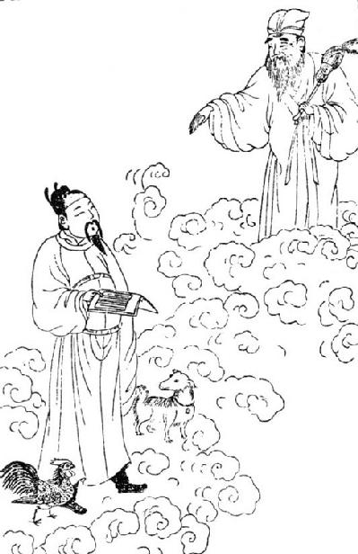
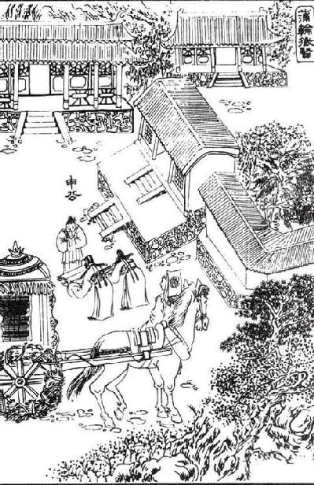

卷一百一十八 淮南衡山列传第五十八
淮南厉王长者，高祖少子也，其母故赵王张敖美人【美人：汉代仅低于皇后的妃嫔封号。】 。高祖八年，从东垣过赵，赵王献之美人。厉王母得幸焉，有身【有身：怀有身孕。】 。赵王敖弗敢内【内：同“纳”，接纳。】 宫，为筑外宫而舍之。及贯高等谋反柏人事发觉，并逮治王，尽收捕王母兄弟美人，系之河内。厉王母亦系，告吏曰：“得幸上，有身。”吏以闻上，上方怒赵王，未理厉王母。厉王母弟赵兼因辟阳侯言吕后，吕后妒，弗肯白，辟阳侯不强争。及厉王母已生厉王，恚【恚：愤怒，恼怒。】 ，即自杀。吏奉厉王诣上，上悔，令吕后母之，而葬厉王母真定。真定，厉王母之家在焉，父世县也。
高祖十一年七月，淮南王黥布反，立子长为淮南王，王黥布故地，凡四郡。上自将兵击灭布，厉王遂即位。厉王蚤【蚤：通“早”。】 失母，常附吕后，孝惠、吕后时以故得幸无患害，而常心怨辟阳侯，弗敢发。及孝文帝初即位，淮南王自以为最亲，骄蹇【骄蹇：骄傲自大。】 ，数不奉法。上以亲故，常宽赦之。三年，入朝。甚横。从上入苑囿猎，与上同车，常谓上“大兄”。厉王有材力【材力：身材高大，力大无穷。】 ，力能扛鼎，乃往请辟阳侯。辟阳侯出见之，即自袖铁椎椎辟阳侯，令从者魏敬刭之。厉王乃驰走阙下，肉袒【肉袒：脱去上衣，裸露肢体。】 谢曰：“臣母不当坐赵事，其时辟阳侯力能得之吕后，弗争，罪一也。赵王如意子母无罪，吕后杀之，辟阳侯弗争，罪二也。吕后王诸吕，欲以危刘氏，辟阳侯弗争，罪三也。臣谨为天下诛贼臣辟阳侯，报母之仇，谨伏阙下请罪。”孝文伤其志，为亲故，弗治，赦厉王。当是时，薄太后及太子诸大臣皆惮厉王，厉王以此归国益骄恣，不用汉法，出入称警跸，称制，自为法令，拟于天子。
淮南厉王刘长，是汉高祖的小儿子，他的母亲是原来赵王张敖的妃子。高祖八年（前199年），高皇帝从东垣县经过赵国，赵王将厉王的母亲献给了高皇帝。厉王的母亲得到了高祖的宠幸，怀有身孕。赵王张敖不敢让她住在宫里，于是在宫外修筑了宫室来让她居住。后来赵相贯高等人在柏人县谋害高祖的事被朝廷发觉后，赵王也一同获罪被抓，他的母亲、兄弟、嫔妃全被逮捕了，囚禁在河内。厉王的母亲也被囚禁了，她对狱吏说：“我受到皇上的宠幸，怀有身孕。”狱吏将这件事禀告给了皇上，皇上因为赵王的事正在气头上，没理会厉王的母亲。厉王母亲的弟弟赵兼拜托辟阳侯审食其告知吕后，吕后由于嫉妒，不愿向皇上禀告厉王母亲怀孕一事，辟阳侯也没再强求。厉王的母亲生下厉王后，心存愤恨自尽而亡。狱吏把厉王抱到皇上面前，皇上很后悔，下令让吕后抚养厉王，并将厉王的母亲葬在真定。真定是厉王母亲的故乡，她的祖辈世代居住在这里。
高祖十一年（前196年）七月，淮南王黥布谋反，高祖册封儿子刘长为淮南王，让他治理黥布原来的封地，共有四个郡。皇上亲自率军歼灭了黥布，厉王于是被封为淮南王。厉王自幼就失去了母亲，一直依靠吕后，所以当孝惠帝与吕后执政时期，他才免遭祸害，但是他心里一直痛恨辟阳侯而不敢说。孝文帝刚刚即位时，淮南王自以为与皇上最为亲近，开始变得桀骜不驯起来，屡次违反法令。皇上念及亲人之情，经常宽宥他的罪过。三年（前177年），他入京朝见，非常骄横。他跟随皇上进入御苑狩猎，与皇上共乘一辆车，并常称呼皇上为“大哥”。厉王身材高大且力大无穷，可以举起大鼎，于是前去会见辟阳侯。辟阳侯出来接见他，刚一见面，他立即从袖中抽出铁槌击打辟阳侯，命令跟随者魏敬砍下辟阳侯的头。之后厉王便疾驰来到皇上所居的宫殿前，袒露上身请罪说：“我的母亲不应当因赵国谋反的事情被判罪，如果那时候辟阳侯能够极力求吕后相救的话，我的母亲就能得到吕后的保护，但是他却没有力争，这是一宗罪。赵王如意母子没有罪，吕后却把他们杀死了，而辟阳侯同样没有挺身抗争，这又是一宗罪。吕后封赏吕氏族人为王，想要以此夺取刘氏天下，辟阳侯没有尽力劝谏，这是第三条罪。我为天下人杀死了奸贼辟阳侯，替母亲报了仇，我特来此地请求皇上治罪。”孝文帝怜悯厉王的心情，念及至亲之情，并没有治他的罪，赦免了他。当时，薄太后与太子、群臣都很畏惧厉王，因此厉王返回封国后越发骄横放纵，不遵守汉朝法令，出入时沿路都要清道戒严，并称自己发布的命令为“制”，还自行制定法令，一切都效仿天子。
六年，令男子但等七十人与棘蒲侯柴武太子奇谋，以輂jú车【輂车：马拉的大车。】 四十乘反谷口，令人使闽越、匈奴。事觉，治之，使使召淮南王。淮南王至长安。
“丞相臣张仓、典客臣冯敬、行御史大夫事宗正臣逸、廷尉臣贺、备盗贼中尉臣福昧死言：淮南王长废先帝法，不听天子诏，居处无度，为黄屋盖乘舆，出入拟于天子，擅为法令，不用汉法。及所置吏，以其郎中春为丞相，聚收汉诸侯人及有罪亡者，匿与居，为治家室，赐其财物爵禄田宅，爵或至关内侯，奉以二千石，所不当得，欲以有为。大夫但、士五开章等七十人与棘蒲侯太子奇谋反，欲以危宗庙社稷。使开章阴告长，与谋使闽越及匈奴发其兵。开章之淮南见长，长数与坐语饮食，为家室娶妇，以二千石俸奉之。开章使人告但，已言之王。春使使报但等。吏觉知，使长安尉奇等往捕开章。长匿不予，与故中尉蕳jiān忌谋，杀以闭口。为棺椁衣衾，葬之肥陵邑，谩吏曰‘不知安在’。又详【详：通“佯”，假装。】 聚土，树表其上，曰‘开章死，埋此下’。及长身自贼杀无罪者一人；令吏论杀无罪者六人；为亡命弃市罪诈捕命者以除罪；擅【擅：轻易，随便。】 罪人，罪人无告劾【无告劾：既没有原告又未加审核。】 ，系治城旦舂以上十四人；赦免罪人，死罪十八人，城旦舂以下五十八人；赐人爵关内侯以下九十四人。前日长病，陛下忧苦之，使使者赐书、枣脯。长不欲受赐，不肯见拜使者。南海【南海：汉代郡名，位于今广东省。】 民处庐江界中者反，淮南吏卒击之。陛下以淮南民贫苦，遣使者赐长帛五千匹，以赐吏卒劳苦者。长不欲受赐，谩言曰‘无劳苦者’。南海民王织上书献璧皇帝，忌擅燔其书，不以闻【不以闻：没有向朝廷汇报。】 。吏请召治忌，长不遣，谩言曰‘忌病’。春又请长，愿入见，长怒曰‘女欲离我自附汉’。长当弃市，臣请论如法。”
制曰：“朕不忍致法于王，其与列侯二千石议。”
六年（前174年），淮南王下令男子但等七十人与棘蒲侯柴武的太子柴奇商讨谋划，凭借四十辆大车在谷口县谋反，并派人前去闽越、匈奴请求作为外援。朝廷发觉了此事，惩处了谋反者，派使者召淮南王进京。淮南王于是来到长安。
“丞相臣张仓，典客臣冯敬、行御史大夫事宗正臣逸、廷尉臣贺、备盗贼中尉臣福冒死上书：淮南王刘长废除了先王的法令，不听从天子的诏令，日常起居毫无法度，使用天子才能乘坐的以黄缎作为车盖的车子，进出宫中全都仿效天子的声威，擅自制定法令条文，不遵行汉朝法令。他还擅自任命官吏，委任他手下的郎中春当国相，召集收纳各郡县的人以及逃犯，并将这些人藏匿起来，为他们提够居所，安顿家人，还赏赐给他们很多钱财、物资、爵位、俸禄以及田宅，有些人甚至被封关内侯的爵位，享受二千石的俸禄，这些原本是他们不该得到的，可是淮南王却都给予了他们，因为淮南王图谋不轨。大夫但、士伍开章等七十人与棘蒲侯的太子柴奇密谋造反，打算夺取刘氏天下。他们派开章偷偷告诉刘长，与刘长商讨并派人与闽越和匈奴勾结，让闽越与匈奴出兵响应。开章抵达淮南见到了刘长，刘长多次与他坐在一起会谈、宴饮，还帮他娶妻成家，用二千石俸禄来供奉他。开章派人向大夫但禀告说已经与淮南王谈妥了。国相春也派人向但等人通报。朝中官吏觉察到此事，派长安县县尉奇等人前去抓捕开章。刘长将开章藏了起来，不肯交人，与原中尉蕳忌密谋，杀死开章灭口。他们为开章准备好了棺椁与衣被，将开章葬在了肥陵邑，并欺骗朝中官吏说：“不知道开章在何处。”后来又造了一个假坟，还在坟上树立了标记，说：“开章已死，就埋在这里。”刘长还亲自杀死了一个无罪的人，下令让官吏判罪杀死了六名无罪者；为了藏匿逃亡的死囚而用没逃亡的犯人来顶罪；他擅自判处他人有罪，受害者无处伸冤，被判四年劳役以上刑罚的有十四人；他还擅自免除有罪的人，其中有十八名死刑犯，服四年劳役以下的人有五十八名；他擅自赐封爵位，赐关内侯以下者九十四人。前些时候刘长患了重病，陛下十分担心，还派人给他送去慰问信与枣脯。刘长不想接受这些赏赐，于是不愿接见使者。住在庐江郡中的南海百姓造反，淮南郡的官兵奉旨前去平定。陛下宽恤淮南百姓贫苦，派使臣赏赐给刘长五千匹布帛，令其把布帛分发给军中劳苦的士兵。刘长不想接受这个赐赠，于是谎称‘军中没有劳苦的士兵’。南海人王织上书献给皇帝玉璧，蕳忌擅自烧掉王织的奏折，并没有上奏给皇上。官吏请求刘长传召蕳忌并治他的罪，可是刘长拒不下令，还谎称‘蕳忌生病了’。国相春又请求刘长准许自己入朝见皇上，刘长勃然大怒，说：‘你打算背叛我转而投靠汉廷’。刘长应当被杀头，臣等请求陛下依法处置刘长。”
皇上下令说：“我不忍心依法处置淮南王，你们与列侯、二千石官吏商议吧。”
“臣仓、臣敬、臣逸、臣福、臣贺昧死言：臣谨与列侯吏二千石臣婴等四十三人议，皆曰‘长不奉法度，不听天子诏，乃阴聚徒党及谋反者，厚养亡命，欲以有为’。臣等议论如法。”
制曰：“朕不忍致法于王，其赦长死罪，废勿王。”
“臣仓等昧死言：长有大死罪，陛下不忍致法，幸赦，废勿王。臣请处蜀郡严道【严道：地名，今四川省荣经县一带。】 邛邮【邛邮：地名。今四川省荣经县附近。】 ，遣其子母从居，县为筑盖家室，皆廪食给薪菜盐豉炊食器席蓐。臣等昧死请，请布告天下。”
制曰：“计食长给肉日五斤，酒二斗。令故美人才人得幸者十人从居。他可。”
尽诛所与谋者。于是乃遣淮南王，载以辎车【辎车：有车篷的车。】 ，令县以次传。是时袁盎谏上曰：“上素骄淮南王，弗为置严傅相，以故至此。且淮南王为人刚，今暴摧折之。臣恐卒逢雾露病死。陛下为有杀弟之名，奈何！”上曰：“吾特【特：只不过。】 苦之耳，今复之。”县传淮南王者皆不敢发车封。淮南王乃谓侍者曰：“谁谓乃公勇者？吾安能勇！吾以骄故不闻吾过至此。人生一世间，安能邑邑如此！”乃不食死。至雍，雍令发封，以死闻。上哭甚悲，谓袁盎曰：“吾不听公言，卒亡淮南王。”盎曰：“不可奈何，愿陛下自宽。”上曰：“为之奈何？”盎曰：“独斩丞相、御史以谢天下乃可。”上即令丞相、御史逮考【逮考：抓捕，拷问。】 诸县传送淮南王不发封馈侍【馈侍：进献食物，服侍起居。】 者，皆弃市【弃市：死刑。】 。乃以列侯葬淮南王于雍，守冢三十户。
“臣张仓、臣冯敬、臣逸、臣福、臣贺冒死上奏：臣等与列侯、二千石官吏夏侯婴等四十三人商议过了，都说：‘刘长不遵守法令，不听从天子的命令，居然暗中聚集同党与谋反者，还善待逃亡的死刑犯，图谋不轨。’臣等商议后决定应当依法惩处刘长。”
皇上下令说：“我不忍心依法处置淮南王，宽赦他的死罪，废黜他的王位。”
“臣张仓等人冒死上奏：刘长犯了大死之罪，陛下不忍心依法处置他，施恩赦免他的死罪，只是废黜他的王位。臣等请求让他居住在蜀郡严道县邛莱山邮舍，他的妻妾中有孩子的也跟他一起居住，让县署为他们修建住房，并供给他们粮食、柴草、蔬菜、盐、豆豉、炊具以及被褥。我们冒死请求，将这件事告知天下。”
皇上下令说：“每天供给刘长五斤肉，二斗酒，让曾经受过他宠幸的十位妃嫔跟随他居住在蜀郡。其他全都准奏。”
朝廷将参与谋反的人尽数诛灭。于是便遣送淮南王，用蒙着黑色布帘的囚车押送，下令让沿途各县依次遣送。当时袁盎劝说皇上：“皇上向来骄纵淮南王，没有给他设置严格的太傅与国相教导劝谏他，所以他才到了如此地步。而且淮南王生性刚烈，如今如此突然勐烈地折磨他，我担心他会在途中染上风寒而病死，如果陛下落得杀弟的坏名声，该怎么办！”皇上说：“我的本意，只不过是要他受点苦罢了，会让他回来的。”沿途各县押送淮南王的人都不敢打开囚车的封门。淮南王就对仆人说：“谁说你老子我勇勐？我哪里还能勇勐！我因为骄纵而没有听到自己有什么过错，最终走到这般田地。人生在世，怎能这样抑郁呢！”于是淮南王绝食而死。囚车到达雍县，雍县的县令打开了封门，向皇上汇报了刘长的死讯。皇上哭得十分伤心，对袁盎说：“我没有听从您的话，最终害死了淮南王。”袁盎说：“这件事已无法挽回了，希望陛下能想开点儿。”皇上说：“该如何处理呢？”袁盎说：“只有杀死丞相、御史大夫来向天下人谢罪才行。”皇上于是立即下令让丞相、御史大夫捉拿拷问押送淮南王的沿途各县没有打开封门送食物的官员，把他们全都处死。于是按照列侯的礼仪将淮南王安葬在雍县，配置了三十户人家守冢祭祀。
孝文八年，上怜淮南王，淮南王有子四人，皆七八岁，乃封子安为阜陵侯，子勃为安阳侯，子赐为阳周侯，子良为东成侯。
孝文十二年，民有作歌歌淮南厉王曰：“一尺布，尚可缝；一斗粟，尚可舂。兄弟二人不能相容。”上闻之，乃叹曰：“尧舜放逐骨肉【尧舜放逐骨肉：尧放逐长子丹朱，舜放逐弟弟象。】 ，周公杀管蔡，天下称圣。何者？不以私害公。天下岂以我为贪淮南王地邪？”乃徙城阳王王淮南故地，而追尊谥淮南王为厉王，置园复如诸侯仪。
孝文十六年，徙淮南王喜复故城阳。上怜淮南厉王废法不轨，自使失国蚤死，乃立其三子：阜陵侯安为淮南王，安阳侯勃为衡山王，阳周侯赐为庐江王，皆复得厉王时地，参分之【参分之：将原淮南王刘长的旧地一分为三，用来分封他的三个儿子。】 。东城侯良前薨，无后也。

淮南王刘安
孝景三年，吴楚七国反，吴使者至淮南，淮南王欲发兵应之。其相曰：“大王必欲发兵应吴，臣愿为将。”王乃属相兵。淮南相已将兵，因城守，不听王而为汉；汉亦使曲城侯将兵救淮南：淮南以故得完。吴使者至庐江，庐江王弗应，而往来使越。吴使者至衡山，衡山王坚守无二心。孝景四年，吴楚已破，衡山王朝，上以为贞信，乃劳苦【劳苦：慰劳，慰问。】 之曰：“南方卑湿。”徙衡山王王济北【济北：诸侯国名，位于今山东省蒙阴县附近。】 ，所以褒之。及薨，遂赐谥为贞王。庐江王边越，数使使相交，故徙为衡山王，王江北。淮南王如故。
孝文帝八年（前172年），皇上怜悯淮南王，得知淮南王有四个儿子，当时都只有七八岁，于是封他的儿子刘安为阜陵侯，儿子刘勃为安阳侯，儿子刘赐为阳周侯，儿子刘良为东成侯。
孝文帝十二年（前168年），民间有人编歌谣歌唱淮南王说：“一尺麻布，尚且可以用来缝衣；一斗谷子，尚且还可以舂米。兄弟两人却无法相容。”皇上听说后，就叹息说：“尧舜放逐他们的骨肉至亲，周公诛杀管叔和蔡叔，天下人却称颂他们是圣贤。为何呢？因为他们都不因私情而损害公义。天下人难道认为我是为了贪占淮南王的封地吗？”于是让城阳王刘喜去治理淮南王原来的封地，并追封淮南王谥号厉王，仍旧按照诸侯王的规格为淮南王修建了陵园。
孝文帝十六年（前164年），让淮南王刘喜又返回城阳故地。孝文帝怜悯淮南厉王由于废弃法令，图谋不轨，最终导致自己失国、早逝，于是就册封他的三个儿子：阜陵侯刘安为淮南王，安阳侯刘勃为衡山王，阳局侯刘赐为庐江王，同时孝文帝将厉王的封地一分为三，分封他们。东城侯刘良在此之前就去世了，没有后人。
孝景帝三年（前154年），吴、楚七国造反，吴王派使者前往淮南联系，淮南王刘安打算出兵响应他们。他的国相说：“大王要是非要派兵响应吴王的话，我愿意充当统军将领。”于是淮南王就将兵权交给了国相。淮南国相获得兵权后，便坚守城池，不再听从淮南王的号令而忠心为朝廷效力；朝廷也派曲城侯领兵援救淮南，淮南因此才得以保全。吴国使者来到了庐江，庐江王刘赐并不同意相应，而是派人与越国联系。吴国使者又来到衡山，衡山王刘勃坚守城池，不肯背叛汉。孝景帝四年（前153年），吴、楚叛军已被平定，衡山王进京朝见，孝景帝认为他忠贞正直，就慰劳他说：“南方地势低洼潮湿。”让衡山王改到济水以北的地区称王，以此来奖赏他。他死后，又谥封他为贞王。庐江王的封地紧挨着越国，屡次派使者与越国结交，因此让他当衡山王，掌管江北地区。淮南王仍旧和原来一样。
淮南王安为人好读书鼓琴，不喜弋猎狗马驰骋，亦欲以行阴德【阴德：暗中不为人所知的德行。】 拊循【拊循：抚慰，安抚。】 百姓，流誉天下。时时怨望厉王死，时欲畔逆，未有因也。及建元二年，淮南王入朝。素善武安侯，武安侯时为太尉，乃逆【逆：迎接。】 王霸上，与王语曰：“方今上无太子，大王亲高皇帝孙，行仁义，天下莫不闻。即宫车一日晏驾，非大王当谁立者！”淮南王大喜，厚遗武安侯金财物。阴结宾客，拊循百姓，为畔逆事。建元六年，彗星见，淮南王心怪之。或说王曰：“先吴军起时，彗星出长数尺，然尚流血千里。今彗星长竟天【竟天：满天。】 ，天下兵当大起。”王心以为上无太子，天下有变，诸侯并争，愈益治器械攻战具，积金钱赂遗郡国诸侯游士奇材。诸辨士为方略者，妄作妖言，谄谀王，王喜，多赐金钱，而谋反滋甚。
淮南王有女陵，慧，有口辩。王爱陵，常多予金钱，为中诇xiòng【诇：刺探，侦察。】 长安，约结【约结：收买。】 上左右。元朔三年，上赐淮南王几杖，不朝。淮南王王后荼，王爱幸之。王后生太子迁，迁取王皇太后外孙修成君女为妃。王谋为反具，畏太子妃知而内泄事，乃与太子谋，令诈弗爱，三月不同席。王乃详【详：通“佯”，佯装。】 为怒太子，闭太子使与妃同内三月，太子终不近妃。妃求去，王乃上书谢归去之。王后荼、太子迁及女陵得爱幸王，擅国权，侵夺民田宅，妄致系人。
淮南王刘安爱好读书弹琴，不爱射猎、放狗、骑马，他也想暗中对百姓施以恩惠来安抚他们，得以让自己美名流传于天下。他对于厉王之死怀恨在心，心中总是想着谋反，只是苦于没有机会。到建元二年（前139年），淮南王进京朝见皇上。他向来与武安侯田鼢的关系很好，当时武安侯田鼢担任太尉，于是在霸上恭候淮南王，并对淮南王说：“当今皇上没有太子，大王您可是高皇帝的嫡孙，而且乐于施行仁义，天下无人不知人。假如皇上驾崩的话，除了大王您还有谁能够继位呢！”淮南王听后十分高兴，赠给武安侯很多金银财物。淮南王暗中结交宾客，安抚百姓，为谋反做准备。建元六年（前135年），出现了彗星，淮南王觉得很奇怪。有人劝淮南王说：“之前吴王造反时，出现的彗星只有几尺长，尚且发生了血流千里的惨剧。现在出现的彗星长至满天，应该起兵反叛。”淮南王心想皇上没有太子，天下一旦发生变故，诸侯王就会一齐争夺皇位，于是他便更加紧整修军械与攻战用具，积攒金钱贿赂郡守、诸侯王、说客与有奇才的人。那些能言善辩的人为淮南王出谋划策，他们胡乱编造一些迷惑人的邪恶言论，来阿谀奉承淮南王，淮南王很高兴，赐给他们很多金钱，而淮南王造反的念头也越来越强烈了。
淮南王有个女儿叫刘陵，为人聪慧，有口才。淮南王很宠爱她，经常给她很多钱，让她在长安打探朝中内情，结交皇上身边的人。元朔三年（前126年），皇上赐给淮南王几案与手杖，准许他可以不用进京朝拜。淮南王的王后名为荼，淮南王很宠幸她。王后生下太子刘迁，刘迁娶了王皇太后外孙修成君的女儿当妃子。淮南王为谋划做各种准备工作，担心太子妃知道后而向朝廷泄露此事，于是与太子密谋，让太子假装不喜爱太子妃，三个月都不与太子妃同床共寝。于是淮南王假装对太子发怒，将太子关了起来，强迫他与太子妃同席共寝，三个月的时间太子始终没有亲近太子妃。太子妃因此请求离开，淮南王于是就上书向朝廷致歉并派人把她送了回去。王后荼、太子刘迁与女儿刘陵深受淮南王的宠爱，他们独揽国家大权，任意侵占百姓的田地住房，胡乱加罪逮捕无辜的人。
元朔五年，太子学用剑，自以为人莫及，闻郎中雷被巧，乃召与戏。被一再辞让，误中太子。太子怒，被恐。此时有欲从军者辄诣京师，被即愿奋击匈奴。太子迁数恶被于王，王使郎中令斥免，欲以禁后，被遂亡至长安，上书自明。诏下其事廷尉、河南【河南：郡名。】 。河南治，逮淮南太子，王、王后计欲无遣太子，遂发兵反，计犹豫，十余日未定。会有诏，即讯【即讯：就地审讯，是一种优待。】 太子。当是时，淮南相怒寿春丞留太子逮不遣，劾不敬。王以请相，相弗听。王使人上书告相，事下廷尉治。踪迹【踪迹：用作动词，追查。】 连王，王使人候【候：探查。】 伺汉公卿，公卿请逮捕治王。王恐事发，太子迁谋曰：“汉使即逮王，王令人衣卫士衣，持戟居庭中，王旁有非是【非是：紧急情况。】 ，则刺杀之，臣亦使人刺杀淮南中尉【淮南中尉：诸侯国中最高武官。】 ，乃举兵，未晚。”是时上不许公卿请，而遣汉中尉宏【汉中尉宏：汉王朝的中尉，负责首都的治安。】 即讯验王。王闻汉使来，即如太子谋计。汉中尉至，王视其颜色和，讯王以斥雷被事耳，王自度无何，不发。中尉还，以闻。公卿治者曰：“淮南王安拥阏【拥阏：同“壅遏”，拦截，阻拦。】 奋击匈奴者雷被等，废格【废格：没有执行。】 明诏，当弃市。”诏弗许。公卿请废勿王，诏弗许。公卿请削五县，诏削二县。使中尉宏赦淮南王罪，罚以削地。中尉入淮南界，宣言赦王。王初闻汉公卿请诛之，未知得削地，闻汉使来，恐其捕之，乃与太子谋刺之如前计。及中尉至，即贺王，王以故不发。其后自伤曰：“吾行仁义见削，甚耻之。”然淮南王削地之后，其为反谋益甚。诸使道从长安来，为妄妖言，言上无男，汉不治，即喜；即言汉廷治，有男，王怒，以为妄言，非也。
元朔五年（前124年），太子刘迁学习剑法，自认为无人能比得过他，听说郎中雷被剑艺超群，于是便召他前来比试。雷被再三退让，失手误伤太子。太子大怒，雷被十分恐慌。当时想参军的人会被送往京城，雷被当即决定参军去攻打匈奴。太子刘迁屡次在淮南王面前诬陷雷被，淮南王派郎中令免去了雷被的官职，想以此儆戒后人，于是雷被逃到长安，向皇上上奏为自己鸣冤。皇上下令让廷尉、河南郡处理这件事。河南郡审议后决定，逮捕淮南太子刘迁，淮南王与王后不打算交出太子，打算趁机兴兵谋反，但是迟疑不定，十多天也没商量好。正赶上皇上又下达了一份诏书，命就地审讯太子。在这个时候，淮南国相对于寿春县县丞扣留了逮捕太子命令的做法十分不满，于是弹劾他犯有大不敬之罪。淮南王请求国相不要追究此事，国相没有听从。淮南王派人上书指控国相，皇上下令让廷尉来调查此事。在此案中追查线索牵连到了淮南王，于是淮南王派人暗中窥探朝中公卿大臣的想法，公卿大臣请求皇上缉拿淮南王。淮南王害怕谋反的事情泄露，太子刘迁献计说：“朝廷如果派使臣来捉拿父王，父王可以下令让手下人穿上卫士的衣裳，持戟站在庭院当中保护您，一旦发生不测，就刺死使者，我也派人前去刺杀淮南国中尉，就此兴兵谋反，也不迟。”当时皇上不允许公卿大臣奏请，而派朝中的中尉殷宏立即前往淮南国审讯、调查淮南王。淮南王听说朝中的使臣来了，马上按照太子的计谋作好了准备。中尉殷宏到达后，淮南王见他态度温和，只是询问自己罢免雷被的理由，他推测朝廷不会判他有罪的，于是就没兴兵造反。中尉返回京城后，将调查的情况汇报给皇上，公卿大臣中办理此案的官吏说：“淮南王刘安阻碍雷被参军攻打匈奴等行为是拒不执行皇帝的诏令，应当弃市问斩。”皇上下令不准许这样做。公卿大臣请求废黜淮南王，皇上也没答应。公卿大臣请求夺去淮南王五县封地，皇上下令只剥夺了两县封地。朝廷派中尉殷宏去淮南国宣布赦免淮南王的罪过，以削夺两县封地表示惩罚。中尉进入淮南国中，打算宣布赦免淮南王。淮南王最初时听说朝中公卿大臣请求诛杀自己，并不知道自己已获得宽宥削地，他听说朝中使臣已经来了，害怕自己被抓，于是就与太子按照之前定好的计谋准备刺杀中尉。等中尉到来后，只是祝贺淮南王被赦免了，淮南王因此没有兴兵造反。后来他自我感伤道：“我施行仁义但是却被削夺了封地，这实在太耻辱了。”然而淮南王被削夺封地后，他想造反的念头更加强烈了。从长安来的那些使者们，常爱编造一些荒诞骗人的邪恶言论，凡是说皇上没有儿子，汉家天下不太平的，淮南王就高兴；要是说汉王朝太平，皇上有继承人，淮南王就会勃然大怒，认为那是谬说，不可信。
王日夜与伍被、左吴等案舆地图，部署兵所从入。王曰：“上无太子，宫车即晏驾，廷臣必征胶东王，不即常山王，诸侯并争，吾可以无备乎！且吾高祖孙，亲行仁义，陛下遇我厚，吾能忍之；万世之后，吾宁能北面臣事竖子乎！”
淮南王整日整夜地与伍被、左吴等人研究地图，部署军队进攻的路线。淮南王说：“皇上没有太子，一旦驾崩，朝中群臣肯定会征召胶东王，要不然就是常山王，诸侯王共同争夺皇位，我怎么能不作任何准备呢！何况我是高祖的嫡孙，亲自施行仁义，高祖待我很优厚，所以我可以接受他的统治；高祖万世之后，我怎么能北面称臣来事奉这小儿呢！”
王坐东宫，召伍被与谋，曰：“将军上。”被怅然【怅然：不高兴。】 曰：“上宽赦大王，王复安得此亡国之语【亡国之语：依照汉朝的制度，诸侯国没有将军。将军，是天子之官。】 乎！臣闻子胥谏吴王，吴王不用，乃曰‘臣今见麋鹿游姑苏之台也’。今臣亦见宫中生荆棘，露沾衣也。”王怒，系伍被父母，囚之三月。复召曰：“将军许寡人乎？”被曰：“不，直【直：不过。】 来为大王画【画：谋划。】 耳。臣闻聪者听于无声，明者见于未形，故圣人万举万全。昔文王一动而功显于千世，列为三代，此所谓因天心【因天心：顺应上天的安排。】 以动作者也，故海内不期而随。此千岁之可见者。夫百年之秦，近世之吴楚，亦足以喻国家之存亡矣。臣不敢避子胥之诛，愿大王毋为吴王之听。昔秦绝圣人之道，杀术士【杀术士：指焚书坑儒中的坑儒。】 ，燔《诗》《书》，弃礼义，尚诈力，任刑罚，转负海之粟【负海之粟：东部沿海一带出产的粮食。】 致之西河。当是之时，男子疾耕不足于糟糠【不足于糟糠：忍饥挨饿。】 ，女子纺绩不足于盖形【不足于盖形：赤身裸体，指没有衣服穿。】 。遣蒙恬筑长城，东西数千里，暴兵露师常数十万，死者不可胜数，僵尸千里，流血顷亩，百姓力竭，欲为乱者十家而五。又使徐福入海求神异物，还为伪辞曰：‘臣见海中大神，言曰：“汝西皇之使邪？”臣答曰：“然。”“汝何求？”曰：“愿请延年益寿药。”神曰：“汝秦王之礼薄，得观而不得取。”即从臣东南至蓬莱山，见芝成宫阙，有使者铜色而龙形，光上照天。于是臣再拜问曰：“宜何资【资：通“赍”，携带。】 以献？”海神曰：“以令名男子若振女【振女：指年轻的女子。】 与百工之事，即得之矣。”’秦皇帝大说，遣振男女三千人，资之五谷种种百工而行。徐福得平原广泽，止王不来【止王不来：停留在那里并且称王。】 。于是百姓悲痛相思，欲为乱者十家而六。又使尉佗逾五岭攻百越。尉佗知中国劳极，止王不来，使人上书，求女无夫家者三万人，以为士卒衣补。秦皇帝可其万五千人。于是百姓离心瓦解，欲为乱者十家而七。客谓高皇帝曰：‘时可矣。’高皇帝曰：‘待之，圣人当起东南间。’不一年，陈胜吴广发矣。高皇始于丰沛，一倡天下不期而响应者不可胜数也。此所谓蹈瑕候间【蹈瑕候间：伺机而动。】 ，因秦之亡而动者也。百姓愿之，若旱之望雨，故起于行陈之中而立为天子，功高三王，德传无穷。今大王见高皇帝得天下之易也，独不观近世之吴楚乎？夫吴王赐号为刘氏祭酒，复不朝，王四郡之众，地方数千里，内铸消铜以为钱，东煮海水以为盐，上取江陵木以为船，一船之载当中国数十两车，国富民众。行珠玉金帛赂诸侯宗室大臣，独窦氏不与【不与：不在贿赂的人中。】 。计定谋成，举兵而西。破于大梁，败于狐父，奔走而东，至于丹徒，越人禽之，身死绝祀，为天下笑。夫以吴越之众不能成功者何？诚逆天道而不知时也。方今大王之兵众不能十分吴楚之一，天下安宁有万倍于秦之时，愿大王从臣之计。大王不从臣之计，今见大王事必不成而语先泄也。臣闻微子过故国而悲，于是作《麦秀之歌》，是痛纣之不用王子比干也。故《孟子》曰：‘纣贵为天子，死曾不若匹夫。’是纣先自绝于天下久矣，非死之日而天下去之。今臣亦窃悲大王弃千乘之君，必且赐绝命之书，为群臣先，死于东宫也。”于是气怨结而不扬，涕满匡而横流，即起，历阶【历阶：快步走进后宫。】 而去。
淮南王坐在东宫，召见伍被与其谋划，说：“请将军上殿。”伍被不高兴地说：“皇上刚刚宽赦了大王，大王为何又说出这种亡国的话呢！我听说伍子胥劝谏吴王，吴王没有采纳他的意见，伍子胥于是说‘我现在就见到麋鹿在姑苏台上到处游荡了’。如今我也见到了宫廷中长满了荆棘，露水都把衣服打湿了。”淮南王十分生气，把伍被的父母抓起来，关押了三个月。淮南王再次召见伍被说：“将军答应跟我一同举事么？”伍被回答说：“不，我只是为了帮大王分析一下形势。我听说耳朵灵的人能在无声时听出动静，高明的人能在事情未成形时看出征兆，因此圣人做事能够万无一失。昔日周文王率军讨伐商纣王，一行动就能功显千代，使周朝继夏、商后，列入‘三代’，这就是所谓的依照上天的意旨来行动的结果，因此天下人不约而同地跟随周文王讨伐商。这是今天可以见到千年前的史实。而百年前的秦朝，近代的吴国与楚国，也足以表明国家存亡的道理。我不敢躲避伍子胥被杀的惩罚，只是希望大王不要像吴王那样不听劝说。过去秦朝摒弃了圣人之道，杀死儒生方士，烧毁了《诗》《书》，弃绝礼义，崇尚欺诈与暴力，提倡采用刑罚，迫使百姓把沿海地区出产的粮食转运到西河。在这个时候，男子努力耕作却忍饥挨饿，女人奋力织布却衣不蔽体。秦始皇派蒙恬修建长城，东西长达数千里，风餐露宿的士兵时常有几十万人，死者不计其数，尸体倒伏千里，流血遍及百亩，百姓精疲力竭，十家中有五家都想造反。秦始皇又让徐福前往东海访寻神仙与奇珍异物，徐福回来欺骗秦始皇说：‘我见到了海中的神仙，他问：“你是西土皇帝的使臣吗？”我回答说：“是的。”“你来寻找什么？”我回答说：“希望能寻找到益寿延年的仙药。”神仙说：“你们秦王送的礼品太少了，所以只能看一眼仙药却不能取走。”说完立即就带我向东南行至蓬莱山，我见到了用灵芝搭建成的宫殿，还看到了一个肤色如铜、身形似龙的使者，他的光彩照亮了天空。我于是拜了两拜问：“那么应该供献什么礼物呢？”海神说：“供献出良家的男童与女童以及工匠的制品，就可以得到仙药了。”’秦始皇非常高兴，派出三千名童男、童女、五谷种子以及工匠前往东海。徐福在途中找到一片广阔的原野与湖泽，便停留在那里自立为王再没返回秦朝。百姓悲痛，想念亲人，这一次十家当中有六家都想造反了。秦始皇又派南海郡尉赵佗翻越五岭去攻伐百越。赵佗知道中原已疲劳至极，就留在南越称王不回来了，并派人上书朝廷，要求国家送给他三万名未嫁人的女子，来为士兵织补衣裳。秦始皇答应给他一万五千人。于是百姓人心涣散如同土崩瓦解，十家当中有七家想造反了。宾客对高皇帝说：‘时机来了。’高皇帝说：‘再等一等，当有圣人在东南方起兵。’没到一年，陈胜、吴广揭竿而起。高皇帝在丰沛起兵，向天下一发倡议，不约而同地响应高皇帝的人不可胜数。这就是所谓的伺机而起，借助秦朝的危亡而起事。百姓盼望他，就像干旱时盼望下雨一样，所以他虽是军伍出身却能被拥立为天子，功绩盖过三王，恩德会无穷尽地流传下去。如今大王只看见高皇帝得到了天下很容易，却偏偏难道就没有看到近代吴楚的灭亡吗？吴王被赐号为刘氏祭酒，又被恩准无需进京朝见，统治四个郡的百姓，封地方圆几千里，在国中可自行开采铜矿来铸钱，东面可烧煮海水获得食盐，溯江而上可采伐江陵的木材来造船，一艘船的载重相当于中原几十辆车的容量，国家富裕，百姓众多。吴王用珠宝金帛贿赂各诸侯王、宗室贵族以及朝中大臣，唯独窦氏没有和他勾结。造反的计谋已商议好了，吴王便发兵向西进攻。在大梁吴军被攻破，在狐父被彻底打败，吴王率军向东逃跑，到达丹徒，被东越人俘获，身死又断绝了后代，遭到天下人的耻笑。吴楚拥有那样多的军队为何还是没能成就功业呢？实际上是因为违背了天道并且不识时务。现在大王您的兵力还不及吴楚的十分之一，而此时的天下要比秦国时安宁一万倍，希望大王能听从我的建议。如果大王不听从我的规劝，如今大王想要做的事情一定不会成功而且今天说的话也会泄露出去。我听说箕子路过殷朝故都时心里很难过，于是作了《麦秀之歌》，这是哀痛纣王没有听从王子比干的规劝。因此《孟子》说：‘纣王贵为一朝天子，可是死的时候连一个普通百姓都比不上。’这是因为纣王早就自绝于天下人了，而不是死的时候才被天下人所抛弃的。现在我也在私下里哀痛大王抛弃了诸侯国君的尊贵，朝廷一定会赐给您绝命书，您将会在群臣之前死于东宫了。”说完，伍被愤愤之气郁结胸中，神情黯淡，他泪流满面，立即站起身，淮南王快步走进后宫。
王有孽子【孽子：妾所生的孩子，庶子。】 不害，最长，王弗爱，王、王后、太子皆不以为子兄数。不害有子建，材高有气，常怨望太子不省【省：看望，探望。】 其父；又怨时诸侯皆得分子弟为侯，而淮南独二子，一为太子，建父独不得为侯。建阴结交，欲告败太子，以其父代之。太子知之，数捕系而榜笞【榜笞：鞭笞。】 建。建具知太子之谋欲杀汉中尉，即使所善寿春庄芷以元朔六年上书于天子曰：“毒药【毒药：药性凶猛的药。】 苦于口利于病，忠言逆于耳利于行。今淮南王孙建，材能高，淮南王王后荼、荼子太子迁常疾害建。建父不害无罪，擅数捕系，欲杀之。今建在，可征问，具知淮南阴事。”书闻，上以其事下廷尉，廷尉下河南治。是时故辟阳侯孙审卿善丞相公孙弘，怨淮南厉王杀其大父【大父：祖父。】 ，乃深购【够：通“构”，构陷，陷害。】 淮南事于弘，弘乃疑淮南有畔逆计谋，深穷治其狱。河南治建，辞引淮南太子及党与。淮南王患之，欲发，问伍被曰：“汉廷治乱？”伍被曰：“天下治。”王意不说，谓伍被曰：“公何以言天下治也？”被曰：“被窃观朝廷之政，君臣之义，父子之亲，夫妇之别，长幼之序，皆得其理，上之举错遵古之道，风俗纪纲未有所缺也。重装富贾，周流天下，道无不通，故交易之道行。南越宾服，羌晰入献，东瓯入降，广长榆，开朔方，匈奴折翅伤翼，失援不振。虽未及古太平之时，然犹为治也。”王怒，被谢死罪。王又谓被曰：“山东即有兵，汉必使大将军将而制山东，公以为大将军何如人也？”被曰：“被所善者黄义，从大将军击匈奴，还，告被曰：‘大将军遇士大夫有礼，于士卒有恩，众皆乐为之用。骑上下山若蜚，材干绝人。’被以为材能如此，数将习兵【数将习兵：多次带领军队。】 ，未易当【未易当：不容易对付。】 也。及谒者曹梁使长安来，言大将军号令明，当敌勇敢，常为士卒先。休舍，穿井未通，须士卒尽得水，乃敢饮。军罢，卒尽已度河，乃度。皇太后所赐金帛，尽以赐军吏。虽古名将弗过也。”王默然。
淮南王有个庶子叫刘不害，年龄最大，但是淮南王并不喜欢他，淮南王、王后荼不把他当作儿子，太子刘迁也都不把他看成是兄长。刘不害有个儿子叫刘建，才能出众且有志气，常常抱怨太子不来看望他父亲；还由于当时诸侯的子弟都能封为侯而心怀不满，而淮南王只有两个儿子，一个做了太子，而只有刘建的父亲没能封为侯。于是刘建暗中勾结他人，打算告发太子，使他的父亲取而代之。太子得知后，多次囚禁并鞭笞拷打刘建。刘建知道太子想要杀死朝廷中尉等起事的阴谋，就立即派好友寿春县人庄芷在元朔六年（前123年）上书汉武帝说：“药性勐烈的药虽然很难让人吞咽，但有利于治病，而忠诚的言辞多数是不太动听的，但有利于人们改正缺点。淮南王的孙子刘建，他才能出众，但是淮南王的王后荼、太子刘迁都想除掉他。刘建的父亲刘不害并没有过错，却几次被无故捆绑关押，打算杀死他。如今刘建在，可以把他召来审问一下，淮南王的阴谋他全都知道。”奏书呈上去后，皇上让廷尉来处理此事，廷尉又把此事下达给河南郡处理。这时原辟阳侯的孙子审卿与丞相公孙弘的关系好，他憎恨淮南厉王害死了自己的祖父，于是就在公孙弘面前极力罗织罪名构陷淮南王，公孙弘因此怀疑淮南王可能有造反的阴谋，决定深入调查此案件。河南郡府审讯刘建，他供出了太子刘迁及其党羽。淮南王十分担心，想要起事，询问伍被说：“汉朝天下太不太平？”伍被说：“天下太平。”淮南王心里很不高兴，问伍被说：“您凭什么说天下太平呢？”伍被说：“我暗中观察了朝政，君臣之间的礼义，父子之间的亲情，夫妻之间的区别，长幼之间的秩序，全都符合原则，皇上施行的政策也都与符合古代治国之道相符，风俗与法度也没有缺失的。满载货物的富商，遍行天下，道路没有不畅通的，因此贸易之事盛行。南越已归顺，羌、晣进献贡品，东瓯内迁投降，朝廷扩大了长榆塞，并开辟了朔方郡，挫伤了匈奴，使匈奴失去援助而不能再振作起来了。虽然现在还不及古代的太平盛世，但还算是太平安定的。”淮南王大怒，伍被立即表示愿意以死谢罪。淮南王又对伍被说：“如果崤山以东爆发战争，朝廷必定会派大将军卫青率军前去镇压，您认为大将军是个怎样的人？”伍被说：“我有个好友叫黄义，他曾跟随大将军讨伐匈奴，回来后，告诉我说：‘大将军待士大夫很有礼貌，对士兵有恩德，大家都愿意为他效力。大将军骑马上下山如飞一样急速，才能过人。’我认为既然他有如此过人的才能，又屡次带兵打仗，通晓军事，所以不容易抵抗。还有谒者曹梁出使长安归来，说大将军军纪严明，与敌作战时非常勇勐，常常身先士卒。扎营休息时，井还没彻底凿通时，一定待士兵都喝上水后，他才肯喝水。战争结束军队归来时，士兵们都渡过河后，他才肯过河。皇太后赏赐给他的财物，他全都转赐给属下了。就是古代的名将也比不上他。”淮南王默默无言。
淮南王见建已征治，恐国阴事且觉，欲发，被又以为难，乃复问被曰：“公以为吴兴兵是邪非也？”被曰：“以为非也。吴王至富贵也，举事不当，身死丹徒，头足异处，子孙无遗类。臣闻吴王悔之甚。愿王孰虑之，无为吴王之所悔。”王曰：“男子之所死者一言耳。且吴何知反，汉将一日过成皋者四十余人。今我令楼缓先要【要：拦截，阻截。】 成皋之口，周被下颍川兵塞 辕【 辕：关隘名。】 、伊阙【伊阙：关隘名。】 之道，陈定发南阳【南阳：南阳郡。】 兵守武关。河南太守独有洛阳耳，何足忧。然此北尚有临晋关、河东【河东：河东郡。】 、上党【上党：上党郡。】 与河内【河内：河内郡。】 、赵国。人言曰‘绝成皋之口，天下不通’。据三川之险，招山东之兵，举事如此，公以为何如？”被曰：“臣见其祸，未见其福也。”王曰：“左吴、赵贤、朱骄如皆以为有福，什事九成，公独以为有祸无福，何也？”被曰：“大王之群臣近幸素能使众者，皆前系诏狱，余无可用者。”王曰：“陈胜、吴广无立锥之地，千人之聚，起于大泽，奋臂大呼而天下响应，西至于戏而兵百二十万。今吾国虽小，然而胜兵【胜兵：能够拿起武器作战的。】 者可得十余万，非直适戍之众，釠凿棘矜也，公何以言有祸无福？”被曰：“往者秦为无道，残贼天下。兴万乘之驾，作阿房之宫，收太半【太半：半数以上。】 之赋，发闾左【闾左：平民。】 之戍，父不宁子，兄不便弟，政苛刑峻，天下熬然若焦，民皆引领【引领：伸长脖子。】 而望，倾耳而听，悲号仰天，叩心而怨上，故陈胜大呼，天下响应。当今陛下临制天下，一齐海内，泛爱蒸庶【蒸庶：平民百姓。】 ，布德施惠。口虽未言，声疾雷霆，令虽未出，化驰如神，心有所怀，威动万里，下之应上，犹影响也。而大将军材能不特【不特：不止。】 章邯、杨熊也。大王以陈胜、吴广谕之，被以为过矣。”王曰：“苟如公言，不可徼幸邪？”被曰：“被有愚计。”王曰：“奈何？”被曰：“当今诸侯无异心，百姓无怨气。朔方之郡田地广，水草美，民徙者不足以实其地。臣之愚计，可伪为丞相御史请书，徙郡国豪桀任侠及有耐罪【耐罪：剃掉鬓须的处罚。】 以上，赦令除其罪，产五十万以上者，皆徙其家属朔方之郡，益发甲卒，急其会日【会日：期限。】 。又伪为左右都司空上林中都官诏狱书，逮诸侯太子幸臣。如此则民怨，诸侯惧，即使辩武随而说之，傥可徼幸什得一乎？”王曰：“此可也。虽然，吾以为不至若此。”于是王乃令官奴入宫，作皇帝玺，丞相、御史、大将军、军吏、中二千石、都官令、丞印，及旁近郡太守、都尉印，汉使节法冠，欲如伍被计。使人伪得罪而西，事大将军、丞相；一日发兵，使人即刺杀大将军青，而说丞相下之，如发蒙耳。
淮南王见到刘建已经被朝廷召去审问了，担心在国中密谋造反的事情会被朝廷发现，于是打算起兵反叛，可是伍被认为很难成功，淮南王再次询问伍被说：“您认为吴王起兵是对还是错呢？”伍被说：“我认为不对。吴王富贵至极，但却举兵造反，结果死在丹徒，身首异处，也没留下子孙后代。我听说吴王非常悔恨。希望大王三思而行，不要重蹈吴王悔恨的覆辙。”淮南王说：“男子汉会为了践行自己的一句承诺而甘愿赴死。况且吴王哪里懂得谋反，居然让朝廷将领一天当中有四十多人越过了成皋关口。如今我要下令让楼缓首先守住成皋关口，让周被夺取颍川郡，然后率军阻塞 辕、伊阙的道路，让陈定统领南阳郡的军队扼守武关。河南太守只拥有洛阳而已，有什么值得担忧的呢！然而这北面尚且有临晋关、河东、上党以及河内、赵国。人们常说：‘断绝成皋关口，天下就不能通行了’。我们凭借盘踞三川之地的成皋险关，招揽崤山以东的军队响应，这样起兵，您认为怎么呢？”伍被说：“我只见到了这样做带来的祸患，没有见到它成功的福运。”淮南王说：“左吴、赵贤、朱骄如全都认为有福运，十成的几率占了九成，唯独您认为有祸无福，为何？”伍被说：“大王手下的这些大臣，与您亲近的、平时能够号令众人的，都在之前皇上诏办的罪案中被囚禁了，剩下的没有可以倚重的了。”淮南王说：“陈胜、吴广没有立锥之地，尚且能够聚集一千人，在大泽乡起义，他们举起手臂高呼造反，天下人就纷纷响应，他们向西进攻到戏水时已拥有一百二十万人的军队了。如今我的王国虽然小，可是能充当兵士参加作战的人可有十多万，他们绝非是乌合之众，他们手中持有的兵器也不是木弩与戟柄，您凭什么说起事会有祸无福呢？”伍被说：“昔日的秦朝残暴无道，戕害天下百姓。徵调万辆车驾，修筑阿房宫，搜刮百姓大半的收入作为赋税，徵调贫苦的百姓去戍守边疆，父亲无法保护儿子平安，兄长不能使弟弟过上安心的生活，政令严苛、刑法严酷，百姓备受煎熬，天下黎民痛苦不已，他们都翘首以盼，侧着耳朵倾听，悲痛地仰天呼号，捶胸顿足怨恨皇上，因此陈胜振臂高呼，百姓便纷纷响应。现在皇上临朝统治天下，统一四方，爱护他的百姓，广施恩惠。即使他没有开口讲话，其声音传播得也如雷电般迅速。即使诏令还没颁布，德化就会很快被施行，其速度之快犹如有神相助。皇上心有所想，其威势就可撼动万里江山，民众响应皇上，若影之随形、响之应声一样。而且大将军卫青的才能不是秦将章邯、杨熊能比的。大王自喻为陈胜、吴广，伍被我认为不恰当。”淮南王说：“假使真如您说的那样，不能够侥幸成功吗？”伍被说：“我有一个愚蠢的策略。”淮南王说：“是什么呢？”伍被说：“现在诸侯对朝廷都没有二心，百姓对朝廷也没有怨气。朔方郡土地辽阔，水草丰美，迁徙到那里的人们还不足以充分开发那里。我的愚蠢计策是，可以伪造丞相、御史写给皇上的奏折，请求迁徙各郡国的豪强、游侠，还有被判罚两年以上的罪犯，下令免除他们的罪过，凡是家产超过五十万钱以上的，都要携带家属迁徙到朔方郡，多派一些士兵监督、催促他们按期准时到达。之后再伪造宗正府左右都司空、上林苑与京师官府下达的皇帝诏书，将诸侯王的太子以及宠信的大臣全都抓起来。这样做，百姓对朝廷就会有怨气，诸侯因为害怕，会立刻派能言善辩的说客去劝说他们造反，或许能够侥幸获得十分之一的成功几率吧！”淮南王说：“这个计策可行。虽然您说得有一定的道理，但我认为不至于有您说的那么难。”淮南王于是就下令让官奴进宫，伪造皇帝的印玺，丞相、御史、大将军、军吏、中二千石、京师各官府令与县丞的官印，还有附近郡国的太守与都尉的官印，以及朝廷使者与法官的官帽，准备依照伍被的策略行事。派人假装犯罪后向西逃到长安，侍奉大将军与丞相；一旦发兵反叛，就让这些人把大将军卫青刺死，之后再劝说丞相屈服，那就像拿掉一块盖布一样容易了。
王欲发国中兵，恐其相、二千石不听。王乃与伍被谋，先杀相、二千石；伪失火宫中，相、二千石救火，至即杀之。计未决，又欲令人衣求盗【求盗：负责抓捕小偷的小官。】 衣，持羽檄【羽檄：军中的紧急文书。】 ，从东方来，呼曰“南越兵入界”，欲因以发兵。乃使人至庐江、会稽为求盗，未发。王问伍被曰：“吾举兵西乡，诸侯必有应我者；即无应，奈何？”被曰：“南收【收：吞并，合并。】 衡山以击庐江，有寻阳之船，守下雉之城，结九江之浦，绝豫章之口，强弩临江而守，以禁南郡之下，东收江都、会稽，南通劲越，屈强江淮间，犹可得延岁月之寿。”王曰：“善，无以易此。急则走越耳。”
于是廷尉以王孙建辞连淮南王太子迁闻。上遣廷尉监因拜淮南中尉，逮捕太子。至淮南，淮南王闻，与太子谋召相、二千石，欲杀而发兵。召相，相至；内史以出为解。中尉曰：“臣受诏使，不得见王。”王念独杀相而内史中尉不来，无益也，即罢相。王犹豫，计未决。太子念所坐者谋刺汉中尉，所与谋者已死，以为口绝，乃谓王曰：“群臣可用者皆前系，今无足与举事者。王以非时发，恐无功，臣愿会逮。”王亦偷【偷：苟且。】 欲休，即许太子。太子即自刭，不殊。伍被自诣吏，因告与淮南王谋反，反踪迹具如此。
淮南王打算发动国中的军队，但又担心自己的国相、二千石官员不会听从。于是淮南王就与伍被谋划，打算先把国相、二千石官员除掉；他们决定造成宫中失火的假象，等国相、二千五官员前来救火的时候，立即杀掉他们。这个计谋还没有最终确定，淮南王又打算派人身穿抓捕盗贼的士卒的衣服，手持紧急的军书，从东方跑来，高呼“南越兵入侵了”，想借机发兵进军。于是淮南王派人到庐江郡、会稽郡实施这个计划，因此没有立即发兵。淮南王问伍被说：“我率军向西攻打，诸侯王中必定会有响应我的；如果没有响应，怎么办呢？”伍被说：“可以向南挺进吞并土地，取得衡山国并攻击庐江国，夺取寻阳的船只，守住下雉城池，扼守住九江的入口，将豫章河水北入长江的彭蠡湖口这条通路阻断，用强劲的弓箭在临江设防，以此来阻挡南郡军顺江而下，向东夺取江都郡、会稽郡，并结交南方强大的越国，在长江、淮河之间顽强把守，还是可以拖延一段时间的。”淮南王说：“好，没有比这再好的计谋了。如果事态危急，我就逃到越国吧。”
于是廷尉将淮南王的孙子刘建供出的太子刘迁的事上奏给了皇上。皇上派廷尉监借前去拜见淮南国中尉的机会，抓捕太子刘迁。廷尉监来到淮南国，淮南王闻讯，与太子密谋，打算把国相、二千石官员召来，打算杀死他们之后起兵造反。淮南王于是召国相入宫，国相来了；内史由于外出才得以脱身。中尉则说：“我受命去迎接朝廷派来的使臣，所以不能前来见大王了。”淮南王想到只是把国相杀死而内史与中尉却没有来，没有什么好处，于是将国相也放走了。淮南王犹豫不决，始终没有定好计策。太子考虑到自己犯下了密谋杀害朝廷中尉的重罪，而参与谋划的人全都已经死了，不再有人证，就对淮南王说：“大臣中能够倚重的在之前都被逮捕了，现在没有可以倚重的大臣了。大王在不恰当的时候起兵，恐怕不能成功，我愿意到廷尉那接受逮捕。”淮南王暗中也打算放弃了，立即答应了太子。于是太子刎颈自尽，但没有死。伍被独自到执法官吏那认罪了，告发了自己参与淮南王造反的事，将造反的详情全都供了出来。
吏因捕太子、王后，围王宫，尽求捕王所与谋反宾客在国中者，索得反具以闻。上下公卿治，所连引与淮南王谋反列侯二千石豪杰数千人，皆以罪轻重受诛【诛：惩处，惩罚。】 。衡山王赐，淮南王弟也，当坐收，有司请逮捕衡山王。天子曰：“诸侯各以其国为本，不当相坐【相坐：连坐。】 。与诸侯王列侯会肄丞相诸侯议。”赵王彭祖、列侯臣让等四十三人议，皆曰：“淮南王安甚大逆无道，谋反明白，当伏诛。”胶西王臣端议曰：“淮南王安废法行邪，怀诈伪心，以乱天下，荧惑百姓，倍畔【倍畔：同“背叛”。】 宗庙，妄作妖言。《春秋》曰‘臣无将，将而诛’。安罪重于将，谋反形已定。臣端所见其书节印图及他逆无道事验明白，甚大逆无道，当伏其法。而论国吏二百石以上及比者，宗室近幸臣不在法中者，不能相教，当皆免官削爵为士伍，毋得宦为吏。其非吏，他赎死金二斤八两。以章臣安之罪，使天下明知臣子之道，毋敢复有邪僻倍畔之意。”丞相弘、廷尉汤等以闻，天子使宗正以符节治王。未至，淮南王安自刭杀。王后荼、太子迁诸所与谋反者皆族。天子以伍被雅辞多引汉之美，欲勿诛。廷尉汤曰：“被首为王画反谋，被罪无赦。”遂诛被。国除为九江郡。
执法官吏因此逮捕了淮南太子、王后，并包围了王宫，将国中参与谋反的宾客全都抓了起来，还搜查到了谋反的证据向朝廷汇报。皇上将此事下交给了公卿大臣来处理，此案牵连到参与淮南王造反的列侯、二千石官员、豪强有好几千人，按照罪刑轻重全都受到了惩罚。衡山王刘赐，是淮南王的弟弟，依律应当被逮捕治罪，负责此案的官员请求抓获衡山王。皇上说：“诸侯王各自以自己的封国为立身之本，不应该相互牵连。你们与诸侯王、列侯一起与丞相、诸位大臣商讨吧。”赵王彭祖、列侯曹让等四十三人讨论后，都说：“淮南王刘安大逆不道，谋反的罪状已调查清楚了，应当被处死。”胶西王刘端提出建议说：“淮南王刘安无视王法，做下很多邪恶之事，内心欺诈，扰乱天下，蛊惑百姓，背叛祖宗，胡乱编造邪说。《春秋》中说‘身为臣子不该率领民众作乱，作乱就应被处死’。刘安的罪过要比作乱严重，其造反的态势已清楚明白。我见到他伪造的文书、符节、印墨、地图以及其他大逆不道的事实都有确凿的证据，极其大逆不道，应当依法处置他。对于淮南国中官秩二百石以上以及比二百石少的官吏，曾受宠信的宗室大臣中没有触犯法律的，他们没能尽责地谏止淮南王反叛，也都该被免官剥夺爵位贬为士兵，以后不允许再出任官职。不是官吏的那些犯人，拿二斤八两黄金可赎死罪。朝廷应该把刘安的罪行公开，以使天下人都清楚地懂得做臣子的道理，不敢再有邪恶的谋反念头了。”丞相公孙弘、廷尉张汤等人将这些建议上奏给了皇上，皇上派宗正拿着符节去处置淮南王。宗正还没到达，淮南王刘安就自刎了。王后荼、太子刘迁与参与谋反的那些人全被灭族。皇上认为伍被在劝止淮南王谋反时言词很好，说了许多颂扬朝廷的话，打算不杀他。廷尉张汤说：“伍被最先帮助淮南王谋划造反的，他的罪不能赦免。”于是处死了伍被。淮南国被废为九江郡。
衡山王赐，王后乘舒生子三人，长男爽为太子，次男孝，次女无采。又姬徐来生子男女四人，美人厥姬生子二人。衡山王、淮南王兄弟相责望礼节，间【间：有间隙，有隔阂。】 不相能。衡山王闻淮南王作为畔逆反具，亦心结【心结：尽心结交。】 宾客以应之，恐为所并。
元光六年，衡山王入朝，其谒者卫庆有方术，欲上书事天子，王怒，故劾庆死罪，强榜【榜：拷打。】 服之。衡山内史以为非是，却其狱。王使人上书告内史，内史治，言王不直。王又数侵夺人田，坏人冢【冢：坟。】 以为田。有司请逮治衡山王。天子不许，为置吏二百石以上。衡山王以此恚【恚：心生怨恨。】 ，与傒慈、张广昌谋，求能为兵法候星气者，日夜从容王密谋反事。
衡山王刘赐，王后乘舒生下三个孩子，长子刘爽是太子，次子叫刘孝，三女儿叫刘无采。还有姬妾徐来生下四个孩子，妃嫔厥姬生下两个孩子。衡山王与淮南王兄弟二人互责备埋怨，彼此不亲善，不和睦。衡山王听说淮南王制造用以造反的器具，也尽心广结宾客来防范他，担心自己会被淮南王吞并。
元光六年（前129年），衡山王进京朝见，他的谒者卫庆了解方术，想上书请求侍奉皇上，衡山王十分生气，故意举报卫庆犯有死罪，强行拷打他，逼他屈服。衡山国内史认为这样做不对，不肯接手此案。衡山王于是派人上书朝廷控告内史，内史被迫审理此案，但却说衡山王不对。衡山王又曾多次侵占他人的土地，铲平别人家的坟地来作田地。有关官员请求逮捕惩治衡山王。皇上没有同意，只是削夺了他自行委任二百石以上官吏的权力。衡山王因此而心生怨恨，与傒慈、张广昌密谋，寻求熟知兵法与会观察星象占卜吉凶的人，这些人日夜劝说衡山王密谋叛乱。
王后乘舒死，立徐来为王后。厥姬俱幸。两人相妒，厥姬乃恶王后徐来于太子曰：“徐来使婢蛊道杀太子母。”太子心怨徐来。徐来兄至衡山，太子与饮，以刃刺伤王后兄。王后怨怒，数毁恶太子于王。太子女弟无采，嫁弃归【嫁弃归：嫁人后被丈夫休掉回到母家。】 ，与奴奸，又与客奸。太子数让【让：责备。】 无采，无采怒，不与太子通【通：来往。】 。王后闻之，即善遇无采。无采及中兄孝少失母，附王后，王后以计爱之，与共毁太子，王以故数击笞太子。元朔四年中，人有贼伤王后假母【假母：保姆。】 者，王疑太子使人伤之，笞太子。后王病，太子时称病不侍。孝、王后、无采恶太子：“太子实不病，自言病，有喜色。”王大怒，欲废太子，立其弟孝。王后知王决废太子，又欲并废孝。王后有侍者，善舞，王幸之，王后欲令侍者与孝乱以污之，欲并废兄弟而立其子广代太子。太子爽知之，念后数恶己无已时，欲与乱以止其口。王后饮，太子前为寿【为寿：敬酒。】 ，因据王后股，求与王后卧。王后怒，以告王。王乃召，欲缚而笞之。太子知王常欲废己立其弟孝，乃谓王曰：“孝与王御者奸，无采与奴奸，王强食，请上书。”即倍【倍：通“背”，离去。】 王去。王使人止之，莫能禁，乃自驾追捕太子。太子妄恶言，王械系太子宫中。孝日益亲幸。王奇孝材能，乃佩之王印，号曰将军，令居外宅，多给金钱，招致宾客。宾客来者，微知淮南、衡山有逆计，日夜从容劝之。王乃使孝客江都人救赫、陈喜作车輣【輣车：兵车。】 镞矢，刻天子玺，将相军吏印。王日夜求壮士如周丘等，数称引吴楚反时计划，以约束。衡山王非敢效淮南王求即天子位，畏淮南起并其国，以为淮南已西，发兵定江淮之间而有之，望如是。
王后乘舒去世后，衡山王册封徐来为王后。厥姬也得到了衡山王的宠幸。她们俩彼此嫉妒，于是厥姬便在太子面前进谗言诋毁王后徐来，说：“徐来指使婢女用巫蛊之术害死太子的母亲。”太子因此对徐来心怀怨恨。王后徐来的哥哥来到衡山国，太子与他一起宴饮，趁机用刀刺伤了王后的哥哥。王后很愤怒，多次向衡山王诬陷太子。太子的妹妹刘无采，嫁人后又被休归娘家，常与奴仆私通，还与宾客私通。太子屡次斥责刘无采，刘无采很生气，于是不再与太子来往了。王后闻讯，就故意对刘无采献殷勤。刘无采与二哥刘孝年从小就失去了母亲，一直依靠王后，王后用尽心机地亲近他们，以使他们一起诋毁太子，衡山王因此屡次鞭笞太子。元朔四年（前125年）中，有人刺伤王后的继母，衡山王怀疑是太子指使人干的，于是就用竹板打太子。后来衡山王生病了，太子常常借口自己有病而不去服侍。刘孝、王后、刘无采在衡山王面前说太子的坏话：“太子实际上并没有生病，只是自称有病罢了，脸上还带着喜色呢。”衡山王非常生气，打算废黜太子，立他的弟弟刘孝为太子。王后知道衡山王决定废黜太子，她又希望衡山王能够一并把刘孝废掉。王后有一个女仆，擅长跳舞，衡山王很宠爱她，王后打算让女仆与刘孝私通来陷害他，想要把他们兄弟俩一并废掉而立自己的儿子刘广代当太子。太子刘爽知道后，考虑到王后多次诬陷自己一直不肯停手，于是打算与她淫乱来堵住她的口。有一次王后饮酒，太子上前向她敬酒，借机靠在王后的大腿上，请求与王后同宿。王后大怒，将此事告诉了衡山王。衡山王于是把太子召来，准备将他绑起来拷打。太子知道衡山王一直都想废黜自己而改立弟弟刘孝，于是对衡山王说：“刘孝与您宠爱的女仆通奸，刘无采与奴仆通奸，您就努力加餐吧，我请求向皇上上书。”说完立即背向衡山王离开了。衡山王派人去阻止他，但没能成功，于是衡山王便亲自驾车追捕太子。由于太子胡说些邪恶的话，衡山王就用镣铐将太子拘禁在宫中。刘孝越来越受宠爱。衡山王惊异于刘孝的才能，于是给他佩上王印，号称将军，让他居住在宫外的府第中，还赏赐给他很多金钱，用以招纳宾客。来投靠的宾客，暗中都知道淮南王、衡山王有造反的想法，便日夜怂恿衡山王。衡山王于是就派刘孝的宾客江都人救赫、陈喜建造兵车与箭支，私刻天子印玺以及将相军吏的官印。衡山王日夜寻找像周丘等人那样的壮士，屡次称赞吴楚反叛时的计谋，以此来规范自己的造反谋略。衡山王不敢效仿淮南王那样夺取皇位，他只是担心淮南王谋反后会吞并自己的封国，心想等淮南王向西攻入长安后，自己起兵平定并占据江淮地区，他希望能这样。
元朔五年秋，衡山王当朝。过【过：访问。】 淮南，淮南王乃昆弟【昆弟：兄弟。】 语，除前却【却：同“隙”，间隙，过节。】 ，约束反具。衡山王即上书谢病，上赐书不朝。
元朔六年中，衡山王使人上书请废太子爽，立孝为太子。爽闻，即使所善白嬴之长安上书，言孝作輣车镞矢，与王御者奸，欲以败孝。白嬴至长安，未及上书，吏捕嬴，以淮南事系。王闻爽使白嬴上书，恐言国阴事，即上书反告太子爽所为不道弃市罪事。事下沛郡治。元狩元年冬，有司公卿下沛郡求捕所与淮南谋反者未得，得陈喜于衡山王子孝家。吏劾孝首匿喜。孝以为陈喜雅【雅：平时。】 数与王计谋反，恐其发之，闻律先自告除其罪，又疑太子使白嬴上书发其事，即先自告，告所与谋反者救赫、陈喜等。廷尉治验，公卿请逮捕衡山王治之。天子曰：“勿捕。”遣中尉安、大行息即【即：靠近。】 问王，王具以情实对。吏皆围王宫而守之。中尉大行还，以闻，公卿请遣宗正、大行与沛郡杂治【杂治：协同处理。】 王。王闻，即自刭杀。孝先自告反，除其罪；坐与王御婢奸，弃市。王后徐来亦坐蛊杀前王后乘舒，及太子爽坐王告不孝，皆弃市。诸与衡山王谋反者皆族。国除为衡山郡。
元朔五年（前124年）秋天，衡山王按照规定应进京朝见。途经淮南国时拜访淮南王，淮南王竟对他说了一些兄弟间相互友好的话，消除了之前的隔阂，彼此约定一起制造谋反的器具。于是衡山王上书皇上谎称自己有病不能去朝见了，皇上写信说准许他不朝见。
凌稚隆：“按《图志》云，荆，警也。轸星散为荆州，分为楚国，阳盛物，故气极急悍，故其人有道后服，无道先强。太史公论淮南、衡山谋为叛逆，而归之荆楚俗薄，僄勇轻悍，盖有所本云。”
元朔六年（前123年）中，衡山王派人上书皇上请求废黜太子刘爽，改立刘孝为太子。刘爽闻讯，立即派自己的好友白嬴去长安上书皇上，说刘孝建造战车与箭支，还与衡山王的女仆私通，太子想借此打败刘孝。白嬴到达长安，还没来得及上书，官吏就把他逮捕了，因为淮南王谋反的事情牵连到了他。衡山王听说刘爽让白嬴上书皇上，唯恐白嬴会供出国中的秘密，于是立即上书皇上反告太子刘爽做了大逆不道的事情，应该被处死。皇上将此事下交给沛郡审理。元狩元年（前123年）冬季，负责办案的公卿大臣来到沛郡搜捕参与淮南王造反的罪犯，没有逮到，但在衡山王的儿子刘孝家里搜捕到了陈喜。负责办案的官吏指控刘孝带头藏匿罪犯陈喜。刘孝认为陈喜平时屡次与衡山王密谋反叛，担心他会告发此事，又听说根据法令自首的人可以免除罪责，又怀疑太子派白嬴上书会供出谋反的事情，于是就去自首了，揭发了参与谋反的人有救赫、陈喜等。廷尉审讯核实后，公卿大臣请求将衡山王逮捕治罪。皇上说：“不要逮捕。”于是派遣中尉司马安、大行令李息去衡山国就地审问衡山王，衡山王都据实回答了。官吏将王宫包围起来并且派人看守。中尉、大行令回京后，将情况汇报给皇上，公卿大臣请求让宗正、大行令与沛郡会协同审讯山王。衡山王闻讯，立即自刎了。刘孝由于主动自首，被赦免了；可是他犯有与衡山王的女仆通奸的罪行，仍被处死了。王后徐来也犯有用巫蛊妖术害死前王后乘舒的罪行，以及太子刘爽犯了被衡山王控告的不孝罪行，他们全都被处以死刑。参与衡山王谋反的那些人都被灭族。衡山国被废为衡山郡。
太史公曰：《诗》之所谓“戎狄是膺【膺：迎击。】 ，荆舒【荆舒：楚国和舒国，泛指南方蛮夷国家。】 是惩”，信哉是言也！淮南、衡山亲为骨肉，疆土千里，列为诸侯，不务遵蕃臣职以承辅天子，而专挟邪僻之计，谋为畔逆，仍父子再【再：两次。】 亡国，各不终其身，为天下笑。此非独王过也，亦其俗薄，臣下渐靡【渐靡：慢慢浸染。】 使然也。夫荆楚僄勇【僄勇：敏捷勇敢。】 轻悍，好作乱，乃自古记之矣。
太史公说：《诗经》上说的“惩罚戎狄，征讨荆舒”，要相信这句话啊！淮南王与衡山王是至亲骨肉，拥有上千里的封土，被封为诸侯王，但是却非但没有致力于遵守人臣的职责来辅佐天子，却一心怀有邪恶的念头，意图反叛，导致父子先后两次亡国，都没能尽享天年，被天下人所耻笑。这不只是他们的过错，也与那里的社会风气浮薄，受到臣子的不良影响有关。荆楚之地的人敏捷勇悍，喜爱作乱，这早在古代就有所记载了。
卷一百一十九 循吏列传第五十九
太史公曰：法令所以导民也，刑罚所以禁奸也。文武不备【不备：不齐全。】 ，良民惧然身修者，官未曾乱也。奉职循理，亦可以为治，何必威严哉？
太史公说：法令是用来引导百姓的手段，刑罚是用来禁止奸邪的手段。在文德武治不完备的情况下，善良的百姓心存畏惧而能够洁身自好，那是因为官吏还没有胡作非为。若是官吏能奉公尽职，按照原则办事，同样能够治理好国家，为何非要用严刑峻法来对待百姓呢？
孙叔敖者，楚之处士也。虞丘相进之于楚庄王，以自代【自代：接替自己。】 也。三月为楚相，施教导民，上下和合，世俗盛美，政缓【政缓：法令宽和。】 禁止，吏无奸邪，盗贼不起。秋冬则劝民山采【山采：进山砍伐树木。】 ，春夏以水【以水：趁着水势上涨之际将竹木送下山。】 ，各得其所便，民皆乐其生。
庄王以为币轻，更以小为大，百姓不便，皆去其业。市令【市令：管理市场的官吏。】 言之相曰：“市乱，民莫安其处，次行【次行：次序，顺序。】 不定。”相曰：“如此几何顷【顷：时间单位。】 乎？”市令曰：“三月顷。”相曰：“罢，吾今令之复矣。”后五日，朝，相言之王曰：“前日更币，以为轻。今市令来言曰‘市乱，民莫安其处，次行之不定’。臣请遂令复如故。”王许之，下令三日而市复如故。
楚民俗好庳bēi【庳：矮。】 车，王以为庳车不便马，欲下令使高之。相曰：“令数下，民不知所从，不可。王必欲高车，臣请教闾里使高其捆。乘车者皆君子，君子不能数下车。”王许之。居半岁，民悉自高其车。
此不教而民从其化，近者视而效之，远者四面望而法之。故三得相而不喜，知其材自得之也；三去相而不悔，知非己之罪也。
孙叔敖，是楚国的处士。国相虞丘把他推举给楚庄王来接替自己。孙叔敖做了三个月的楚相，施行教化，教导百姓，使官民之间和睦同心，社会风气淳朴美好，政令宽缓不苛刻但能做到有禁必止，官吏没有奸邪作恶的，盗贼绝迹。秋冬农闲时他就动员百姓上山砍伐林木，以便春夏趁河流涨水时漂运出山外，百姓自有适合自己的谋生门路，安居乐业。
楚庄王认为楚国的钱币太轻，下令将小钱换成大钱，百姓使用起来非常不方便，全都抛弃了自己的生业。掌管市场的官吏向国相孙叔敖禀告说：“市场混乱，百姓不能安心在那里做买卖，无法决定是不是能够继续营业。”孙叔敖说：“像这样有多长时间了？”掌管市场的官吏回答说：“有三个月了。”孙叔敖说：“不必多说了，我现在就设法让市场恢复到原来的样子。”五天之后，孙叔敖上朝向楚庄王进谏说：“前段时间换钱币，大王认为旧币太轻了。现在市令向我报告说，市场混乱，百姓不能安心在那里做买卖，无法决定是不是能够继续营业。我请求大王下令立即恢复原来的钱币。”楚庄王答应了，命令才下达三天，市场就恢复了原样。
楚国人的民俗是喜欢乘坐矮车，楚庄王认为矮车不便于驾马，打算下令将车子改高。国相孙叔敖说：“频繁宣布各种政令，会让百姓无所适从，这样不好。要是大王非要把车子改高的话，我请求让乡里人家把门槛加高。乘车的人全是君子，他们不会为了过门槛而频繁下车，所以自然就能将车的底座提高了。”庄王同意了。半年后，人们都主动加高了自己的车子。
孙叔敖无需下令就使百姓自然顺从了他的教化，近处的人看到他的言行就会效法他，远方的人观察周围人们的言行变化也跟着效法他。因此孙叔敖三次担任国相都没有沾沾自喜，他知道这是自己凭着才能而得到的；他三次失去相位也不曾悔恨过，因为他知道那不是自己的错。
子产者，郑之列大夫也。郑昭君之时，以所爱徐挚为相，国乱，上下不亲，父子不和。大宫子期言之君，以子产为相。为相一年，竖子【竖子：小孩子。】 不戏狎【戏狎：嬉戏打闹。】 ，斑白【斑白：指老年人。】 不提挈【提挈：手提重物。】 ，僮子【僮子：小孩子。】 不犁畔。二年，市不豫贾。三年，门不夜关，道不十遗。四年，田器不归。五年，士无尺籍，丧期不令而治。治郑二十六年而死，丁壮号哭，老人儿啼，曰：“子产去我死乎！民将安归？”
子产，是郑国的大夫。郑昭公在位时，任命自己宠信的徐挚担任国相，国家混乱，官民之间不亲睦，父子不和谐。大宫子期劝谏郑昭公，任用子产为国相。子产上任一年，孩童不再嬉戏打闹，老年人不必自己手提肩负，儿童也不用干犁田耕作的重活了。上任两年，市场物价稳定，买卖公平。上任三年，百姓夜不关门，路不十遗。四年之后，耕田的农具可以不必带回家。五年，男子可以不服兵役，不用下令就自觉按照无服办理丧事。子产治理郑国二十六年后逝世，青壮年大声哭嚎，老年人像孩童一般啼哭，说：“子产丢下我们死去了！百姓将何处安身啊？”
公仪休者，鲁博士【博士：官名。】 也。以高第【高第：政绩优秀。】 为鲁相。奉法循理，无所变更，百官自正。使食禄者不得与下民争利，受大者不得取小。
客有遗相鱼者，相不受。客曰：“闻君嗜鱼，遗君鱼，何故不受也？”相曰：“以嗜鱼，故不受也。今为相，能自给鱼；今受鱼而免，谁复给我鱼者？吾故不受也。”
食茹【茹：蔬菜。】 而美，拔其园葵而弃之。见其家织布好，而疾出其家妇，燔其机，云“欲令农士工女安所雠其货乎”？
公仪休，是鲁国的博士，由于政绩优秀而出任鲁国国相。他遵奉法理，不轻易更改法令制度，文武百官都能自律，平行端正。他下令为官者不得与百姓争利，收入多者不许掠夺收入少者。
有人送鱼给他，他不肯接受。那人说：“听说您喜爱吃鱼，所以我才送鱼给您，为何不接受呢？”公仪休说：“正是因为我爱吃鱼，才不能接受你的鱼。现在我是国相，自己能买得起鱼；如果今天我接受了你的鱼而被罢官，谁还会送鱼给我呢？因此我不能要你的鱼。”
公仪休吃了自家园中的蔬菜觉得很美味，于是把自家园子中的蔬菜拔掉扔了。他见自家织的布很好，就立即把妻妾赶走了，并烧毁了家中的织机，说：“想让农民与织妇到何处去卖掉他们生产的东西呢？”
石奢者，楚昭王相也。坚直廉正，无所阿避【阿避：回避矛盾。】 。行县，道有杀人者，相追之，乃其父也。纵其父而还自系焉。使人言之王曰：“杀人者，臣之父也。夫以父立政，不孝也；废法纵罪，非忠也；臣罪当死。”王曰：“追而不及，不当伏罪，子其治事【治事：处理政务。】 矣。”石奢曰：“不私其父，非孝子也；不奉主法，非忠臣也。王赦其罪，上惠也；伏诛而死，臣职也。”遂不受令，自刎而死。
石奢，是楚昭王的国相。他为人清廉正直，不阿谀奉承，也不回避矛盾、畏惧权贵。一次他到各郡县巡察，恰巧路上有个杀人凶手，他派人追上并捉住那个杀人犯，结果发现杀人犯竟是他的父亲。他放走了父亲，回到府中将自己捆了起来。他派人告诉楚昭王说：“杀人凶手，是我的父亲。如果以惩处父亲来为自己树立政绩，那是不孝的做法；如果废弛法令纵容罪犯，是不忠的行为；我应该被判死罪。”楚昭王说：“你追捕罪犯却没有抓到，不该承受罪过，你还是继续治理政事吧。”石奢说：“不袒护自己的父亲，不是孝子；不执行国君的法令，不是忠臣。国君赦免了我的罪，是国君的恩惠；而服刑而死，是我的职分。”石奢于是没接受赦免令，自杀而死。
李离者，晋文公之理【理：法官。】 也。过听【过听：听信错误的口供。】 杀人，自拘当死。文公曰：“官有贵贱，罚有轻重。下吏有过，非子之罪也。”李离曰：“臣居官为长，不与吏让位；受禄为多，不与下分利。今过听杀人，傅【傅：推给。】 其罪下吏，非所闻也。”辞不受令。文公曰：“子则自以为有罪，寡人亦有罪邪？”李离曰：“理有法，失刑则刑，失死则死。公以臣能听微决疑，故使为理。今过听杀人，罪当死。”遂不受令，伏剑而死。
李离，是晋文公的法官。他因处理案件时听信错误的口供而枉杀了人，于是他将自己拘禁起来并判自己死罪。晋文公说：“官职有高低之分，刑罚也有轻重之别。这是你手下官员犯的错，并不是你的罪过。”李离说：“我担任的官职是长官，不曾将官位让给属下；我领取的俸禄很多，也不曾分给属下。如今我做了错误的判断而枉杀人命，却要将过错推给属下，我还没听说过这种事。”李离拒绝接受赦免令。文公说：“如果你非要认为有罪，那么我也该有罪吗？”李离说：“法官判案要遵循法规，错判案件则要亲自受刑，枉杀人自己就要以死偿命。您以为我能明察秋毫，判决疑难的案件，因此任命我当法官。而今我却判断失误而误杀了人，应当判处死刑。”最终还是没有接受赦免令，用剑自杀而死。
太史公曰：孙叔敖出一言，郢市复【复：恢复正常秩序。】 。子产病死，郑民号哭。公仪子见好布而家妇逐。石奢纵父而死，楚昭名立。李离过杀而伏剑，晋文以正国法。
太史公说：孙叔敖说一句话，就使郢都的市场恢复了正常秩序。子产病逝，郑国百姓放声痛哭。公仪休见到妻妾织的布好就把她赶出门。石奢放走父亲而用自杀的方式替父亲顶罪，为楚昭王树立了好名声。李离因听错案情误杀人后，自己伏剑而死，帮助晋文公整肃了国家法度。
卷一百二十 汲郑列传第六十
汲黯字长孺，濮阳人也。其先有宠于古之卫君。至黯七世，世为卿大夫。黯以父任，孝景时为太子洗马，以庄见。孝景帝崩，太子即位，黯为谒者。东越相攻，上使黯往视之。不至，至吴而还，报曰：“越人相攻，固其俗然，不足以辱天子之使。”河内失火，延烧千余家，上使黯往视之。还报曰：“家人失火，屋比延烧，不足忧也。臣过河南，河南贫人伤水旱万余家，或父子相食，臣谨以便宜【便宜：趁便见机行事。】 ，持节发河南仓粟以振【振：通“赈”，救济。】 贫民。臣请归节，伏矫制【矫制：假借君主名义发布命令。制，帝王的命令。】 之罪。”上贤而释之，迁为荥阳令。黯耻为令，病归田里。上闻，乃召拜为中大夫。以数切谏，不得久留内，迁为东海太守。黯学黄老【黄老：黄老之学，道家学派的一个分支。】 之言，治官理民，好清静，择丞史而任之。其治，责大指而已，不苛小。黯多病，卧闺閤内不出。岁余，东海大治。称之。上闻，召以为主爵都尉，列于九卿。治务在无为而已，弘大体，不拘文法。
黯为人性倨，少礼，面折【面折：当面顶撞。折，断，此指拒斥、驳回。】 ，不能容人之过。合己者善待之，不合己者不能忍见，士亦以此不附焉。然好学，游侠，任气节，内行修絜【絜：同“洁”，洁净，纯洁。】 ，好直谏，数犯主之颜色，常慕傅柏、袁盎之为人也。善灌夫、郑当时及宗正刘弃。亦以数直谏，不得久居位。
汲黯字长孺，是濮阳县人。他的先祖曾受古卫国国君的宠信。到汲黯的时候已经是第七代了，世代为卿大夫。孝景帝时期，汲黯以父荫而担任太子洗马，由于他为人严肃，令人畏惧。孝景帝驾崩后，太子即位，任命汲黯担任谒者。东越发生了内乱，皇上派汲黯前去察看情况。但是汲黯没有到达东越，只是到了吴县就返了回来，向朝廷禀告说：“东越人喜欢彼此攻打，那是因为他们的习俗本来就好斗，不值得劳烦天子的使臣前去视察。”河内郡发生了火灾，火势蔓延开来烧毁了一千多户人家，皇上派汲黯前去查看情况。他回来禀告朝廷说：“只是普通人家失火，由于住房挨得近，才导致火势蔓延，不足以对此事感到忧虑。我途经河南郡的时候，那里的贫苦百姓饱受着水旱灾害之苦，有一万多户百姓受灾，有的甚至于父子相食，我趁此机会，凭借所持符节下令发放了河南郡官仓储备的粮食来赈济灾民。我请求归还符节，接受伪造皇命的罪行。”皇上认为他很贤明，因而赦免了他，并提拔他担任荥阳县令。汲黯以当县令为耻，便借口有病辞官回乡了。皇上听说后，便召他回朝，任命他担任中大夫。由于他屡次向皇上直言极谏，所以还是不能长久在朝中做官，后来被外放出任东海郡太守。汲黯信仰道家学说，崇尚无为清静而治，将政事都交给郡丞与书史去办。他在治理郡县时，只是责求大的原则而已，从不苛求小节。他体弱多病，常常躺在卧室中不出来。一年以后，东海郡政治修明，局势安定，百姓对他赞不绝口。皇上闻讯，下旨召他回京，并任命他担任主爵都尉，位列九卿。他为政之道在于无为而治，抓大的原则而不拘泥于法令。
汲黯为人十分傲慢，不讲究礼数，常常当面指责他人的过失，不能包容他人的过错。与自己志趣相投的人，他就会友善对待；与自己合不来的人，他连见都不见，士人也因此多不亲附他。但是他非常好学，行侠仗义，注重志气节操。他平日居家，操行高尚纯洁，喜欢犯颜直谏，多次冒犯皇上的颜面，一直钦慕傅柏与袁盎的为人。他与灌夫、郑当时以及宗正刘弃关系很好。他的这些好友也因为屡次直言劝谏而不得长久出任官职。
当是时，太后弟武安侯鼢为丞相，中二千石来拜谒，鼢不为礼。然黯见鼢未尝拜，常揖之。天子方招文学儒者，上曰吾欲云云，黯对曰：“陛下内多欲而外施仁义，奈何欲效唐虞之治乎？”上默然，怒，变色而罢朝。公卿皆为黯惧。上退，谓左右曰：“甚矣，汲黯之戆【戆：鲁莽。】 也！”群臣或数黯，黯曰：“天子置公卿辅弼之臣，宁令从谀承意【承意：顺从皇上的意思。】 ，陷主于不义乎？且已在其位，纵爱身，奈辱朝廷何？”
黯多病，病且满三月，上常赐告者数，终不愈。最后病，庄助为请告。上曰：“汲黯何如人哉？”助曰：“使黯任职居官，无以逾人。然至其辅少主，守城深坚，招之不来，麾【麾：通“挥”，挥手令去的意思。】 之不去，虽自谓贲育亦不能夺之矣。”上曰：“然。古有社稷之臣，至如黯，近之矣。”
大将军青侍中，上踞厕【厕：通“侧”，指床边。】 而视之。丞相弘燕见，上或时不冠。至如黯见，上不冠不见也。上尝坐武帐中，黯前奏事，上不冠，望见黯，避帐中，使人可其奏。其见敬礼如此。
当时，窦太后的弟弟武安侯田鼢出任宰相一职，朝中俸禄为二千石的官员都来拜访田鼢时纷纷下拜，但是田鼢并不还礼。然而汲黯拜拜见田鼢时从不下拜，经常是向他拱手作揖而已。天子正在招揽文学之士与儒生，皇上说我想如何如何，汲黯回答说：“陛下心中的欲望太多，只是在表面上施行仁义，这样如何能真正仿效到唐尧、虞舜的政绩呢？”皇上沉默不语，怒火中烧，脸色一变愤而退朝。大臣们都替汲黯担心。皇上退朝后，对身边的人说：“太过分了，汲黯太鲁莽了！”大臣中有人数落汲黯，汲黯说：“皇上设置公卿这些辅助之臣，难道是让他们一味屈从，阿谀奉承自己的意思，将皇上陷于不义之地吗？我既然身在九卿之位，就算爱惜自己的生命，也不能见错不说，怎么能损害朝廷呢？”
汲黯体弱多病，已经病三个月了，皇上多次派人前去看他并恩准他休假养病，但是他始终未能痊愈。他最后一次患病时，庄助为他上书告假。皇上问：“汲黯究竟是个什么样的人呢？”庄助说：“让汲黯做官的话，没有过人之处。但是要是让他辅佐年少的国君，坚守城池的话，那么招诱他不会来，驱赶他也不会离开，即使有人自称有益贲、夏育那样的勇力也无法夺去他的志节。”皇上说：“是这样的。古代有安邦治国的忠臣，像汲黯这样的，就很接近了。”
大将军卫青入宫侍候，皇上在坐床边接见他。接见丞相公孙弘时，皇上有的时候连帽子也不戴。而汲黯进见时，如果皇上没有戴好帽子就不会接见他的。皇上曾经坐在武帐中，汲黯前来禀奏事情，当时皇上没有戴帽子，远远见到汲黯来了，立刻躲进帐中，派人代他批准了汲黯的奏议。汲黯被皇上尊敬礼遇到了如此程度。
张汤方以更定律令为廷尉【廷尉：掌管刑狱的官。】 ，黯数质责汤于上前，曰：“公为正卿，上不能褒先帝之功业，下不能抑天下之邪心，安国富民，使囹圄【囹圄：监狱。】 空虚，二者无一焉。非苦就行，放析就功，何乃取高皇帝约束纷更之为？公以此无种矣。”黯时与汤论议，汤辩常在文深小苛，黯伉厉守高不能屈，忿发骂曰：“天下谓刀笔吏不可以为公卿，果然。必汤也，令天下重足而立，侧目而视矣！”
是时，汉方征匈奴，招怀四夷。黯务少事，乘上间，常言与胡和亲，无起兵。上方向儒术，尊公孙弘。及事益多，吏民巧弄。上分别文法，汤等数奏决谳【谳：审判定案。】 以幸。而黯常毁儒，面触【面触：当面冒犯指责。】 弘等徒怀诈饰智以阿人主取容，而刀笔吏专深文巧诋，陷人于罪，使不得反其真，以胜为功。上愈益贵弘、汤，弘、汤深心疾黯，唯【唯：虽然。】 天子亦不说【说：通“悦”。】 也，欲诛之以事。弘为丞相，乃言上曰：“右内史界部中多贵人宗室，难治，非素重臣不能任，请徙黯为右内史。”为右内史数岁，官事不废。
大将军青既益尊，姊为皇后，然黯与亢礼【亢礼：平等的礼节。】 。人或说黯曰：“自天子欲群臣下大将军，大将军尊重益贵，君不可以不拜。”黯曰：“夫以大将军有揖客，反不重邪？”大将军闻，愈贤黯，数请问国家朝廷所疑，遇黯过于平生。
淮南王谋反，惮黯，曰：“好直谏，守节死义，难惑以非。至如说丞相弘，如发蒙振落耳。”
天子既数征匈奴有功，黯之言益不用。
张汤刚刚因修定了刑律条令而被任命为了廷尉，汲黯数次在皇上面前质问责备张汤，说：“你身为正卿，对上，你不能发扬先帝的功业；对下，你又不能遏制天下人的邪恶念头，使国家安定、百姓富裕，使犯罪行为减少，这两个方面你没有一样能够做到。你严酷苛刻，肆意妄为，破坏旧制，只为求得好名声，你怎么连高祖皇帝规定的法律制度都敢乱改呢？你这么做会断子绝孙的！”汲黯时常与张汤辩论，在辩论时张汤常常喜欢深究法令条文，汲黯刚直严厉，保持高昂的志气，不肯向张汤屈服，怒骂张汤说：“天下人都说刀笔吏不可当公卿，果真如此。如果非要按照张汤修定的法令行事的话，天下人会害怕得两脚并拢站立而不敢行走，斜着眼睛看人而不敢正视了！”
当时，汉朝正在讨伐匈奴，招抚四方少数民族。汲黯为了避免国家多生事端，趁着向皇上进谏的机会提议与匈奴和亲，而非派兵打仗。皇上当时正倾心于儒学，于是对公孙弘十分尊重。后来各种事端纷起，下级官吏和不法之民玩弄智巧来躲避法律的制裁。皇上要严明法纪，依照法令条文判处罪行，张汤等人乘机多次上奏所审判的案件，以此博得皇上的宠信。可是汲黯则常常诋毁儒学，当面指责公孙弘等人只是心怀奸诈而外逞智巧，阿谀奉承皇上来取得皇上的欢心，而刀笔吏就是专门深挖细抠法令文法，巧言进行诋毁，诬陷他人有罪，使事实真相无法复原，并以成功断案来作为自己的功绩。皇上越来越器重公孙弘、张汤，他们心里非常怨恨汲黯，连皇上也很讨厌汲黯，打算找个借口除掉他。公孙弘出任丞相，于是对皇上进言说：“右内史管辖的地方大多居住着大官与皇室宗亲，很难管治，若非素来声威很高的大臣不能胜任，请求调遣汲黯担任右内史。”汲黯当了几年的右内史，公事从没有荒废过。
大将军卫青地位越发尊贵，他的姐姐又是皇后，然而汲黯仍旧向他行平等礼节。有人劝说汲黯：“自从皇上希望大臣们屈尊于大将军，大将军就越发受到皇上是尊敬与器重，你不可以不拜。”汲黯说：“难道因为大将军有行拱手礼的客人，就会导致他不受尊重了吗？”卫青听说此事后，更加尊重汲黯，屡次向他请教关于国家的疑难之事，对待汲黯也比之前更加尊重。
淮南王刘安谋反，但是又畏惧汲黯，说：“他喜欢直言规谏，坚守节操且敢为正义而死，想要用邪说迷惑他更是不可能的事。而收买丞相公孙弘，就像揭开盖着东西的布或是把枯叶摇落一样容易罢了。”
天子已连续多次攻打匈奴并取得了战功，更加不愿采纳汲黯与匈奴和亲的建议了。
始黯列为九卿，而公孙弘、张汤为小吏。及弘、汤稍益贵，与黯同位，黯又非毁弘、汤等。已而弘至丞相，封为侯；汤至御史大夫；故黯时丞相史皆与黯同列，或尊用过之。黯褊心【褊心：心胸狭隘并且脾气急躁。】 ，不能无少望【少望：小的抱怨。】 ，见上，前言曰：“陛下用群臣如积薪耳，后来者居上。”上默然。有间【有间：一会儿。】 黯罢，上曰：“人果不可以无学，观黯之言也日益甚。”
居无何【居无何：不久。】 ，匈奴浑邪王率众来降，汉发车二万乘。县官无钱，从民贳马。民或匿马，马不具。上怒，欲斩长安令。黯曰：“长安令无罪，独斩黯，民乃肯出马。且匈奴畔其主而降汉，汉徐以县次传之，何至令天下骚动，罢弊中国而以事夷狄之人乎！”上默然。及浑邪至，贾人与市者，坐当死者五百余人。黯请间【请间：请求趁着空闲时候接见。】 ，见高门【高门：高门殿。】 ，曰：“夫匈奴攻当路塞，绝和亲，中国兴兵诛之，死伤者不可胜计，而费以巨万百数。臣愚以为陛下得胡人，皆以为奴婢以赐从军死事者家；所卤获，因予之，以谢天下之苦，塞百姓之心。今纵不能，浑邪率数万之众来降，虚府库赏赐，发良民侍养，譬若奉骄子。愚民安知市买长安中物而文吏绳以为阑出财物于边关乎？陛下纵不能得匈奴之资以谢天下，又以微文杀无知者五百余人，是所谓‘庇其叶而伤其枝’者也，臣窃为陛下不取也。”上默然，不许，曰：“吾久不闻汲黯之言，今又复妄发矣。”后数月，黯坐小法，会赦免官。于是黯隐于田园。
起初汲黯位列九卿，而公孙弘与张汤还是小官吏。等到公孙弘与张汤渐渐显贵，与汲黯的官位同级的时候，汲黯仍旧斥责批评他们。后来，公孙弘做了丞相，被赐封为侯；张汤做了御史大夫；曾经是汲黯手下的郡丞、书史也都与汲黯官位相同了，甚至有的人比他的官位还高。汲黯心胸狭隘且脾气急躁，心里不可能连一点儿怨气都没有，于是拜见皇上，上前进言说：“陛下重用群臣如同堆柴垛一样，后来者竟堆在了上面。”皇上一言不发。过了一会儿汲黯退下去了，皇上说：“一个人真的不能没有学识，听汲黯的这番话，可见他的愚直越发严重了。”
没过多久，匈奴浑邪王率领部众前来投降，汉朝派出两万辆车去迎接。国家没有钱，于是便跟百姓借马。有的人将马藏匿起来，因此马匹没有凑齐。皇上大怒，打算杀死长安县令。汲黯说：“长安县令并没有罪过，只要把我杀了，百姓便肯借出马匹。而且匈奴是背叛他们的单于而来投汉的，朝廷可以慢慢地让沿途各县依次接运他们，又何必使全国上下骚乱不安，使百姓疲劳困乏，而去侍奉匈奴降兵呢！”皇上沉默不语。等浑邪王率众到达汉朝都城的时候，有很多商人与匈奴人做买卖，因此被判处死罪的有五百多人。汲黯上书请皇上抽空接见，在高门殿见到了皇上，说：“匈奴攻打我们设在往来要道上的关塞，断绝与我们和亲的友好关系，我们派军队攻打他们，士兵死伤无数，并且还耗费了数以百亿的财力。我愚昧地认为陛下得到匈奴人后，会把他们全都当成奴仆赏赐给战死士兵的家属；缴获的财物，也都会给予他们，以此来酬谢天下百姓的辛苦，满足百姓的愿望。如今就算陛下做不到这些，但是浑邪王率数万人前来投降时，也不该倾尽官府仓库来赏赐他们，徵调善良的百姓来侍奉他们，就好像是服侍娇儿一般。无知的百姓哪里懂得让匈奴人买长安城里的物品，就会被舞文弄墨的法官以走私货物出关的罪名来判罪呢？陛下不仅没能将掳获的匈奴资物用来酬谢天下人，反倒用苛细的文法来诛杀五百多无知的百姓，这就是所谓的‘保护树叶却伤害树枝’的做法，我私下认为陛下不该这么做。”皇上沉默无语，没有同意他的请求，说：“我很长时间没有听汲黯说话了，如今他又胡说八道了。”过了几个月，汲黯因小罪过而犯法，遇到赦免，只是免官。于是汲黯自此归隐田园。
全祖望：“史称汲黯好黄老而毁儒，其好黄老乃当时习气，贤者不免；至风节挺然，乃真儒也。所毁者，乃公孙弘辈之谀儒耳。”牛运震：“汲郑同学黄老之言，一则抗言直谏，秉正嫉恶，一则恢宏任侠，喜交游，奉宾客，皆太史公所嘉予乐道者也，故同为列传，而述之亹亹不置。”
居数年，会更五铢钱，民多盗铸钱，楚地尤甚。上以为淮阳，楚地之郊，乃召拜黯为淮阳太守。黯伏谢不受印，诏数强予，然后奉诏。诏召见黯，黯为上泣曰：“臣自以为填沟壑【填沟壑：死去，自谦的说法。】 ，不复见陛下，不意陛下复收用之。臣常有狗马病【狗马病：谦称自己的病。】 ，力不能任郡事，臣愿为中郎，出入禁闼，补过十遗，臣之愿也。”上曰：“君薄【薄：轻视，看不上。】 淮阳邪？吾今召君矣。顾【顾：由于。】 淮阳吏民不相得【不相得：有矛盾。】 ，吾徒得君之重，卧而治之。”黯既辞行，过大行李息，曰：“黯弃居郡，不得与朝廷议也。然御史大夫张汤智足以拒谏，诈足以饰非，务巧佞之语，辩数之辞，非肯正为天下言，专阿主意。主意所不欲，因而毁之；主意所欲，因而誉之。好兴事，舞文法，内怀诈以御主心，外挟贼吏以为威重。公列九卿，不早言之，公与之俱受其僇矣。”息畏汤，终不敢言。黯居郡如故治，淮阳政清。后张汤果败，上闻黯与息言，抵【抵：抵尝，此指判人有罪，使受到应有的惩罚。】 息罪。令黯以诸侯相秩居淮阳。七岁而卒。
卒后，上以黯故，官其弟汲仁至九卿，子汲偃至诸侯相。黯姑姊子司马安亦少与黯为太子洗马。安文深巧善宦，官四至九卿，以河南太守卒。昆弟以安故，同时至二千石者十人。濮阳段宏始事盖侯信，信任宏，宏亦再至九卿。然卫人仕者皆严惮汲黯，出其下。
几年之后，赶上国家改铸五铢钱，很多百姓偷偷铸钱，这种情况在楚地最为严重。皇上认为淮阳郡是通往楚地的交通要塞，于是便召汲黯回朝，任命他当淮阳太守。汲黯辞谢不肯接受官印，皇上多次下诏强迫他担任此职，他这才接受诏令。皇上召见他，汲黯哭着对皇上说：“我以为我会老死乡野，再也不能见到陛下了，没想到陛下又要任用我。我常常生病，体力上很难胜任淮阳太守一职，我希望担任中郎，出入宫禁之门，帮陛下匡正、改掉自己的过失、缺点，这是我的心愿。”皇上说：“你是没看上淮阳太守这个职位吧？如今我已决定让你去当这个太守了。由于淮阳郡的地方官与百姓有矛盾，我只得借助你的威望，要是你体力不支的话，可以躺着去治理。”汲黯向皇上辞别后，又去探访了大行令李息，说：“我被遗弃到外郡，无法参与朝廷议政了。然而御史大夫张汤，以他的智谋足以拒绝别人的批评，以他的奸诈足以掩饰自己的错误，他专门喜欢用机巧谄媚之词、挑拨离间之语，不愿公正地帮天下人说话，一心只想着如何阿谀奉承皇上。皇上不想要的，他就会迎合皇上的心意借机诋毁；皇上想要的，他就会跟着夸赞。他喜欢无事生非，舞弄法令条文，在朝中他心怀奸诈来逢迎皇上的心意，在朝外倚仗酷吏来增加自己的威望。您位列九卿，不尽早劝谏皇上的话，您与他都会被杀死的。”但是李息畏惧张汤，始终没敢向皇上进言。汲黯依旧用以前管理郡县的方法治理淮阳郡，淮阳郡政治清明。后来张汤果真因心怀不轨败露而自尽，皇上听说了汲黯对李息说的那番话，因李息知情不报而判处李息有罪。让汲黯享受诸侯国相的俸禄在淮阳当官。七年之后汲黯逝世。
汲黯去世之后，皇上因为汲黯的缘故，让他的弟弟汲仁位列九卿，他的儿子汲偃官至诸侯国相。汲黯姑母的儿子司马安年少时也与汲黯一样任太子洗马，但是司马安擅长舞弄法令条文，很会做官，曾四次做过九卿，后来在河南太守任上逝世。司马安的兄弟们由于他的缘故，同时官至二千石职位的有十人。濮阳人段宏开始时侍奉盖侯王信，王信信任并荐举段宏，段宏也曾两次官至九卿。然而濮阳同乡做官的人都十分敬畏汲黯，愿意屈居其下。
郑当时者，字庄，陈人也。其先郑君尝为项籍将。籍死，已而属汉。高祖令诸故项籍臣名籍，郑君独不奉诏。诏尽拜名籍者为大夫，而逐郑君。郑君死孝文时。
郑庄以任侠自喜，脱张羽于厄【厄：灾难。】 ，声闻梁楚之间。孝景时，为太子舍人。每五日洗沐【洗沐：休沐。古时候官吏每五天或十天休息一次，供洗浴之便。】 ，常置驿马长安诸郊，存【存：存问，看望问候。】 诸故人，请谢宾客，夜以继日，至其明旦，常恐不遍。庄好黄老之言，其慕长者如恐不见。年少官薄，然其游知交皆其大父行【大父行：祖父一辈的人。】 ，天下有名之士也。武帝立，庄稍迁为鲁中尉、济南太守、江都相，至九卿为右内史。以武安侯、魏其时议，贬秩为詹事，迁为大农令。
庄为太史，诫门下：“客至，无贵贱无留门者。”执宾主之礼，以其贵下人。
郑当时，字庄，是陈县人。他的祖先郑君曾经是项羽手下的大将。项羽去世之后，他的政权没过多久就归顺汉朝了。高祖下令让项羽的部下直呼项羽的名字，只有郑君不服从命令。高祖下令把那些直呼项羽名字的人都提拔为大夫，并驱逐郑君。郑君死于孝文帝当政时期。
郑庄喜好仗义行侠，救张羽于危难之间，他的声名在梁、楚一带广为流传。孝景帝时期，他出任太子舍人。每隔五天休息一天，他常常在长安各郊区准备马匹，骑马看望访问各位老朋友，宴请答谢宾朋，夜以继日，通宵达旦，还总是担心会有所疏漏。郑庄推崇道家学说，他仰慕年长且有贤德的人，惟恐无缘得见。他年纪轻，官职低，但是他所结交的朋友却都是祖父一辈的人，都是天下有名的人士。武帝即位，郑庄渐渐升迁为鲁国中尉、济南太守、江都国相，直至九卿中的右内史。因为在评论武安侯田鼢与魏其侯窦婴的纠纷时出言不当，他被贬为了詹事，之后又升迁为大农令。
郑庄担任右内史时，告诫门下说：“只要有客人到来，无论地位高低都要立即通报，不能让客人在门外等着。”他对客人一律行宾主的礼节，凭自己高贵的身份谦恭地对待客人。
庄廉，又不治其产业，仰奉赐【奉赐：俸禄和收到的赏赐。】 以给诸公。然其馈遗人，不过算器【算器：竹器，竹篮。】 食。每朝，候上之间，说未尝不言天下之长者。其推毂士及官属丞史，诚有味其言之也，常引以为贤于己。未尝名吏，与官属言，若恐伤之。闻人之善言，进之上，唯恐后。山东士诸公以此翕然【翕然：一致。】 称郑庄。
郑庄使视决河，自请治行五日。上曰：“吾闻‘郑庄行，千里不赍粮’，请治行者何也？”然郑庄在朝，常趋和承意，不敢甚引当否。及晚节，汉征匈奴，招四夷，天下费多，财用益匮。庄任人宾客为大农僦【僦：运输。】 人，多逋负【逋负：拖欠，此指亏欠承办运输的钱款。】 。司马安为淮阳太守，发其事，庄以此陷罪，赎为庶人。顷之，守长史。上以为老，以庄为汝南太守。数岁，以官卒。
郑庄、汲黯始列为九卿，廉，内行修絜【修絜：高尚纯洁。】 。此两人中废，家贫，宾客益落。及居郡，卒后家无余资财。庄兄弟子孙以庄故，至二千石六七人焉。
郑庄为人清廉，不喜欢置办产业，只是依靠俸禄与得到的赏赐来供给门客。然而他馈赠给别人的礼物，只不过是一竹篮食物而已。每次上朝，只要皇上有空闲，他就一定进言，说的都是天下年高望重的人忠贞轶事。他推荐士人与属下的丞史，称赞起他们来津津有味的，常常夸赞他们比自己有才能。他从来不直呼属吏的名讳，与下属官员谈话，总是担心会伤害到他们。听到他人说出好的言论，便立即向皇上推荐，唯恐迟误了。崤山以东的士人与一些年长的人因此一致夸赞他。
郑庄被派去巡视黄河决堤的情况，他请求给他五天时间整理行装。皇上说：“我听说‘郑庄出门，就算有千里之遥，也不必带粮食’，请求准备行装是为什么呢？”虽然郑庄人缘不错，但是在朝廷上，常常趋迎附合他人的意见，不敢明确表示对错。到晚年的时候，汉朝攻打匈奴，招降周边的少数民族，全国消耗了大量钱财，国家财政日益匮乏。郑庄所推举的人和他的宾客等担任大农令手下承揽运输的人，欠下很多债务。司马安担任淮阳太守，揭发了此事，郑庄因此被治罪，赎罪后降为平民百姓。不久之后，他在丞相府做了长史。皇上认为他年事已高，于是任命他为汝南太守。几年之后，郑庄死于任上。
郑庄与汲黠当初位列九卿，清正廉洁，平日居家品行高尚、纯洁。这两个人都曾被中途免职，家境贫穷，门下宾客日渐零落。直到做了郡守，死后家中没有留下任何财物。郑庄的兄弟子孙由于郑庄的缘故，官至二千石职位的有六、七人之多。
太史公曰：夫以汲、郑之贤，有势则宾客十倍，无势则否，况众人乎！下邽翟公有言，始翟公为廷尉，宾客阗【阗：充满。】 门；及废，门外可设雀罗【雀罗：捕鸟的网。】 。翟公复为廷尉，宾客欲往，翟公乃大署其门曰：“一死一生，乃知交情。一贫一富，乃知交态。一贵一贱，交情乃见。”汲、郑亦云，悲夫！
太史公说：像汲黯与郑庄这样贤能的人，得势的时候宾客盈门，失势的时候情况完全相反，更何况是普通人呢！下邽县翟公说过这样的话，当初他担任廷尉时，宾客盈门；等到被免官之后，门外安静得甚至能设置捕捉鸟雀的网了。后来翟公又被起用为廷尉，宾客们又想上门巴结奉承，翟公便在大门上写道：“经历生死，才知道交情的深浅。经历贫富，才知道结交的实态。经历尊贱，真交情才会显现。”汲黯、郑庄也是这样，真是悲哀啊！
卷一百二十一 儒林列传第六十一
太史公曰：余读功令【功令：有关教育、学校等方面的法令。】 ，至于广厉【厉：通“励”，激励，振奋。】 学官之路，未尝不废书而叹也。曰：嗟乎！夫周室衰而《关雎》作，幽厉【幽厉：周幽王、周厉王。】 微而礼乐坏。诸侯恣行，政由强国。故孔子闵王路废而邪道兴，于是论次【论次：整理编订。】 《诗》《书》，修起礼乐。适齐闻《韶》，三月不知肉味。自卫返鲁，然后乐正，《雅》《颂》各得其所。世以混浊莫能用，是以仲尼干七十余君无所遇，曰“苟有用我者，期月而已矣”。西狩获麟，曰“吾道穷矣”。故因史记作《春秋》，以当王法，其辞微而指博，后世学者多录焉。
太史公说：我阅读朝廷有关考核和选拔学官的法规，读到广开勉励学官、支持教育的道路时，总是情不自禁地放下书本感慨。有道是：唉！周朝王室衰亡了，讽刺时政的《关睢》诗就出现了；周幽王、周厉王的统治衰败了，礼乐就开始崩坏了。诸侯恣意骄横，政令由势力强大的国家颁布。因此孔子担心王道废弛而邪道兴起，于是整理编订《诗》《书》，修订兴起礼仪、音乐。他在齐国听到了美妙的《韶》乐，沉迷其中，三个月连肉的滋味都品尝不出。他从卫国回到鲁国之后，就开始校正音乐，使《雅》《颂》乐歌各归其位，条理清楚。由于世道混乱污浊，没有人重视、任用他，所以孔子周游列国向七十多位国君自谋官职，但都没有得到知遇，他感慨地说：“如果有人肯任用我，只需一年的时间就可以治理好国家。”鲁国西郊有人猎获了麒麟，孔子听到后哀叹地说：“我的理想不能实现了。”于是他根据鲁国的历史记录撰写《春秋》，用以表示天子的王法。由于《春秋》的语义隐蔽而内容丰富宏大，后代学者很多人都学习传录它。
自孔子卒后，七十子之徒散游诸侯，大者为师傅卿相，小者友教士大夫，或隐而不见。故子路居卫，子张居陈，澹台子羽居楚，子夏居西河，子贡终于齐。如田子方、段干木、吴起、禽滑厘之属，皆受业于子夏之伦，为王者师。是时独魏文侯好学。后陵迟【陵迟：逐渐衰败。】 以至于始皇。天下并争于战国，儒术既绌【绌：不足。】 焉，然齐鲁之间，学者独不废也。于威、宣之际，孟子、荀卿之列，咸遵夫子之业而润色【润色：粉饰，点缀。】 之，以学显于当世。
自从孔子逝世以后，他的七十名弟子纷纷前往各国游历、结交诸侯，成就大的成为了国君的老师和卿相，成就小的则交结和教导士大夫，有的则隐居起来不出仕。所以子路在卫国做官，子张在陈国做官，澹台子羽在楚国隐居，子夏在西河隐居，子贡在齐国终老。像田子方、段干木、吴起、禽滑厘这些人，都曾拜在子夏等人的门下受业，学成之后称为诸侯国君的老师。当时只有魏文侯最虚心求教于儒学。后来儒学逐渐衰退，一直到秦始皇时代才遭受了灭顶之灾。在战国时期，天下群雄并争，儒学已经显现出不足受到了排斥，但在齐国和鲁国一带，还有人不抛弃儒学。在齐威王和齐宣王执政时期，孟子、荀子等人，都继承了孔子的事业并且加以润饰，凭借自己的学说使名声显扬于当世。
及至秦之季世，焚《诗》《书》，坑术士，六艺【六艺：《诗》《书》《礼》《易》《乐》《春秋》。】 从此缺焉。陈涉之王【王：称王。】 也，而鲁诸儒持孔氏之礼器往归陈王。于是孔甲为陈涉博士，卒与涉俱死。陈涉起匹夫，驱瓦合【瓦合：乌合之众。】 适戍，旬月以王楚，不满半岁竟灭亡，其事至微浅，然而缙绅【缙绅：士大夫，官宦之人。】 先生之徒负孔子礼器往委质为臣者，何也？以秦焚其业，积怨而发愤于陈王也。
及高皇帝诛项籍，举兵围鲁，鲁中诸儒尚讲诵习礼乐，弦歌之音不绝，岂非圣人之遗化，好礼乐之国哉？故孔子在陈，曰“归与！归与！吾党之小子狂简【狂简：志向远大却行事粗略。】 ，斐然【斐然：有文采。】 成章，不知所以裁之”。夫齐鲁之间文学，自古以来，其天性也。故汉兴，然后诸儒始得修其经艺，讲习大射乡饮之礼。叔孙通作汉礼仪，因为太常，诸生弟子共定者，咸为选首，于是喟然叹兴于学。然尚有干戈，平定四海，亦未暇遑【未暇遑：没有时间顾及。暇遑，空闲。】 庠序之事也。孝惠、吕后时，公卿皆武力有功之臣。孝文时颇征用，然孝文帝本好刑名之言。及至孝景，不任儒者，而窦太后又好黄老之术，故诸博士具官待问，未有进者。
到了秦朝末年，秦始皇焚毁了《诗》《书》，坑杀儒生，六经从此残缺不全。陈涉起事反秦，自立为王，鲁地的儒生带着孔子的家传礼器去投奔他。于是孔甲成为陈涉的博士，最后与陈涉一起死了。陈涉出身普通百姓，驱使一群乌合之众戍守边境，只用了一个月的时间就在楚地称王了，称王还不满半年竟又覆灭了，他的事业非常微小浅薄，可是体面的士大夫们却背着孔子的礼器去追随他，成为他的臣下，这是为什么呢？那是因为秦王朝烧毁了他们的书籍，毁坏了他们的学业，因此他们积下的仇怨迫使他们投奔陈王去发泄。
等到高祖皇帝杀死项籍，带领军队包围鲁国，当时鲁国的儒生们还在讲诵经书，练习礼乐，弦歌之声不绝于耳，这难道不是圣人遗留的风范，难道不是一个深深喜爱礼乐的国家吗？所以孔子周游陈国后，说：“回去吧！回去吧！我们乡里的年轻人志向远大，文采熠熠如锦绣，我不知道该怎么教导他们才好。”齐鲁一带对于文化礼仪非常重视，自古以来就是如此，这已经成为了他们的天性。所以汉朝创建以来，儒生们开始获得重新研究经学的机会，再次讲授演习大射和乡饮的礼仪。叔孙通由于制定了汉廷礼仪，所以出任太常官，那些和他一同制定礼仪的儒生弟子们，也都被选用为朝官，于是人们十分感慨地说儒学又要开始兴起了。但是，当时天下战乱还没有停止，皇帝忙于平定全国，无暇顾及兴办学校的事情。孝惠帝、吕后执政时期，公卿大臣都是因战功卓著而得封的。孝文帝时，才稍稍起用儒生为官，但是孝文帝原本就偏爱刑名学说。等到孝景帝执政，不再任用儒生，而窦太后又喜好道家黄老思想，因此那些博士都是备员待诏，空有官职，没有受到重用的。
及今上即位，越绾、王臧之属明儒学，而上亦乡【乡：同“向”，倾向，趋向。】 之，于是招方正贤良文学之士。自是之后，言《诗》于鲁则申培公，于齐则辕固生，于燕则韩太傅。言《尚书》自济南伏生。言《礼》自鲁高堂生。言《易》自菑川田生。言《春秋》于齐鲁自胡毋生，于赵自董仲舒。及窦太后崩，武安侯田鼢为丞相，绌黄老、刑名百家之言，延文学儒者数百人，而公孙弘以《春秋》白衣【白衣：平民素服，此代指平民。】 为天子三公，封以平津侯。天下之学士靡然乡风矣。
直到当今皇上即位，赵绾、王臧等人精通儒学，而皇上也非常向往儒学，于是朝廷下令征召品德贤良方正而且通晓经学的士人。从此以后，讲《诗》的在鲁地有申培公，在齐地有辕固生，在燕地有韩太傅。讲解《尚书》的有济南的伏生，讲解《礼》的有鲁地的高堂生。讲解《易》的有菑川的田生。讲解《春秋》的在齐、鲁两地有胡毋生，在赵地有董仲舒。等到窦太后去世，武安侯田鼢担任丞相，他废弃了黄、老、刑名等百家的学说，延请文学儒生数百人入朝为官，而公孙弘因为精通《春秋》从一介平民高升到皇帝身边的三公，还被封为平津侯。从此，天下的学子无不钻研儒学并成为一种新的风尚。
公孙弘为学官，悼【悼：痛惜。】 道之郁滞【郁滞：停滞不前。】 ，乃请曰：“丞相御史言：制曰‘盖闻导民以礼，风之以乐。婚姻者，居室【居室：家庭。】 之大伦也。今礼废乐崩，朕甚愍【愍：同“悯”，怜悯。】 焉。故详延【详延：广泛地延请。】 天下方正博闻之士，咸登诸朝。其令礼官劝学【劝学：鼓励学习。】 ，讲议洽闻兴礼，以为天下先。太常议，与博士弟子，崇乡里之化，以广贤材焉’。谨与太常臧、博士平等议曰：闻三代之道，乡里有教，夏曰校，殷曰序，周曰庠。其劝善【劝善：表彰好的典型。】 也，显之朝廷；其惩恶也，加之刑罚。故教化之行也，建首善【首善：做表率。】 自京师始，由内及外。今陛下昭至德，开大明，配天地，本人伦，劝学修礼，崇化厉贤，以风四方，太平之原也。古者政教未洽【未洽：不周。】 ，不备其礼，请因旧官而兴焉。为博士官置弟子五十人，复【复：免除赋税徭役。】 其身。太常择民年十八已上，仪状端正者，补博士弟子。郡国县道邑有好文学，敬长上，肃政教，顺乡里，出入不悖所闻者，令相长丞上属所二千石，二千石谨察可者，当与计偕，诣太常，得受业如弟子。一岁皆辄【辄：总是。】 试，能通一艺【艺：儒家经典。】 以上，补文学掌故缺；其高弟可以为郎中者，太常籍奏。即有秀才异等，辄以名闻。其不事学若下材及不能通一艺，辄罢之，而请诸不称者罚。臣谨案诏书律令下者，明天人分际，通古今之义，文章尔雅，训辞深厚，恩施甚美。小吏浅闻，不能究宣，无以明布谕下。治礼次治掌故，以文学礼义为官，迁留滞。请选择其秩比二百石以上，及吏百石通一艺以上，补左右内史、大行卒史；比百石已下，补郡太守卒史：皆各二人，边郡一人。先用诵多者，若不足，乃择掌故补中二千石属，文学掌故补郡属，备员。请着功令。佗【佗：同“他”，其他。】 如律令。”制曰：“可。”自此以来，则公卿大夫士吏斌斌【斌斌：同“彬彬”。文质兼备。】 多文学之士矣。
公孙弘曾拜为博士，他担忧儒学停滞不前而得不到传扬，在担任丞相之后就奏请皇上说：“丞相和御史大夫说：陛下曾下令说：‘听说执政者应当用礼仪来教导百姓，用音乐来感化百姓。婚姻之事，是家庭之中最重要伦理关系。如今礼乐弛废，我很担忧。因此广泛延请天下品行端正、学识渊博的人入朝为官。应该下令礼官鼓励学习，讲解议论用以增广见闻，复兴礼乐，以此作为天下人的表率。又命令太常商议，给博士配备弟子，用以振兴民间的教育，开拓培养贤能之才的道路。’根据陛下的旨意，我与太常孔臧、博士平等商议：听说夏、商、周三代的教育制度是乡里之间都有教育场所，夏朝称为校，商朝称为序，周朝称为庠。为了表彰好的典型，就让他们在朝廷上显达扬名；为了惩戒作恶的人，就对他们施加刑罚。所以要推行教化，首先要从京城开始树立好的榜样，然后从京城推及到地方。如今陛下已经昭明了至圣的恩德，散发出日月般的光辉，符合天地大道，以整饬人伦关系为根本，劝勉学习，研习礼仪，崇尚教化，奖励贤良，用这些手段来教化四面八方的民众，这正是实现太平盛世的根本！古代的政治教化不够协和融洽，礼制不够完备，现在请求利用原有的学官来使它兴盛。请替博士官配置五十名弟子，免除他们的赋税徭役。这些博士的弟子让太常从百姓中选择十八岁以上仪表端正的人充当。各郡、各国、各县、各道、各邑中有爱好经学，尊敬长辈、上级，严格地遵守政教，对相邻友爱，出入言行都不违背所学的人，县令、侯国相、县长、县丞要向所隶属的上级郡守和诸侯王国相举荐，经其谨慎察看合格的人，应当和上计吏一同前往京师太常那里，接受与博士弟子同等的教育。学满一年之后都要参加考试，能精通一种经书以上的，可以补任文学掌故的缺官；其中学识好、名次位于前列的可以担任郎中，太常造册上奏。如果有特别优秀的贤能之才，可以直接把名字向上呈报。那些不努力学习、才能低下和连一种经书都不能的人，就必须予以开除，并且还要惩罚那些举荐他们的不称职的官吏。我认真地考察了陛下下达诏书和法令的目的，在于阐明天道与人事的界限与相互关系，贯通了从古至今的治国义理，文辞近于雅正，教诲的言辞意义丰富而深刻，恩德十分深厚。但是小官吏们见识浅薄，不能透彻地宣讲诏书、律令，因此无法明白地将陛下的旨意传播天下。而治礼、掌故的官职是由通晓经学、礼仪的人担任，但是他们升迁的缓慢导致了人才的积压。因此请求挑选那些官秩在二百石以上的人和百石以上但通晓一种经学的小吏，升补左右内史、大行卒史；挑选官秩在百石以下的人补郡太守卒史：各郡定员二人，边郡定员一人。优先选用熟悉经书且能大量讲诵的人，如果人数还是不足，就选用掌故补中二千石的属吏，选用文学掌故补郡国的属吏，使人员齐备。请把这几种情况也记入考选学官的法规中。其他仍然参照律令。”皇上批示说：“准奏。”从此以后，公卿大夫和一般士吏中就有很多文质兼备的经学儒生了。
杨慎：“《平准书》云：公孙弘以《春秋》之义绳臣下，取汉相。《太史公书序》云：公孙弘以《春秋》白衣为天子三公。屡书不一，书皆反辞见意，深叹夫儒效不白于天下，而文奸饰诈，为经术之羞也。”曾国藩：“子长最不满公孙弘，风刺之屡矣。”
申公【申公：申培。】 者，鲁人也。高祖过鲁，申公以弟子从师入见高祖于鲁南宫。吕太后时，申公游学长安，与刘郢同师。已而郢为楚王，令申公傅其太子戊。戊不好学，疾申公。及王郢卒，戊立为楚王，胥靡【胥靡：禁锢。】 申公。申公耻之，归鲁，退居家教，终身不出门，复谢绝宾客，独王命召之乃往。弟子自远方至受业者百余人。申公独以《诗经》为训【训：训诂，解释字词的意思。】 以教，无传，疑者则阙不传。
兰陵王臧既受《诗》，以事孝景帝为太子少傅，免去。今上初即位，臧乃上书宿卫上，累迁，一岁中为郎中令。及代赵绾亦尝受《诗》申公，绾为御史大夫。绾、臧请天子，欲立明堂以朝诸侯，不能就其事，乃言师申公。于是天子使使束帛加璧安车【安车：供老年人使用的车，其车轮用软物包裹，以减少颠簸。】 驷马迎申公，弟子二人乘轺传【轺传：驿站使用的马车。】 从。至，见天子。天子问治乱之事，申公时已八十余，老，对曰：“为治者不在多言，顾力行何如耳。”是时天子方好文词，见申公对，默然。然已招致，则以为太中大夫，舍鲁邸，议明堂事。太皇窦太后好老子言，不说儒术，得赵绾、王臧之过以让【让：责备。】 上，上因废明堂事，尽下赵绾、王臧吏，后皆自杀。申公亦疾免以归，数年卒。
申公，是鲁国人。高祖经过鲁国，申公以弟子身份跟随老师前往鲁地的南宫去拜见高祖。吕太后执政时期，申公到长安去游历求学，与刘郢一同拜在浮丘伯门下学习。学成以后，刘郢被封为楚王，于是任命申公担任他的太子刘戊的老师。刘戊不喜欢学习，非常怨恨申公。等到楚王刘郢去世之后，刘戊被立为楚王，于是囚禁了申公。申公深以为耻，于是返回鲁地，隐退在家中教书，终其一生没有再出家门，又谢绝与宾客交往，唯独鲁恭王刘余传令召见才去。从远方慕名来求学的人数百人。申公教授《诗经》，只讲解词义，而不阐发经义的著述，凡是有疑义的地方就留下来，不再教授。
兰陵人王臧在申公门下学习《诗经》之后，凭借《诗经》中的学识侍奉孝景帝，担任太子少傅，被免职后离开了朝廷。当今皇上刚刚即位不久，王臧就上书请求为皇上当宫禁中值宿警卫，他不断升迁，在一年的时间内就官至郎中令。而代国的赵绾也曾在申公门下学习《诗经》，他被任命为御史大夫。赵绾、王臧请示天子，想要修建明堂作为召集诸侯举行朝会的地方，他们没能完成这件事情，于是引荐了他们的老师申公。于是皇上派使臣带着束帛和玉璧等贵重的礼物，驾着用四匹马拉的安车，去迎接申公，作为学生的赵绾、王臧二人乘着供使臣使用的驿车跟随申公。申公到了京师，拜见天子。天子向他询问关于治乱安邦的事情，申公当时已经八十多岁，年事已高，他回答说：“执政的人不需要多说话，只需要努力实干罢了。”这时天子正好十分喜欢文词，听到申公如此回答，便沉默不语。但是既然已经把他召来了，就让他担任了太中大夫，并把鲁王在京城的公馆赐给他居住，商讨关于修建明堂的事宜。窦太后偏好老子的学说，不喜欢儒学，于是找出赵绾、王臧的一处过失，用来责备皇上，皇上因此停止商议修建明堂的事，把赵绾、王臧都交给司法官论罪，后来赵绾、王臧都自杀了。申公也以生病为由被罢免了官职，返回了鲁国，几年以后就去世了。
弟子为博士者十余人：孔安国至临淮太守，周霸至胶西内史，夏宽至城阳内史，砀鲁赐至东海太守，兰陵缪生至长沙内史，徐偃为胶西中尉，邹人阙门庆忌为胶东内史。其治官民皆有廉节，称其好学。学官弟子行虽不备【行虽不备：虽然说行为不能都称之为完备。】 ，而至于大夫、郎中、掌故以百数。言《诗》虽殊，多本于申公。
清河王太傅辕固生者，齐人也。以治《诗》，孝景时为博士。与黄生争论景帝前。黄生曰：“汤武非受命【非受命：并非接受天命而成为君主。】 ，乃弑也。”辕固生曰：“不然。夫桀纣虐乱，天下之心皆归汤武，汤武与天下之心而诛桀纣，桀纣之民不为之使而归汤武，汤武不得已而立，非受命为何？”黄生曰：“冠虽敝，必加于首；履虽新，必关【关：穿。】 于足。何者，上下之分也。今桀纣虽失道，然君上也；汤武虽圣，臣下也。夫主有失行，臣下不能正言匡过以尊天子，反因过而诛之，代立践南面【南面：面南而坐。】 ，非弑而何也？”辕固生曰：“必若所云，是高帝代秦即天子之位，非邪？”于是景帝曰：“食肉不食马肝，不为不知味；言学者无言汤武受命，不为愚。”遂罢。是后学者莫敢明受命放杀者。
申公的弟子中成为博士的有十几人：孔安国担任临淮太守，周霸担任胶西内史，夏宽担任城阳内史，砀县的鲁赐担任东海太守，兰陵人缪生担任长沙内史，徐偃担任胶西中尉，邹人阙门庆忌担任胶东内史。他们管理官吏治理百姓都十分廉洁，操行高洁，人们都称赞他们好学。其余的学官弟子们，尽管品行不是十分完美，但是官至大夫、郎中和掌故的也有数百人之多。他们讲解《诗经》虽然有不同之处，但其根本大多依循的是申公的见解。

蒲轮征贤，选自《帝鉴图说》。
清河王刘承的太傅名叫辕固生，是齐国人。辕固生凭借对《诗经》的研究，在孝景帝时期拜为博士。有一次，他与黄生当着景帝的面进行辩论。黄生说：“商汤、周武并不是秉承天命而继位成天子的，而是弑君篡位。”辕固生说：“不对。夏桀、商纣暴虐淫乱，所有老百姓的心意都归向商汤、周武，商汤、周武顺应老百姓的心意而诛杀夏桀、商纣，夏桀、商纣的百姓不肯替他们效力而心向商汤、周武，商汤、周武被迫无奈才立为天子，这不是秉承天命又是什么呢？”黄生说：“帽子虽然破旧，但是一定是戴在头上的；鞋子虽然新，但是一定是穿在脚上的。这是为什么呢？这是上下有别的道理。虽然夏桀、商纣无道，但是他们身为君主，应该处于上位；虽然商汤、周武圣明，但是身为臣下，应该居于下位。君主犯了错误，臣下没有直言劝谏来匡正过失、保持天子的尊严，反倒凭借君主的过失来诛杀君主，取代君主，南面称王，这不是弑君又是什么呢？”辕固生回答说：“如果一定要按你的说法来判断是非，那么高祖代替秦朝登上天子之位，也是不对的吗？”于是景帝说：“吃肉不吃马肝，不能算是不知道肉的味道；谈论学问的人不谈论商汤、周武是否是承受天命继位，不能算是愚蠢。”于是，辕固生和黄生停止了辩论。此后学者没有人敢争辩商汤、周武是承受天命还是弑君这个问题。
窦太后好《老子》书，召辕固生问《老子》书。固曰：“此是家人【家人：平民百姓。】 言耳。”太后怒曰：“安得司空城旦书【司空城旦书：秦始皇下令焚烧的儒家经典。】 乎？”乃使固入圈刺豕。景帝知太后怒而固直言无罪，乃假【假：给，提供。】 固利兵【利兵：锋利的兵器。】 ，下圈刺豕，正中其心，一刺，豕应手而倒。太后默然，无以复罪，罢之。居顷之，景帝以固为廉直，拜为清河王太傅。久之，病免。
今上初即位，复以贤良征固。诸谀儒多疾毁固，曰“固老”，罢归之。时固已九十余矣。固之征也，薛人公孙弘亦征，侧目【侧目：因为敬畏而不敢直视。】 而视固。固曰：“公孙子，务正学以言，无曲学【曲学：歪曲的学问，于“正学”相对。此指出于个人功利目的有意曲解儒学经典。】 以阿世【阿世：迎合世俗。】 ！”自是之后，齐言《诗》皆本辕固生也。诸齐人以《诗》显贵，皆固之弟子也。
窦太后喜欢《老子》这本书，于是召来辕固生询问他读《老子》的体会。辕固生说：“这不过是平民百姓的言论而已。”太后愤怒地说：“哪里能够得到这些违禁的儒家诗书呢？”因此命辕固生到猪圈中刺杀野猪。景帝知道太后非常愤怒，但是辕固生的直言也没有过错，于是就借给辕固生锋利的兵器，到猪圈中刺杀野猪，恰好刺中了野猪的心脏，所以只刺了一下，野猪就倒在了地上。太后也就不再说什么了，也没有理由再加罪于他，只好作罢了。过了不久，景帝发现辕固生十分廉洁正直，于是让他做了清河王的太傅。很长时间以后，辕固生由于生病而被免去了官职。
当今皇上刚刚继位，又因为辕固生的品德贤良而征召他入朝为官。那些阿谀逢迎的儒生们大多嫉妒诋毁辕固生，说“辕固生老了”。辕固生于是被罢官回家。这时辕固生已经九十多岁了。辕固生被征召的同时，薛邑人公孙弘也在征召之列，他斜着眼睛不敢正视辕固生。辕固生对他说：“公孙先生，一定要以正直的学问来论事，不要用歪曲的学问来迎合世俗！”从此以后，齐地人谈论《诗经》都依循辕固生的见解。那些由于研究《诗经》做出了成绩而显贵的齐人，都是辕固生的弟子。
韩生者，燕人也。孝文帝时为博士，景帝时为常山王太傅。韩生推《诗》之意而为内外传数万言，其语颇与齐鲁间殊，然其归【归：基本意思。】 一【一：一致。】 也。淮南贲生受之。自是之后，而燕赵间言《诗》者由韩生。韩生孙商为今上博士。
伏生者，济南人也。故为秦博士。孝文帝时，欲求能治《尚书》者，天下无有，乃闻伏生能治，欲召之。是时伏生年九十余，老，不能行，于是乃诏太常使掌故朝错【朝错：即晁错。朝：通“晁”。】 往受之。秦时焚书，伏生壁藏之。其后兵大起，流亡，汉定，伏生求其书，亡数十篇，独得二十九篇，即以教于齐鲁之间。学者由是颇能言《尚书》，诸山东大师无不涉尚书以教矣。
伏生教济南张生及欧阳生，欧阳生教千乘儿【儿：姓，同“倪”。】 宽。儿宽既通《尚书》，以文学应郡举，诣博士受业，受业孔安国。儿宽贫无资用，常为弟子都养【都养：给很多学生做饭。】 ，及时时间行佣赁【间行佣赁：偷偷给人做短工。】 ，以给衣食。行常带经，止息则诵习之。以试第次，补廷尉史。是时张汤方乡学【乡学：爱好儒学。乡，同“向”，倾慕。】 ，以为奏谳【奏谳：法官审案结束后，上呈皇帝的案卷文书。】 掾，以古法议决疑大狱，而爱幸宽。宽为人温良，有廉智，自持，而善著书、书奏，敏于文，口不能发明也。汤以为长者，数称誉之。及汤为御史大夫，以儿宽为掾，荐之天子。天子见问，说之。张汤死后六年，儿宽位至御史大夫。九年而以官卒。儿宽在三公位，以和良承意从容得久，然无有所匡谏；于官，官属易之，不为尽力。张生亦为博士。而伏生孙以治《尚书》征，不能明也。
韩生，是燕国人。韩生在孝文帝时期担任博士，在景帝时期担任常山王刘舜的太傅。韩生推究《诗经》的意旨并且撰写了内外传几万字，书中采用的说法与齐、鲁地区解释《诗经》的说法虽然颇有不同，但是其基本意思却是一致的，淮南贲生拜在他的门下学习。从此以后，燕、赵一带讲解《诗经》的人都因循韩生的见解。韩生的孙子韩商是由当今皇上委任的博士。
伏生，是济南郡人。伏生早年担任过秦朝的博士。孝文帝时期，朝廷寻找能够研究《尚书》的人，遍寻天下而不得，后来听说伏生能够讲授，于是打算征召他。这时伏生已经九十多岁了，年事已高，无法行走，于是孝文帝就下诏命太常派掌故晁错去向伏生学习。秦朝焚烧儒书时，伏生把《尚书》藏在墙壁之中。后来发生战乱，伏生四处逃亡，汉朝平定天下之后，伏生返回寻找他所藏的《尚书》，发现已经丢失了几十篇，只找到了二十九篇，于是他就拿这些残存不全的《尚书》在齐、鲁一带进行讲解。自此以后，学者们大多能讲解《尚书》，那些山东的经学大师无不涉猎《尚书》用来教授学生。
伏生教导济南人张生和欧阳生，欧阳生教导千乘人儿宽。儿宽精通《尚书》之后，凭借经学方面的成绩受到郡里的推荐，前往博士官门下学习，跟随孔安国学习。儿宽家中贫穷，没有多少资财，时常充当学生们的厨工为他们做饭，还经常偷偷外出给人做工，来供给自己的衣食之需。他外出时也常常带着经书，在休息的时候还朗读、体会它。依照考试成绩的排名，他补任了廷尉史一职。这时恰逢张汤十分爱好儒学，于是让儿宽担任负责呈报案情的属官。儿宽根据经义古法论事判断疑难大案，因此张汤十分宠信儿宽。儿宽为人温和善良，有着廉洁的操守和聪敏的智慧，能坚持自己的言行，而且擅长著书、起草奏章，文思敏捷，但是在阐述的时候十分口拙。张汤认为他为人忠厚，多次称赞他。等到张汤做了御史大夫，就让儿宽当属官，向天子推举他。天子召见儿宽并问了他一些情况，十分喜爱他。张汤死后六年，儿宽的官职升至御史大夫。任职九年后去世。儿宽位列三公之位，因为他的性格和顺温良，能顺从皇上的心意，善于调节纠纷，所以得以长时间任职，但是他从来没有匡正劝谏过皇上的过失。任职期间，属下的官员十分轻视他，替他办事的时候也不尽心尽力。张生也出任博士官。而伏生的孙子也因为研究《尚书》的缘故而被征召，但他并不能阐明《尚书》的真义。
自此之后，鲁周霸、孔安国，洛阳贾嘉，颇能言《尚书》事。孔氏有古文《尚书》，而安国以今文读之，因以起其家。逸《书》得十余篇，盖《尚书》滋多于是矣。
诸学者多言《礼》，而鲁高堂生最本【最本：最切近本义。本，本原。】 。《礼》固自孔子时而其经不具，及至秦焚书，书散亡益多，于今独有《士礼》，高堂生能言之。
而鲁徐生善为容。孝文帝时，徐生以容为礼官大夫【礼官大夫：礼官的僚属。】 。传子至孙徐延、徐襄。襄，其天姿善为容，不能通《礼经》；延颇【颇：稍微，略微。】 能，未善也。襄以容为汉礼官大夫，至广陵内史。延及徐氏弟子公户满意、桓生、单次，皆尝为汉礼官大夫。而瑕丘萧奋以《礼》为淮阳太守。是后能言《礼》为容者，由徐氏焉。
自鲁商瞿受《易》孔子，孔子卒，商瞿传《易》，六世至齐人田何，字子庄，而汉兴。田何传东武【东武：县名，今山东省诸城县一带。】 人王同子仲，子仲传菑川人杨何。何以《易》，元光元年征，官至中大夫。齐人即墨成以易至城阳相。广川人孟但以《易》为太子门大夫。鲁人周霸，莒人衡胡，临菑人主父偃，皆以《易》至二千石。然要言《易》者本于杨何之家。
从此以后，鲁地的周霸、孔安国，洛阳的贾嘉，都能熟练地讲解《尚书》的内容。孔家有用先秦古文撰写的《尚书》，而孔安国用当时流行的隶书字体把它们重新摹写、讲读，因此兴起了自己的学术流派。孔安国得到了十多篇散佚的《尚书》，《尚书》的篇目大概是从这时起逐渐开始增多的。
很多学者都讲解《礼经》，而鲁地人高堂生的见解最接近原本。《礼经》的经书原本自孔子时起就不完整，到了秦始皇焚书后，这本经书散佚的篇目就更多了，如今只有《士礼》保存了下来，而高堂生能够讲解它。
鲁地人徐生擅长礼仪的演习。孝文帝时期，徐生凭借懂得礼仪而出任礼官大夫。他传习礼仪给儿子，儿子又传给孙子徐延、徐襄。徐襄，他天生就擅长演习礼仪，只是不通晓《礼经》；徐延十分精通《礼经》，但是不擅长演习礼节仪式。徐襄凭借擅长演习礼节仪式出任汉朝的礼官大夫，官至广陵内史。徐延和徐家弟子公户满意、桓生、单次，都曾经担任过汉朝的礼官大夫。而瑕丘人萧奋凭借精通《礼经》而出任淮阳太守。从此以后，能够讲解《礼经》并演习礼节仪式的人，都出自徐氏一家。
自从鲁国商瞿师从孔子学习《易经》，孔子去世后，商瞿就开始教授《易经》，传承六代之后到了齐地人田何手中，田何字子庄，而这以后汉朝创建。田何传授给东武人王同，王同字子仲，王子仲又传授给菑川人杨何。杨何由于通晓《易经》，所以在元光元年被征召入朝为官，官至中大夫。齐地人即墨成由于通晓《易经》而官至城阳国相。广川人孟但由于通晓《易经》而出任太子门大夫。鲁地人周霸、莒地人衡阳、临菑人主父偃，这三人都是由于通晓《易经》而出任二千石的官职。但是能够准确讲解《易经》的学者都源于杨何这一家。
董仲舒，广川人也。以治《春秋》，孝景时为博士。下帷讲诵【下帷讲诵：在家中传授知识。】 ，弟子传以久次相受业【传以久次相受业：老徒弟教授新徒弟。】 ，或莫见其面，盖三年董仲舒不观于舍园，其精如此。进退容止，非礼不行，学士皆师尊之。今上即位，为江都相。以春秋灾异之变推阴阳所以错行，故求雨闭诸阳，纵诸阴，其止雨反是。行之一国，未尝不得所欲。中废为中大夫，居舍【居舍：在自己家里居住。】 ，着《灾异之记》。是时辽东高庙灾【辽东高庙灾：辽东郡高祖庙失火一事。】 ，主父偃疾之，取其书奏之天子。天子召诸生示其书，有刺讥。董仲舒弟子吕步舒不知其师书，以为下愚。于是下董仲舒吏，当【当：判罪。】 死，诏赦之。于是董仲舒竟不敢复言灾异。
董仲舒为人廉直。是时方外攘四夷，公孙弘治《春秋》不如董仲舒，而弘希世【希世：迎合世俗。】 用事，位至公卿。董仲舒以弘为从谀。弘疾之，乃言上曰：“独董仲舒可使相胶西王。”胶西王素闻董仲舒有行，亦善待之。董仲舒恐久获罪，疾免居家。至卒，终不治产业，以修学著书为事。故汉兴至于五世之间，唯董仲舒名为明于《春秋》，其传公羊氏也。
董仲舒，是广川人。他凭借研究《春秋》，在孝景帝时期被拜为博士。他在家中讲授《春秋》，上门求学的人很多，无法一一亲授，于是弟子之间便由早入门的学生教导新入门的学生，有的学生甚至没有见到过董仲舒。董仲舒足不出户，三年不曾到自家后园游玩，他治学专心一志到了这种程度。他出入时的仪容举止，没有不符合礼仪的规矩，学生们都师法、敬重他。当今皇上即位后，董仲舒担任江都国相。他依据《春秋》中记载的自然灾害和特异现象的变化来推究阴阳交替运行的原因，因而求雨的时候就关闭各种阳气，放出各种阴气，止雨的方法则与之相反。这样的做法在全国推行，都达到了预期的效果。后来他在任职期间被贬为中大夫，在家中闲居，撰写了《灾异之记》。这时辽东高帝庙发生火灾，主父偃由于嫉妒他，因此盗走了他的书上奏天子。天子召集众儒生，并拿出书给他们看，儒生们认为书中有指责讥讽朝政的内容。董仲舒的学生吕步舒不知道这本书是自己老师的著作，认为这本书的观点十分愚蠢。于是把董仲舒交给司法官论罪，判处死刑，但是皇上下诏赦免了他。于是董仲舒终于不敢再谈论灾异之说。
董仲舒为人非常廉洁正直。当时朝廷正向外用兵，讨伐四方边境外族的入侵，公孙弘研究《春秋》取得的成绩不如董仲舒，但是公孙弘处理事情善于迎合世俗，因此能够身居高位，成为公卿大臣。董仲舒认为公孙弘为人处世过于阿谀逢迎。公孙弘十分憎恨他，于是就对皇上说：“只有董仲舒可以派去担任胶西王的国相。”胶西王平时就听说董仲舒有德行，因此对他十分礼遇。董仲舒担心任职时间长了会惹祸上身，于是很快就称病辞官回家了。直到去世为止，他始终不曾经营家产，只是一门心思地从事学问研究、著书立说。所以自汉朝创建以来历经五朝，只有董仲舒因为精通《春秋》而闻名，他传授的是公羊学说。
胡毋生，齐人也。孝景时为博士，以老归教授【以老归教授：因为年老而返回家乡教学。】 。齐之言《春秋》者多受胡毋生，公孙弘亦颇受焉。
瑕丘江生为谷梁《春秋》。自公孙弘得用，尝集比其义，卒用董仲舒。
仲舒弟子遂者：兰陵褚大，广川殷忠，温吕步舒。褚大至梁相。步舒至长史，持节使决淮南狱，于诸侯擅专断，不报，以《春秋》之义正【正：纠正。】 之，天子皆以为是。弟子通【通：此指仕途通达。】 者，至于命大夫；为郎、谒者、掌故者以百数。而董仲舒子及孙皆以学至大官。
胡毋生，是齐郡人。胡毋生在孝景帝时期拜为博士，在年老后返回故乡教授《春秋》。齐郡讲解《春秋》的人大多受教于胡毋生，公孙弘也受了他的很大影响。
瑕丘人江生研究谷梁派《春秋》。公孙弘自从受到了重用，便收集比较谷梁学和公羊学的经义，最后采用了董仲舒所传授的公羊氏学说。
董仲舒的弟子中成就比较大的人有：兰陵人褚大、广川人殷忠、温人吕步舒。褚大官至梁王国相。吕步舒官至长史，手持符节奉命出使决断淮南王谋反的罪案，敢于自行对诸侯王进行裁决，而不加请示。他依据《春秋》的义理来纠正错误、公正决断，天子都认为是正确的。董仲舒的弟子中仕途通达的，做到了大夫之职；担任郎官、谒者、掌故的有数百人之多。而董仲舒的儿子和孙子都因精通儒学而做了高官。
卷一百二十二 酷吏列传第六十二
孔子曰：“导之以政，齐【齐：整顿。】 之以刑，民免【免：免于有罪。】 而无耻。导之以德，齐之以礼，有耻且格【格：纠正错误。】 。”老氏称：“上德不德，是以有德；下德不失德，是以无德。法令滋章，盗贼多有。”
太史公曰：信哉是言也！法令者治之具，而非制治清浊之源也。昔天下之网【网：法网。】 尝密矣，然奸伪萌起，其极也，上下相遁，至于不振。当是之时，吏治若救火扬沸，非武健严酷，恶能胜其任而愉快乎！言道德者，溺其职矣。故曰“听讼，吾犹人也，必也使无讼乎！”“下士闻道大笑之”，非虚言也。汉兴，破觚【觚：方，棱角。】 而为圜，斲雕【斲雕：雕琢。斲，同“斫”。】 而为朴，网漏于吞舟之鱼，而吏治烝烝【烝烝：德业淳厚。】 ，不至于奸，黎民艾安。由是观之，在彼不在此。
高后时，酷吏独有侯封，刻轹【刻轹：苛刻对待。轹，欺凌。】 宗室，侵辱功臣。吕氏已败，遂夷侯封之家。孝景时，晁错以刻深颇用术辅其资，而七国之乱，发怒于错，错卒以被戮。其后有郅都、宁成之属。
孔子说：“用政治法令来引导百姓，用刑罚来约束矫正百姓，那么百姓就可以免于犯罪，但是却没有羞耻之心。如果对百姓用道德加以引导，用礼来加以约束，那么百姓就会有羞耻之心，而且还会改正错误，走上正道。”老子说：“品德高尚，不表现在形式上的德，所以实际上是有德的；品德低下，执着于形式上的德，所以实际上无德的。法令制定的越是严厉，产生的盗贼就会越多。”
太史公说：这些话的确可信呀！法令是政治工具，并非是导致政治清明或污浊的根源。很早以前天下的法网是非常严密的，但是奸邪狡诈的事情还是层出不穷，这种情况发展到极致的时候，官吏和百姓相互钻法律的空子，结果达到了一蹶不振的地步。在这种时候，官吏管理政事就好比抱着柴禾去救火、泼洒沸水来阻止沸腾一样无济于事，如果不用强健有力的严酷的手段，怎么能够胜任职守并且感到愉快呢！如果让宣扬道德的人来做这种事情，一定会失职。所以说“审理案件，我和别人一样，一定要让人们不要再有诉讼之争才是最好的吧！”“愚蠢浅陋的人听到关于道德的谈论，一定会为此大笑”，这些话并不是空谈。汉朝创建后，把方正有棱角的酒器改换为圆形的酒器，将法律条文中繁复的删减为简单易行的，就如把器物表面上雕刻的花纹削去而恢复它原来的形貌一样，法律就像一张可以漏掉能吞船那样的大鱼的网那样宽疏，然而官吏的治绩纯厚盛美，不至于做出奸诈之事，百姓也都平安无事。由此看来，国家政治的好坏，在于宽仁而不在法律的严酷。
吕后时期，酷吏只有侯封，苛刻欺压皇族，侵犯侮辱有功之臣。吕氏彻底失败后，朝廷就诛杀了侯封全家。孝景帝时期，晁错由于苛刻、严酷，多是依靠法术来发挥他的才能，所以吴、楚等七国叛乱，把愤怒发泄到晁错身上，晁错最终因此被杀害。这以后的酷吏还有郅都、宁成等人。
郅都者，杨人也。以郎事孝文帝。孝景时，都为中郎将【中郎将：皇上的侍从武官。】 ，敢直谏，面折【面折：当面使人折服。】 大臣于朝。尝从入上林【上林：上林苑，为秦汉时期皇帝的围场。】 ，贾姬如厕，野彘卒【卒：通“猝”，突然。】 入厕。上目【目：用眼示意。】 都，都不行。上欲自持兵【兵：兵器。】 救贾姬，都伏上前曰：“亡一姬复一姬进，天下所少宁贾姬等乎？陛下纵自轻，奈宗庙太后何？”上还，彘亦去。太后闻之，赐都金百斤，由此重郅都。
济南瞷氏宗人三百余家，豪猾，二千石莫能制，于是景帝乃拜都为济南太守。至则族灭瞷氏首恶，余皆股栗。居岁余，郡中不十遗。旁十余郡守畏都如大府。
都为人勇，有气力，公廉，不发【发：打开。】 私书【私书：私人求请的信件。】 ，问遗【问遗：别人赠送的礼物。】 无所受，请寄【请寄：请托。】 无所听。常自称曰：“已倍亲而仕，身固当奉职死节官下，终不顾妻子矣。”
陈仁锡：“《酷吏传》以中尉官贯串十人若郅都迁为中尉，若上召宁成为中尉，若赵禹迁为中尉，若尹齐为中尉，若复徙温舒为中尉又温舒复为中尉；与张丞相、御史大夫官一例。”
郅都，是杨县人。他在孝文帝时期担任郎官。到孝景帝时，郅都出任中郎将，敢于在朝堂上直言劝谏，使大臣们当面折服。他曾经跟随天子到上林苑狩猎，贾姬去厕所时，有野猪突然闯进厕所。皇上以目光示意郅都前去营救，但是郅都不肯行动。皇上想亲自拿兵器去救贾姬，郅都跪在皇上面前说：“失掉一个姬妾，还会有另外一个姬妾进宫，天下难道还会缺少像贾姬这样的人吗？陛下纵然看轻自己，对朝廷和太后该怎么交代呢？”于是皇上回来了，野猪也离开了。太后听说此事后，赏赐郅都黄金一百斤，从此重用郅都。
济南姓瞷的族人共有三百多家，强横奸猾，济南太守无法制服他们，于是景帝就派郅都出任济南太守。郅都刚一到任，就把瞷氏家族的首恶全家都杀了，剩下的恶人都吓得大腿发抖。一年多以后，济南郡境内治安良好，路不十遗。周围十多个郡的太守畏惧郅都就像畏惧上级官府一样。
郅都为人勇敢、强健、公正而廉洁，从不拆看因私事求情的信件，也不收受礼物的贿赂，不听私人的请托。他常常对自己说：“我已经背弃父母而选择了出仕，那么我自身就应该在职位上奉公尽职，为节操而死，终究不能顾念妻子儿女了。”
郅都迁为中尉。丞相条侯至贵倨【贵倨：傲慢、高傲。】 也，而都揖【揖：作揖。】 丞相。是时民朴，畏罪自重，而都独先严酷，致行法不避贵戚，列侯宗室见都侧目而视，号曰“苍鹰”。
临江王征诣中尉府对簿【对簿：接受审讯。】 ，临江王欲得刀笔为书【为书：写信。】 谢上【谢上：向皇上谢罪。】 ，而都禁吏不予。魏其侯使人以间【以间：私下。】 与临江王。临江王既为书谢上，因自杀。窦太后闻之，怒，以危法中【中：中伤，构陷，弹劾。】 都，都免归家。孝景帝乃使使持节拜都为雁门太守，而便道之官【便道之官：从家中直接上任，无需到朝廷谢恩。】 ，得以便宜从事。匈奴素闻郅都节，居边，为引兵去，竟郅都死不近雁门。匈奴至为偶人象郅都，令骑驰射莫能中，见惮如此。匈奴患之。窦太后乃竟中都以汉法。景帝曰：“都忠臣。”欲释之。窦太后曰：“临江王独非忠臣邪？”于是遂斩郅都。
后来郅都升任中尉。丞相周亚夫的官职最高，为人非常傲慢，但是郅都见到他只是对他作揖，并没有跪拜。当时，民风淳朴，百姓害怕犯罪，都守法自重，然而郅都却独自率先施行严酷的刑法，执法时不畏避权贵和皇亲，连列侯和皇族见到郅都，都要侧目而视，称呼他为“苍鹰”。
临江王被召来中尉府接受审问，他想得到书写工具，给皇上写信谢罪，但是郅都命令官吏不要给他书写工具。魏其侯派人私下送给临江王书写工具。临江王给皇上写了谢罪信后，就自杀了。窦太后听到这个消息，非常气愤，以严峻执法弹劾郅都，郅都被罢免了官职，回到了家中。汉景帝就派使者拿着符节任命郅都担任雁门太守，并且让他从家中直接去雁门赴任，不用到朝廷当面谢恩，并准许他根据实际情况机动处理政事，不必奏请。匈奴人经常听说郅都行事有操守，得知他要来守卫边境，便带领军队离开了汉朝边境，一直到郅都去世都不敢靠近雁门。匈奴竟然按照郅都的样貌做了一个木偶人，让骑兵们奔跑射击，但是却没有人能够射中，他们畏惧郅都竟然达到了这种地步。匈奴将郅都当成了祸患。窦太后反倒以汉朝法律诋毁郅都。景帝说：“郅都是忠臣。”打算释放他。窦太后说：“临江王难道不是忠臣吗？”于是就把郅都处死了。
宁成者，穰人也。以郎谒者事景帝。好气【好气：好胜。】 ，为人小吏，必陵【陵：欺。】 其长吏；为人上，操下【操下：控制下属。】 如束湿薪。滑贼【滑贼：狡猾凶狠。】 任威。稍【稍：渐渐。】 迁至济南都尉【都尉：太守的副职。】 ，而郅都为守。始前数都尉皆步入府，因吏谒守如县令，其畏郅都如此。及成往，直陵都出其上。都素闻其声，于是善遇，与结欢。久之，郅都死，后长安左右宗室多暴犯法，于是上召宁成为中尉。其治效郅都，其廉弗如，然宗室豪桀皆人人惴恐。
武帝即位，徙为内史【内史：后来的京兆尹，掌管京城的官。】 。外戚多毁成之短，抵罪髡kūn【髡：剃掉头发的刑罚。】 钳【钳：用铁圈束缚脖子的刑罚。】 。是时九卿罪死即死，少被刑，而成极刑，自以为不复收【收：任用，录用。】 ，于是解脱，诈刻传【传：通关令，出关证明。】 出关归家。称曰：“仕不至二千石，贾不至千万，安可比人乎！”乃贳贷买陂田千余顷，假贫民，役使数千家。数年，会赦。致产数千金，为任侠，持吏长短，出从数十骑。其使民威重于郡守。
宁成，是穰县人，担任郎官、谒者来侍奉景帝。他的好胜心很强，做别人的小官，一定要欺凌他的长官；做了别人的长官，为了使下属帖服，控制他们就像捆绑湿柴一样随意。他狡猾凶残，任性使威。他慢慢地升到了济南都尉，而当时的济南太守是郅都。在宁成之前的前几任都尉都是步行走入太守府，经由下级官吏通报，然后才参见太守，就像县令见太守一样，他们畏惧郅都达到了这种地步。等到宁成去见太守，他径直越过郅都，出于其上。郅都向来听说过他的名声，于是对他十分友好，并与他结交。过了很久，郅都去世了，后来长安附近皇族中有很多人凶残犯法，于是皇上召宁成来担任中尉。他在治理时仿效了郅都的方法，但是他在廉洁方面比不上郅都，然而皇族豪强人人都恐惧不安。
武帝即位后，宁成改任内史。外戚中有很多人指出宁成的缺点，他被依法判处剃发和用铁环套脖子的刑罚。当时九卿犯了罪而应该被处死的就直接处死了，很少受到刑罚，但是宁成却遭受了极重的刑罚，他认为朝廷不会再任用自己，于是解开了刑具，伪造了假的出关证明，出了函谷关回到家中。他扬言说：“当官做不到二千石一级的高官，做买卖挣不到一千万贯钱，怎么能同别人相比呢？”他于是借钱买了一千多顷可灌溉的良田，租给贫苦的百姓耕种，给他种地、供他役使的人家有几千户。几年以后，恰好遇到大赦。他已经有了几千斤黄金的家产，专好打抱不平，掌控官吏们的短处，出门时有几十个骑马的人随从。他驱使百姓的权威比郡守还大。
周阳由者，其父赵兼以淮南王舅父侯周阳，故因姓周阳氏。由以宗家任【任：出任，保任。】 为郎，事孝文及景帝。景帝时，由为郡守。武帝即位，吏治尚循谨【循谨：遵从法度，谨慎做事。】 甚，然由居二千石中，最为暴酷骄恣。所爱者，挠【挠：歪曲，扭曲。】 法活之；所憎者，曲法诛灭之。所居郡，必夷其豪。为守，视都尉如令。为都尉，必陵太守，夺之治。与汲黯俱为忮【忮：强硬凶狠。】 ，司马安之文恶【文恶：利用法令条文害人。】 ，俱在二千石列，同车未尝敢均茵伏【茵伏：指车。茵，指铺在车上的垫子。伏，指车轼。】 。
由后为河东都尉，时与其守胜屠公争权，相告言罪。胜屠公当抵罪，义不受刑，自杀，而由弃市【弃市：判处死刑。】 。
自宁成、周阳由之后，事益多，民巧法，大抵吏之治类多成、由等矣。
周阳由，他的父亲赵兼以淮南王舅父的身份被封为周阳侯，因此就以周阳为姓。周阳由是外戚的身份被任命为郎官，侍奉孝文帝和孝景帝。在孝景帝时期，周阳由担任郡守。武帝即位后，官吏在处理政事时，都推崇遵循法度、谨慎行事，但是周阳由在二千名一级的官员中，最为暴虐残酷、骄横放纵。他所喜爱的人，如果犯了死罪，就扭曲法令让他活下来；他所厌恶的人，就扭曲法令杀害他。他在哪个郡为官，就一定铲除哪个郡的豪门之家。他担任太守，就把都尉看得与县令一样。他担任都尉，就必定侵凌太守，侵夺太守的权力。他像汲黯一样强硬凶狠，像司马安那种善于用法令害人，他们都身居二千石官员的行列，但是如果汲黯与司马安和周阳由同坐一辆车，他们从来不敢和周阳由平起平坐。
陈仁锡：“文帝之世廷尉二：吴公、张释之，皆吉人也；武帝之世廷尉二：则张汤、杜周其人马。二君之仁暴，于是可见矣。”
周阳由后来担任河东郡的都尉时，经常与河东郡的太守申屠公争夺权力，互相告状。后来，申屠公被判处有罪，但他仍然坚守道义，不肯接受刑罚，自杀而死，而周阳由被判处死刑。
在宁成、周阳由之后，政事变得更加繁杂，百姓用巧诈的手段对付法令，大概官吏在治理政事时都仿效宁成和周阳由这类人。
赵禹者， 人。以佐史【佐史：最低等的小官。】
补中都官，用【用：因为。】
廉为令史【令史：掌管文书的官吏。】
，事太尉亚夫。亚夫为丞相，禹为丞相史，府中皆称其廉平。然亚夫弗任【弗任：不重用，不赏识。】
，曰：“极知禹无害【无害：没有妨害。】
，然文深【文深：执法森严苛刻。】
，不可以居大府。”今上时，禹以刀笔吏积劳【积劳：累积功劳。】
，稍迁为御史。上以为能，至太中大夫。与张汤论定诸律令，作见知，吏传得相监司。用法益刻，盖自此始。
人。以佐史【佐史：最低等的小官。】
补中都官，用【用：因为。】
廉为令史【令史：掌管文书的官吏。】
，事太尉亚夫。亚夫为丞相，禹为丞相史，府中皆称其廉平。然亚夫弗任【弗任：不重用，不赏识。】
，曰：“极知禹无害【无害：没有妨害。】
，然文深【文深：执法森严苛刻。】
，不可以居大府。”今上时，禹以刀笔吏积劳【积劳：累积功劳。】
，稍迁为御史。上以为能，至太中大夫。与张汤论定诸律令，作见知，吏传得相监司。用法益刻，盖自此始。
张汤者，杜人也。其父为长安丞，出，汤为儿守舍。还而鼠盗肉，其父怒，笞汤。汤掘窟得盗鼠及余肉，劾鼠掠治【掠治：鞭打拷问。】 ，传【传：记录。】 爰书【爰书：记录口供的判词。】 ，讯鞫【讯鞫：探察探究。】 论报【论报：判处。】 ，并取鼠与肉，具狱磔【磔：碎尸。】 堂下。其父见之，视其文辞如老狱吏，大惊，遂使书狱【书狱：学习关于法律和刑狱的文书。】 。父死后，汤为长安吏，久之。
周阳侯始为诸卿时，尝系长安，汤倾身为之。及出为侯，大与汤交，遍见汤贵人。汤给事内史，为宁成掾，以汤为无害，言大府，调为茂陵尉，治方中【治方中：主管陵墓土建工程。】 。
赵禹，是 县人。他以佐史的身份补任京城官府的官员，由于为官廉洁公平而升任令史，侍奉太尉周亚夫。周亚夫担任丞相，赵禹担任丞相史，丞相府中的人都赞扬赵禹廉洁公平。但是周亚夫却不重用他，说：“我非常清楚赵禹做事没有妨害，但是他执法森严苛刻，不可以在上层官府为官。”当今皇上在位时，赵禹因为从事文案工作而积累了功劳，渐渐地升到了御史。皇上认为他非常能干，于是提拔他担任太中大夫。他与张汤一起斟酌制定各种法令，制订了“见知法”，让官吏们互相监督、检举。汉朝的法律变得越来越严酷，大概就是从这个时候开始的。
县人。他以佐史的身份补任京城官府的官员，由于为官廉洁公平而升任令史，侍奉太尉周亚夫。周亚夫担任丞相，赵禹担任丞相史，丞相府中的人都赞扬赵禹廉洁公平。但是周亚夫却不重用他，说：“我非常清楚赵禹做事没有妨害，但是他执法森严苛刻，不可以在上层官府为官。”当今皇上在位时，赵禹因为从事文案工作而积累了功劳，渐渐地升到了御史。皇上认为他非常能干，于是提拔他担任太中大夫。他与张汤一起斟酌制定各种法令，制订了“见知法”，让官吏们互相监督、检举。汉朝的法律变得越来越严酷，大概就是从这个时候开始的。
张汤，是杜县人。他的父亲担任长安的县丞，有一次他的父亲外出，当时的张汤还是个小孩子，父亲让他留在家里看家。他父亲回来后，发现老鼠偷了肉，十分生气，就用鞭子打了张汤。张汤掘开鼠洞，抓到偷肉的老鼠并找回了剩下的肉，于是举告老鼠的罪行，并加以拷打审问，记录审问过程，反复审问，追究罪行，记录审讯结果，并且把老鼠和剩肉拿出来，当堂最后定案，判决老鼠分尸处死。他父亲看到这一情景，看到他那判决文书就像是一个老练的狱吏所写，十分惊讶，于是让他学习关于法律和断案的文书。他的父亲去世后，张汤就出任长安的官员，做了很长一段时间。
周阳侯田胜开始担任九卿之官的时候，曾经因罪被囚禁在长安监狱，张汤竭尽全力地加以解救。等到田胜出狱封侯之后，与张汤的交往十分密切，并向张汤引见了所有的权贵人物。张汤在内史任职的时候，担任宁成的属官，因为张汤做事没有妨害，于是宁成就把他推荐到丞相府，张汤调任为茂陵尉，主管陵墓土建工程。
武安侯为丞相，征汤为史，时荐言之天子，补御史，使案事。治陈皇后蛊狱【蛊狱：巫蛊案。巫蛊是用诅咒害人的法术。】 ，深【深：深入，彻底。】 竟党与【党与：同党。】 。于是上以为能，稍迁至太中大夫。与赵禹共定诸律令，务在深文，拘守职之吏。已而赵禹迁为中尉，徙为少府，而张汤为廷尉，两人交欢【交欢：结为朋友彼此欢悦。】 ，而兄事禹。禹为人廉倨。为吏以来，舍毋食客。公卿相造请禹，禹终不报谢，务在绝知友宾客之请，孤立行一意而已。见文法辄取，亦不覆案，求官属阴罪。汤为人多诈，舞智以御人。始为小吏，干没，与长安富贾田甲、鱼翁叔之属交私。及列九卿，收接天下名士大夫，己心内虽不合，然阳浮慕之。
武安侯田鼢当了丞相，征召张汤担任内史，经常向天子推荐他，因此张汤又被任命为御史，负责审查处理案件。他主持审理陈皇后巫蛊案时，深入地追查同党。于是皇上认为他的办事能力很强，逐渐提拔他升到了太中大夫。张汤和赵禹一同制定各种法令条文，务必使法令条文苛刻严峻，用来束缚管制所有在职的官员。不久赵禹被提升为中尉，后又改任少府，而张汤则担任廷尉，两个人结为朋友并且关系很好，而张汤对待赵禹就像是对待兄长一样。赵禹为人十分廉洁、傲慢。他为官以来，家中没有食客。三公九卿前来登门拜访他，赵禹始终不曾回访答谢，务求断绝与知心朋友和宾客的来往，独自奉公独行。他看到下级的判罚就听从，也不再去审案，以求追查从属官员未被发现的罪行。张汤为人则比较狡猾奸诈，善于耍弄聪明来控制他人。他开始当小官时，就喜欢凭借权力侵吞别人的财物，曾与长安的富商田甲、鱼翁叔等人交往密切。等到他位列九卿时，又结交了天下名士大夫，虽然他的内心与他们不合，但是表面上却做出一副仰慕他们的样子。
是时上方乡文学，汤决大狱，欲傅【傅：附会。】 古义，乃请博士弟子治《尚书》《春秋》补廷尉史，亭疑法【亭疑法：平定疑难案件。】 。奏谳【谳：审判定案。】 疑事，必豫先为上分别其原，上所是，受而着谳决法廷尉絜令，扬主之明。奏事即谴，汤应谢，乡上意所便，必引正、监、掾史贤者，曰：“固为臣议，如上责臣，臣弗用，愚抵于此。”罪常释。间【间：有时。】 即奏事，上善之，曰：“臣非知为此奏，乃正、监、掾史某为之。”其欲荐吏，扬人之善蔽人之过如此。所治即上意所欲罪，予监史深祸者；即上意所欲释，与监史轻平者。所治即豪，必舞文巧诋；即下户羸弱，时口言，虽文致法，上财察。于是往往释汤所言。汤至于大吏，内行修也。通宾客饮食。于故人子弟为吏及贫昆弟，调护之尤厚。其造请诸公，不避寒暑。是以汤虽文深意忌不专平，然得此声誉。而刻深吏多为爪牙用者，依于文学之士。丞相弘数称其美。及治淮南、衡山、江都反狱，皆穷根本。严助及伍被，上欲释之。汤争曰：“伍被本画反谋，而助亲幸出入禁闼【禁闼：宫门。】 爪牙臣，乃交私诸侯如此，弗诛，后不可治。”于是上可论之。其治狱所排大臣自为功，多此类。于是汤益尊任，迁为御史大夫。
此时恰逢皇上十分向往儒家学说，张汤断绝大案时，就会刻意附会儒家经书上的说法，于是就请博士弟子们研究《尚书》《春秋》的补任为廷尉史，平定疑难案件。每次向皇上呈报判决的疑难案件，请皇上平断，张汤都会预先给皇上分析清楚事情的原委，皇上认为是对的，就接受并记录下来，作为判案的法规，并以廷尉的名义公布出去，颂扬皇上的圣明。如果呈报的事情受到皇上的谴责，张汤就随机应变地认错谢罪，顺着皇上的心意便宜行事，一定推举出正、左右监和贤能的属官，说：“他们本来向我提议过，就像皇上责备我的那样，我却没有采纳，已经愚蠢到这种地步了。”这样一来，他的罪经常被皇上释免。他有时向皇上呈上奏章，皇上十分认同时，他就说：“我不懂得些这样的奏章，这是正监、左右监和属官中的某人写的。”他在打算推荐官吏时，常常表扬别人的好处、掩饰别人的过失。他所审理的案件如果是皇上想要严办的，他就交给执法严酷的监史去办理；如果是皇上想宽恕的，他就交给执法轻并且平和的监史去办理。他要处理的如果是豪强，就一定要玩弄法令条文，巧妙地进行诬陷；如果是平民百姓和没有权势的人，就经常向皇上口头陈述，即使按法令条文应该判刑，也请皇上明察裁定。于是，皇上往往宽恕了张汤所说的人。张汤虽然做了大官，由于他自身的修养很好，与宾客们相互往来，同他们饮酒吃饭。尤其对老朋友的子弟、当官的以及贫穷的兄弟们，照顾得十分宽厚。他去拜访三公，无论是严寒还是酷暑都不间断。所以张汤虽然执法严酷，内心忌嫉，办事不纯正公平，但是却得到了很好的声誉。而那些执法酷烈、狠毒的官吏都被他任用作属吏，并且都依从儒学之士。丞相公孙弘多次赞扬张汤的美德。等到他审理准南王、衡山王、江都王谋反的案件时，还能做到穷追到底。严助和伍被是皇上打算要宽恕的人。张汤争辩说：“伍被原本就是这件谋反案的策划者，而严助是皇上宠信并经常出入宫廷禁门的护卫之臣，竟然这样私下结交诸侯到了这种地步，如果不杀了他，以后就不好管理臣下了。”于是皇上同意了张汤对他们的判决。张汤凭借处理案件来排挤大臣，为自己邀功的事，多半如此。于是，张汤更加受到尊崇和信任，被升任为御史大夫。
会浑邪等降，汉大兴兵伐匈奴，山东水旱，贫民流徙，皆仰给县官【县官：朝廷，官府。】 ，县官空虚。于是丞【丞：同“承”，逢迎，迎合。】 上指，请造白金及五铢钱，笼天下盐铁，排富商大贾，出告缗令， 豪强并兼之家，舞文巧诋【舞文巧诋：玩弄法律条文，曲解法律陷害他人。】 以辅法。汤每朝奏事，语国家用，日晏【晏：晚。】 ，天子忘食。丞相取充位【充位：空占职位，无所事事。】 ，天下事皆决于汤。百姓不安其生，骚动，县官所兴，未获其利，奸吏并侵渔【侵渔：侵吞财产。】 ，于是痛绳以罪。则自公卿以下，至于庶人，咸指汤。汤尝病，天子至自视病，其隆贵如此。
正逢匈奴浑邪王等人投降，汉朝出动大军讨伐匈奴，山东遇到水涝和干旱的灾难，贫苦百姓流离失所，衣食都依靠官府的供给，官府因而仓库空虚。于是张汤迎合皇上的旨意，请求铸造银钱和五铢钱，借以垄断天下的盐和铁的经营权；为了打击富商大贾，因此发布了告缗令，铲除豪强兼并之家的势力；玩弄法令条文，用巧诈之言诬陷别人，作为推行法令的辅助。张汤每次上朝奏事，谈论国家的财务状况，一直谈到傍晚，皇上也忘记了吃饭的时间。丞相无事可做，空占职位，天下事情都取决于张汤的决断。百姓生活不安定，骚动不安，政府大力承办的事情收不到利益，而奸官污吏却一起侵夺盗窃，于是就彻底地以法惩办。从三公九卿以下，一直到平民百姓，都在指责张汤。张汤曾经卧病，天子亲自前来探望他，他的尊贵居然达到了这种地步。
匈奴来请和亲，群臣议上前。博士狄山曰：“和亲便。”上问其便，山曰：“兵者凶器，未易数动。高帝欲伐匈奴，大困平城，乃遂结和亲。孝惠、高后时，天下安乐。及孝文帝欲事匈奴，北边萧然苦兵矣。孝景时，吴楚七国反，景帝往来两宫【两宫：未央宫、长乐宫。】 间，寒心者数月。吴楚已破，竟【竟：终。】 景帝不言兵，天下富实。今自陛下举兵击匈奴，中国以空虚，边民大困贫。由此观之，不如和亲。”上问汤，汤曰：“此愚儒，无知。”狄山曰：“臣固愚忠，若御史大夫汤乃诈忠。若汤之治淮南、江都，以深文痛诋诸侯，别疏骨肉，使蕃臣不自安。臣固知汤之为诈忠。”于是上作色曰：“吾使生居一郡，能无使虏入盗乎？”曰：“不能。”曰：“居一县？”对曰：“不能。”复曰：“居一障【障：边境的堡垒。】 间？”山自度辩穷且下吏，曰：“能。”于是上遣山乘鄣。至月余，匈奴斩山头而去。自是以后，群臣震慑。
匈奴请求与汉朝和亲，大臣们在皇上面前讨论此事。博士狄山说：“和亲有利。”皇上问他为什么有利，狄山说：“兵器是凶险的东西，不要轻易地多次使用。高帝想要攻打匈奴，被围困在平城，被迫无奈与匈奴缔结姻亲。孝惠帝、高后时期，天下太平安乐。等到孝文帝时期，想要攻打匈奴，结果北方边境骚扰不安，百姓苦于战火。孝景帝时期，吴、楚等七国叛乱，孝景帝往返于未央宫和长乐宫之间商讨此事，连续数月忧心忡忡。吴、楚等七国的叛乱被平定了，孝景帝直到去世都没有谈及战争，天下却变得富裕充实。如今自从陛下发兵攻打匈奴以来，国内因此而财用空虚，边境百姓的生活困窘贫苦。由此看来，用兵不如和亲。”皇上又问张汤，张汤说：“这是愚蠢的儒生的看法，多么的无知。”狄山说：“我固然是愚忠，而像御史大夫张汤这样的却是伪忠。像张汤处理淮南王和江都王的案件，用严酷的刑罚来恣意诋毁诸侯王，离间、疏远皇上的至亲，导致各封国国王都感到不安。我本来就知道张汤是伪忠。”于是皇上的脸色变了，说：“我派你驻守一个郡，你能够不让匈奴进来抢掠吗？”狄山说：“不能。”皇上说：“驻守一个县呢？”狄山回答说：“不能。”皇上又说：“驻守一个边境城堡呢？”狄山想到如果自己辩论到无话回答的话，就会被交给司法官治罪，于是只好回答说：“能够。”于是皇上就派狄山登上边境的一个城堡。一个多月以后，匈奴人砍下狄山的头后离开。从这以后，大臣们都十分震惊恐惧。
汤之客田甲，虽贾人，有贤操。始汤为小吏时，与钱通，及汤为大吏，甲所以责汤行义过失，亦有烈士风。
汤为御史大夫七岁，败。
河东人李文尝与汤有却，已而为御史中丞，恚【恚：心怀怨恨。】 ，数从中文书事有可以伤汤者，不能为地。汤有所爱史鲁谒居，知汤不平，使人上蜚变【蜚变：匿名信。】 告文奸事，事下汤，汤治论杀文，而汤心知谒居为之。上问曰：“言变事纵迹安起？”汤详惊曰：“此殆文故人怨之。”谒居病卧闾里主人，汤自往视疾，为谒居摩足。赵国以冶铸【冶铸：冶铁锻造。】 为业，王数讼铁官事，汤常排赵王。赵王求汤阴事。谒居尝案【案：查问。】 赵王，赵王怨之，并上书告：“汤，大臣也，史谒居有病，汤至为摩足，疑与为大奸。”事下廷尉。谒居病死，事连其弟，弟系导官。汤亦治他囚导官，见谒居弟，欲阴为之，而详不省。谒居弟弗知，怨汤，使人上书告汤与谒居谋，共变告李文。事下减宣。宣尝与汤有却，及得此事，穷竟其事，未奏也。会人有盗发孝文园瘗【瘗：埋藏。】 钱，丞相青翟朝，与汤约俱谢，至前，汤念独丞相以四时行园，当谢，汤无与也，不谢。丞相谢，上使御史案其事。汤欲致其文丞相见知，丞相患之。三长史皆害汤，欲陷之。
张汤的门客田甲，虽然是一个商人，但是却具备贤良的品行。张汤在之前做小官的时候，就与他有钱财往来，等到张汤做了大官，田甲却来指责张汤在品行道义方面的过错，表现出了忠义慷慨之士的风度。
张汤当了七年的御史大夫后，败亡。
河东人李文曾经与张汤有嫌隙，后来他担任了御史中丞，心中对张汤十分怨恨，多次从宫廷文书中找寻可以用来中伤张汤的过失，不留余地地加以利用。有一个张汤十分喜爱的属吏叫作鲁谒居，知道张汤对此非常愤恨，于是派人以流言越级匿名上告李文做过的坏事。而这件事正好交给张汤处理，张汤审理后判决李文死罪，把他杀了。而张汤心里知道这件事是鲁谒居干的。皇上问道：“匿名上告李文的线索是如何得到的？”张汤假装惊讶地说：“这大概是李文的熟人怨恨他。”后来鲁谒居病倒在同乡主人的家里，张汤亲自去探望了他，还替他按摩腿脚。赵国人大多从事冶炼铸造，赵王刘彭祖多次因为政府设置主管铸铁官的事而提起诉讼，张汤经常打压赵王。赵王搜寻张汤的隐私之事。鲁谒居曾检举过赵王，因此赵王十分怨恨他，于是将他们一同上告：“张汤是大臣，他的属官鲁谒居有病，张汤竟然亲自为他按摩腿脚，我怀疑他们必定一起做过不可告人的坏事。”此事下交给廷尉处理。而鲁谒居却病死了，事情牵连到他的弟弟，于是把他的弟弟关押在导官署。张汤也在导官署审理别的囚犯，看见了鲁谒居的弟弟，打算暗中帮助他，因此假装对他不理睬。鲁谒居的弟弟并不清楚这个情况，于是怨恨张汤，便让人上书，告发张汤和鲁谒居搞阴谋，共同策划上告李文。这件事下交给减宣办理。减宣也曾经与张汤有嫌隙，等到他办理这件事时，就对这件事深入追查，务求把事情调查清楚，只是还没有上奏。恰好遇上有人偷挖孝文帝陵墓里的殉葬钱，丞相庄青翟上朝，同张汤约好了一起谢罪，到了皇上面前，张汤想到只有丞相必须按四季巡视陵园，所以丞相应当谢罪，而自己并不需要承担责任，因而没有谢罪。丞相谢罪后，皇上派御史查办此事。张汤想按知情故纵的法令条文判处丞相的罪过，丞相对此事十分忧心。丞相手下的三个长史都忌恨张汤，想要陷害他。
始长史朱买臣，会稽人也。读《春秋》。庄助使人言买臣，买臣以《楚辞》与助俱幸，侍中，为太中大夫，用事。而汤乃为小吏，跪伏使买臣等前。已而汤为廷尉，治淮南狱，排挤庄助，买臣固心望【心望：心中怨恨。】 。及汤为御史大夫，买臣以会稽守为主爵都尉，列于九卿。数年，坐法废，守【守：暂时代理。】 长史，见汤，汤坐床上，丞史遇买臣弗为礼。买臣楚士，深怨，常欲死之【死之：置之于死地。】 。王朝，齐人也。以术至右内史。边通，学长短【长短：战国时期的纵横之术。】 ，刚暴强人也，官再至济南相。故皆居汤右，已而失官，守长史，诎体于汤。汤数行【行：代理。】 丞相事，知此三长史素贵，常凌折之。以故三长史合谋曰：“始汤约与君谢，已而卖君；今欲劾君以宗庙事，此欲代君耳。吾知汤阴事。”使吏捕案汤左田信等，曰汤且欲奏请，信辄先知之，居物【居物：囤积货物。】 致富，与汤分之，及他奸事。事辞颇闻。上问汤曰：“吾所为，贾人辄先知之，益居其物，是类有以吾谋告之者。”汤不谢。汤又详惊曰：“固宜有。”减宣亦奏谒居等事。天子果以汤怀诈面欺，使使八辈簿责汤。汤具自道无此，不服。于是上使赵禹责汤。禹至，让汤曰：“君何不知分也。君所治夷灭者几何人矣？今人言君皆有状，天子重致君狱，欲令君自为计，何多以对簿为？”汤乃为书谢曰：“汤无尺寸功，起刀笔吏，陛下幸致为三公，无以塞责。然谋陷汤罪者，三长史也。”遂自杀。
长史朱买臣，是会稽人。研读《春秋》。庄助派人向皇上推荐朱买臣，朱买臣由于熟读《楚辞》而得以与庄助同时得到皇上的重用，担任侍中，后来升为太中大夫，当权。当时张汤只是一个小官，在朱买臣等人的面前跪着听候派遣。不久，张汤做上了廷尉，审理淮南王案件，排挤庄助，而朱买臣的心里原本就怨恨张汤。等到张汤当了御史大夫，朱买臣以会稽太守的身份调任主爵都尉，位列九卿。几年之后，因犯法而被免官，暂时代理长史，去拜见张汤，张汤坐在日常所坐的椅子上接见朱买臣，他的丞史之类的下属官员对待朱买臣也十分不礼貌。朱买臣是楚地的士人，对张汤十分忌恨，常常想置他于死地。王朝，是齐地人，依靠儒家经术当上了右内史。边通，学习战国纵横家的思想学说，是一个性格坚强刚烈的强悍之人，两度出任济南王的丞相。他们之前的官职都要比张汤的大，不久丢了官，暂时代理长史，对张汤行屈体跪拜之礼。张汤多次代行丞相的职责，知道这三个长史以前的地位都很高，就时常故意凌辱欺压他们。因此，这三位长史合谋并对庄青翟说：“张汤起初与你约定一同向皇上谢罪，紧接着就出卖了你，现在又利用宗庙的事弹劾你，这样做就是为了要代替你的位置。我们知道一些张汤私下里的不合法的事情。”于是就派出属吏去逮捕并审理张汤的同谋犯田信等人，说张汤准备要向皇上奏请政事，田信则事先就知道了，然后囤积货物，图谋发财致富，与张汤分赃，还有一些其他的不法之事。关于此事的供辞被皇上得知，皇上就问张汤：“我将要做一件事情，但是商人却提前知道了这件事情，于是囤积物货，这像是有人把我的想法告诉给他们一样。”张汤没有谢罪，又装作十分惊讶的样子，说：“应该说肯定是有人这样做了。”这时减宣也呈上奏书告发张汤和鲁谒居的犯法事情。天子因此认定张汤为人奸诈，当面欺骗君王，于是派八批使者按照记录在案的罪证对张汤加以审问。张汤自我辩解说没有犯过这些罪行，不肯服罪。因此皇上就让赵禹审问张汤。赵禹来了以后，指责张汤说：“皇上哪能不知道情况呢？你经手的案件中，被夷灭的家族不知道有多少？如今人家告发你的罪行都有证据，天子对于如何处理你的案子非常为难，想让你自我了断，你又何必辩解呢？”张汤于是写了谢罪信，说：“张汤没有立下尺寸的功劳，起初只是文书小吏，陛下重用我，让我能够位列三公，无法推卸罪责，但是设计陷害张汤的罪人是三位长史。”张汤于是就自尽了。
汤死，家产直不过五百金，皆所得奉赐，无他业。昆弟诸子欲厚葬汤，汤母曰：“汤为天子大臣，被污恶言而死，何厚葬乎？”载以牛车，有棺无椁。天子闻之，曰：“非此母不能生此子。”乃尽案诛三长史。丞相青翟自杀。出田信。上惜汤。稍迁【稍迁：渐渐提拔。】 其子安世。
赵禹中废，已而为廷尉。始条侯以为禹贼深【贼深：凶狠苛刻。】 ，弗任。及禹为少府，比九卿。禹酷急，至晚节，事益多，吏务为严峻，而禹治加缓，而名为平。王温舒等后起，治酷于禹。禹以老，徙为燕相。数岁，乱悖有罪，免归。后汤十余年，以寿卒于家。
张汤死后，家里的所有财产不超过五百金，都是他的俸禄所得和皇上的赏赐，没有其他产业。他的兄弟和孩子打算厚葬张汤，张汤的母亲说：“张汤是天子的臣子，遭受恶言诬陷而死，怎么可以厚葬呢？”于是就用牛车拉着棺木，棺材没有外椁。天子听到这件事后，说：“没有这样的母亲，就生不出这样的儿子。”于是将此案追究到底，把三个长史全部杀了。丞相庄青翟也自杀了。田信被释放出来。皇上因为怜惜张汤，所以逐步提拔他的儿子张安世。
赵禹中途被罢免了官职，不久又当上了延尉。最初，条侯周亚夫认为赵禹残酷凶狠，不肯重用他。等到赵禹当了少府，与九卿并列。赵禹行事严酷急躁，到晚年时，国家政事越来越多，官吏都极力推行严刑峻法，但是赵禹执法反倒轻缓起来，被称为平和。王温舒等人是后起之官，执法的严酷程度远胜赵禹。赵禹由于年事已高，改任燕国丞相。几年后，犯了悖乱罪，免官回家。赵禹在张汤死了十多年以后，在家里寿终正寝。
义纵者，河东人也。为少年时，尝与张次公俱攻剽为群盗。纵有姊姁，以医幸王太后。王太后问：“有子兄弟为官者乎？”姊曰：“有弟无行，不可。”太后乃告上，拜义姁弟纵为中郎，补上党郡中令。治敢行，少蕴藉【蕴藉：宽和包容。】 ，县无逋【逋：遗漏，缺失。】 事，举为第一。迁为长陵及长安令，直法行治，不避贵戚。以捕案太后外孙修成君子仲，上以为能，迁为河内都尉。至则族灭其豪穰氏之属，河内道不十遗。而张次公亦为郎，以勇悍从军，敢深入，有功，为岸头侯。
宁成家居，上欲以为郡守。御史大夫弘曰：“臣居山东为小吏时，宁成为济南都尉，其治如狼牧羊。成不可使治民。”上乃拜成为关都尉。岁余，关东吏隶郡国出入关者，号曰“宁见乳虎【乳虎：哺乳期的母虎，这个时期的母虎最为凶猛。】 ，无值宁成之怒”。义纵自河内迁为南阳太守，闻宁成家居南阳，及纵至关，宁成侧行【侧行：指古时一种特别尊重他人的送别礼仪。】 送迎，然纵气盛，弗为礼。至郡，遂案宁氏，尽破碎其家。成坐有罪，及孔、暴之属皆奔亡，南阳吏民重足【重足：并足站立。指极其畏惧，不敢随便活动。】 一迹。而平氏朱强、杜衍杜周为纵牙爪之吏，任用，迁为廷史。军数出定襄，定襄吏民乱败，于是徙纵为定襄太守。纵至，掩【掩：抓捕。】 定襄狱中重罪轻系二百余人，及宾客昆弟私入相视亦二百余人。纵一捕鞠【鞠：穷尽，穷极。】 ，曰“为死罪解脱”。是日皆报【报：处以死刑。】 杀四百余人。其后郡中不寒而栗，猾民佐吏为治。
义纵，是河东人。他在年少时，曾经与张次公一同抢劫，组成强盗团伙。义纵有个姐姐叫姁，因为医术了得而得到王太后的重视。王太后问她：“你有子侄、兄弟做官的吗？”他的姐姐说：“我有个弟弟，但是他品行不好，不可以做官。”于是王太后就把这件事告诉给了皇上，皇上便任命义姁的弟弟义纵担任中郎，后来补任上党郡中的县令。义纵执法非常严酷，很少有宽和包容的情形，所以县里没有逃亡的事情发生，被举荐为第一。后来他升任为长陵和长安的县令，依据法令处理政事，不畏避权贵和皇亲。因为逮捕审讯太后的外孙修成君的儿子修仲，皇上认为他有能力，提拔他担任河内都尉。义纵到任后，就把当地的豪强穰氏一类的人灭了族，因此河内郡形成了路不十遗的民风。而张次公也当了郎宫，因为勇勐彪悍而从军，由于他在作战时敢于深入敌军，获得了军功，所以被封为岸头侯。
宁成在家中闲居，皇上打算让他担任郡守。御史大夫公孙弘说：“我在山东做小官的时候，宁成担任济南郡的都尉，他办理政事严苛得如同狼放羊一样。因此不能够起用宁成来治理百姓。”于是皇上便任命宁担任关都尉。过了一年多，关东各郡国的官员往来经过武关的，都宣称：“宁肯遇到哺乳期的母虎，也不想遇到宁成发怒。”义纵从河内调任为南阳郡太守，他听说宁成在南阳的家中闲居，等到义纵到达武关，宁成侧着身子谦卑地迎送他，但是义纵盛气凌人，一点都不礼貌。到了郡里，义纵就追查宁氏家族的罪行，彻底诛灭了他们的家族。宁成也株连有罪，至于孔姓、暴姓之流的豪门大族都逃走了，南阳的官吏和百姓都并足而行，战战兢兢。而平氏的朱强、杜衍的杜周都是义纵亲密的爪牙，因此得到了重用，升任为廷史。这时汉朝的军队多次出兵定襄，导致定襄的官员和百姓人心散乱、世风败坏，于是朝廷改派义纵担任定襄太守。义纵到任后，逮捕定襄狱中没有戴刑具的重罪犯人二百多人，以及他们的宾客兄弟私自入狱探监的也二百多人。义纵把他们尽数逮捕加以审讯，判定的罪名是“为死罪解脱”。这天被处以死刑共计有四百多人。从这以后，郡中人都不寒而栗，就连刁滑之人也来辅佐官吏处理政事。
是时赵禹、张汤以深刻为九卿矣，然其治尚宽，辅法【辅法：依法。】 而行，而纵以鹰击毛挚为治。后会五铢钱白金起，民为奸，京师尤甚，乃以纵为右内史，王温舒为中尉。温舒至恶，其所为不先言纵，纵必以气凌之，败坏其功。其治，所诛杀甚多，然取为小治，奸益不胜，直指始出矣。吏之治以斩杀缚束为务，阎奉以恶用矣。纵廉，其治放【放：同“仿”，模仿，仿效。】 郅都。上幸鼎湖，病久，已【已：病愈。】 而卒起幸甘泉，道多不治。上怒曰：“纵以我为不复行此道乎？”嗛之。至冬，杨可方受告缗，纵以为此乱民，部吏捕其为可使者。天子闻，使杜式治，以为废格沮事，弃纵市。后一岁，张汤亦死。
当时，赵禹、张汤都因为执法严酷、苛刻而位列九卿，但是他们的治理方法还算宽松，都是依据法律来处理事情，而义纵处理政事却如同飞鹰捕兽般酷烈、凶狠。后来正赶上更改五铢钱和银锡白金事情发生，百姓纷纷施展奸诈手段私自铸钱，以京城最为严重，于是朝廷任命义纵担任右内史，王温舒担任中尉。王温舒极端凶狠，他打算要做的事情如果不预先告知义纵，义纵必定凭义气行事，欺凌他，破坏他的计划。他处理政事时，残害了很多人，但是由于处理得非常急促，奸邪之事反倒越来越多，皇帝开始直接特派官员前来办理此事。官吏治理政事以斩杀和管制作为主要手段，阎奉因为凶狠而被任用。义纵十分廉洁，他处理政事都效仿郅都。皇上驾临鼎湖，病了很长一段时间，病好之后突然驾临甘泉宫，所行之路大多没有修好。皇上发怒说：“义纵是以为我不会再走这条路了吧？”因此对义纵怀恨在心。到了冬天，杨可正奉命办理“告缗”案件，义纵认为这样做会骚扰百姓，部署官吏逮捕了那些替杨可做事的人。天子听说了这件事，派杜式去处理，认为义纵的做法是废弃了敬君之礼，破坏了天子要办的事情，于是将义纵处死。过了一年，张汤也死了。
王温舒者，阳陵人也。少时椎埋【椎埋：盗墓。】 为奸。已而试补县亭长，数废。为吏，以治狱至廷史。事张汤，迁为御史。督盗贼，杀伤甚多，稍迁至广平【广平：汉代郡名。今河北省鸡泽一带。】 都尉。择郡中豪敢任吏十余人，以为爪牙，皆把其阴重罪，而纵使督盗贼。快其意所欲得，此人虽有百罪，弗法；即有避，因其事夷之，亦灭宗。以其故齐赵之郊盗贼不敢近广平，广平声为道不十遗。上闻，迁为河内太守。
素居广平时，皆知河内豪奸之家。及往，九月而至。令郡具私马五十匹，为驿【为驿：设置驿站。】 自河内至长安，部【部：布置，部署。】 吏如居广平时方略【方略：方法。】 ，捕郡中豪猾，郡中豪猾相连坐千余家。上书请，大者至族，小者乃死，家【家：家产。】 尽没入偿臧【偿臧：补偿归还劫掠的财物。】 。奏行不过二三日，得可事。论报【论报：处决囚犯。】 ，至流血十余里。河内皆怪其奏，以为神速。尽十二月，郡中毋声，毋敢夜行，野无犬吠之盗。其颇不得失，之旁郡国，黎来，会春，温舒顿足叹曰：“嗟乎，令冬月益展一月，足吾事矣！”其好杀伐行威不爱人如此。天子闻之，以为能，迁为中尉。其治复放河内，徙诸名祸猾吏与从事，河内则杨皆、麻戊，关中杨赣、成信等。义纵为内史，惮未敢恣治。及纵死，张汤败后，徙为廷尉，而尹齐为中尉。
王温舒，是阳陵县人。他年轻的时候做过盗墓等坏事。不久后补任了县里的亭长，但是屡次遭到免官。他后来做官，因为善于处理案件而被提拔为廷史。他侍奉张汤，升到了御史。他督促逮捕盗贼，杀伤许多人，逐步升到为广平都尉。他选拔了郡中豪放无所顾忌的十多人充当属官，作为自己的得力帮手，掌握了他们每个人不为人知的重大罪行，然后放任他们督捕盗贼。如果他们之中谁逮捕盗贼能够令王温舒满意，那么即使这个人犯有百种罪恶也不进行惩治；如果抓捕盗贼没有尽力，那么就根据他过去所犯的罪处死他，甚至灭掉他的家族。因此齐地和赵地的盗贼不敢接近广平郡，广平郡也因此有了路不十遗的好名声。皇上听说后，升任王温舒为河内太守。
王温舒以前居住在广平郡时，对于河内豪强奸猾家族的情况了如指掌。他前往广平郡上任，在九月份时到达。他下令郡府准备五十匹私马，从河内一直到长安都设置了驿站，部署手下的官吏与在广平时方法相同，抓捕郡中豪强奸猾的人，郡中与豪强奸猾之人连坐犯罪的有一千多家。王温舒上书奏请皇上，犯了大罪的灭族，犯了小罪的处死，家中财产全部没收，偿还以前所得的赃物。奏书送走后过了仅两三天，就得到皇上可以执行的答复。论罪处死，处决的犯人之多竟达到血流十多里的地步。河内人都十分惊讶王温舒的奏书往来如此神速。在十二月结束的时候，郡中没有人敢说话，也没有人敢在夜间出来行走，野外没有因偷盗引起狗吠的现象。那些少数没有被逮捕的罪犯，逃到邻近的郡国，等到把他们抓捕回来，已经到了春天，王温舒跺脚感叹地说：“唉，如果冬天能够再延长一个月，我就能把事情都办完了。”他喜好杀伐、创建淫威以及不爱护百姓到了如此程度。皇上听说后，认为他很有才能，提拔他担任中尉。他治理政事一如他在河内的做法，调来那些有名的刽子手和奸猾的官吏与他一起做事。河内的有杨皆、麻戊，关中的有杨赣、成信等。义纵出任内史，王温舒十分畏惧他，因此不敢任意地严酷行事。等到义纵死了，张汤失败后，王温舒改任廷尉，尹齐出任中尉。
尹齐者，东郡茌chí平人。以刀笔稍迁至御史。事张汤，张汤数称以为廉武，使督盗贼，所斩伐不避贵戚。迁为关内都尉，声甚于宁成。上以为能，迁为中尉，吏民益凋敝。尹齐木强少文【木强少文：木讷迟钝不善于文饰。】 ，豪恶吏伏匿【伏匿：隐蔽而不为其用。】 而善吏不能为治，以故事多废，抵罪。上复徙温舒为中尉，而杨仆以严酷为主爵都尉。
杨仆者，宜阳人也。以千夫为吏。河南守案举以为能，迁为御史，使督盗贼关东。治放尹齐，以为敢挚【敢挚：果敢凶残。】 行。稍迁至主爵都尉，列九卿。天子以为能。南越反，拜为楼船将军，有功，封将梁侯。为荀彘所缚。居久之，病死。
尹齐，是东郡茌平人。尹齐是从文书小吏逐步升到御史的。他侍奉张汤，张汤曾屡次赞扬他廉洁勇勐，派他督捕盗贼，他要斩杀的犯人，即使是权贵和皇亲也不回避。尹齐被提升为关内都尉，名声超过了宁成。皇上认为他有才能，又提拔他担任中尉，而官吏和百姓生活更加贫苦不堪。尹齐为人木讷死板，不讲究礼仪，强悍凶恶的官吏隐藏起来不为他所用，而善良的官员又不能独立地处理好政事，所以政事大多废弛了，所以被判了罪。皇上又改派王温舒担任中尉，而杨仆由于执法严酷而被委任为主爵都尉。
杨仆，是宜阳县人。他从千夫做起为官。河南太守考核之后认为他有才能，于是推举他升任为御史，派他到关东去抓捕盗贼。他治理政事仿效尹齐，以行事凶猛而且很有胆量而出名。他逐步升到了主爵都尉，位于九卿之列。皇上认为他很能干，在南越叛乱时，让他担任了楼船将军，所以创建了军功，被封为将梁侯。后来被荀彘所捆绑。很久以后，杨仆病死。
而温舒复为中尉。为人少文，居廷惛惛【惛惛：混乱不清。】 不辩，至于中尉则心开。督盗贼，素习关中俗，知豪恶吏，豪恶吏尽复为用，为方略。吏苛察，盗贼恶少年投缿【投缿：投告密信。缿，古时候用来存钱或是投告密信的容器。】 购告【购告：陷害。购，同“构”。】 言奸，置伯格长以牧司【牧司：监督。】 奸盗贼。温舒为人谄，善事有势者；即无势者，视之如奴。有势家，虽有奸如山，弗犯；无势者，贵戚必侵辱。舞文巧诋下户之猾，以焄zūn大豪。其治中尉如此。奸猾穷治，大抵尽靡烂狱中，行论无出者。其爪牙吏虎而冠。于是中尉部中【部中：治下。】 中猾以下皆伏，有势者为游【游：游说。】 声誉，称治。治数岁，其吏多以权富。
王温舒再次出任中尉。他为人轻视礼文，在朝中办事昏聩煳涂，不辨是非，等他当上中尉以后才心情开朗。他督捕盗贼，原本就十分熟悉关中的习俗，了解当地的豪强和凶恶的官吏，所以豪强和凶恶的官吏又全部重新被任用，为他出谋划策。官吏严格侦察，盗贼和凶恶少年就采用设置投告密信和检举箱的办法，收买告发陷害的情报，在田野街道到处设置督查之人，来督察奸邪之人和盗贼。王温舒为人阿谀谄媚，擅长巴结有权势的人；他对待那些没有权势的人如同对待奴仆一样。如果是有权势的人家，虽然他们所犯的奸邪之事堆积如山，他也不会过问；对于没有权势的人，哪怕是高贵的皇亲贵戚，他也一定会去凌辱侵犯。他舞弄法令条文，巧言诋毁狡猾的平民，胁迫强大的豪族。他担任中尉时就是这样处理政事的，对那些奸邪狡猾的人，必定穷究其罪行，这些人大多都被打得皮开肉裂，最终死在了狱中；被判有罪的，没有一个能够出狱。他得力的属下官吏凶残如同虎狼。于是在中尉管辖范围内的中等以下的奸猾之人，都隐伏起来不敢出来；有权势的人都替他游说传播名声，赞扬他的治理成就。他治理了几年，他的下属官吏大多都利用权力变得富有了。
温舒击东越还，议有不中意者，坐小法抵罪免。是时天子方欲作通天台而未有人，温舒请覆【覆：考校。】 中尉脱卒，得数万人作。上说，拜为少府。徙为右内史，治如其故，奸邪少禁。坐法失官。复为右辅，行中尉事。如故操。
岁余，会宛军发，诏征豪吏，温舒匿其吏华成，及人有变告温舒受员骑钱，他奸利事，罪至族，自杀。其时两弟及两婚家亦各自坐他罪而族。光禄徐自为曰：“悲夫，夫古有三族，而王温舒罪至同时而五族乎！”
王温舒攻打东越回来后，在一次议事中没有符合天子的旨意，触犯了小法，因此被判罪免官。当时天子想要建造通天台，却没有找到可以办理这件事的人，王温舒请求核查中尉部下逃避兵役的人，查出有几万人可以去从事修建工作。皇上非常高兴，任命他为少府，又改任右内史，王温舒处理政事的方法和以前一样，很少禁止奸邪之事。王温舒后来由于触犯法律而丢了官职，不久又被任命为右辅，代理中尉的职务，他处理政事的方法还是和从前一样。
一年多以后，正赶上汉朝讨伐大宛的军队出发，朝廷下令征召强悍的官吏，王温舒为袒护而把他的下属官吏华成隐藏了起来。等到有人告发王温舒接受在籍骑兵的赃款和其他的坏事时，这些罪行依法应该灭族，于是王温舒自尽身亡。他的两个弟弟以及两个姻亲之家，也分别因犯了其他的罪行而被灭了族。光禄徐自为说：“可悲啊！古代有灭三族的事，而王温舒犯罪竟然到了诛灭五族的地步。”
温舒死，家直累千金。后数岁，尹齐亦以淮阳都尉病死，家直不满五十金。所诛灭淮阳甚多，及死，仇家欲烧其尸，尸亡去归葬。
自温舒等以恶为治，而郡守、都尉、诸侯二千石欲为治者，其治大抵尽放温舒，而吏民益轻犯法【轻犯法：轻视违法，不将犯法的行为当回事。】 ，盗贼滋起。南阳有梅免、白政，楚有殷中、杜少，齐有徐勃，燕赵之间有坚卢、范生之属。大群至数千人，擅自号【自号：自立名号。】 ，攻城邑，取库兵，释死罪，缚辱郡太守、都尉，杀二千石，为檄告县趣具食；小群以百数，掠卤乡里者，不可胜数也。于是天子始使御史中丞、丞相长史督之。犹弗能禁也，乃使光禄大夫范昆、诸辅都尉及故九卿张德等衣绣衣，持节，虎符发兵以兴击，斩首大部或至万余级，及以法诛通饮食，坐连诸郡，甚者数千人。数岁，乃颇得其渠率【渠率：首领。】 。散卒失亡，复聚党阻山川者，往往而群居，无可奈何。于是作“沈命法”，曰群盗起不发觉，发觉而捕弗满品者，二千石以下至小吏主者皆死。其后小吏畏诛，虽有盗不敢发，恐不能得，坐课【课：审核。】 累府，府亦使其不言。故盗贼浸多【浸多：渐渐多了起来。】 ，上下相为匿，以文辞避法焉。
王温舒死后，他家中的财产多达千金。许多年以后，尹齐也在淮阳都尉的职位上病死，家中的财产还不足五十金。王温舒在淮阳杀的人很多，等到他死了，他的仇家打算烧毁他的尸体，他的家属偷偷地把他的尸体运回来安葬了。
自从王温舒等人用残酷凶狠的手段处理政事以来，郡守、都尉、诸侯和二千石的官员想要治理政事的，所采用的治理方法大多都效法王温舒，然而官吏和百姓却越发不将犯法当回事，于是盗贼层出不穷。在南阳有梅免、白政，在楚地有殷中、杜少，在齐地有徐勃，在赵、燕一带有坚卢、范生等一干人等。大的团伙多达数千人，他们擅自称王称号，攻打城镇，夺取武器库中的兵器，释放判处死罪的犯人，捆绑、羞辱郡太守、都尉，杀死二千石的官员，发布檄文，催促各县为他们准备粮食；小的团伙也有数百人，他们抢劫的乡村多得数不过来。于是天子开始派御史中丞、丞相长史督办剿盗之事。但是仍然不能够禁绝，于是派光禄大夫范昆、和诸位辅都尉及原九卿张德等人，穿着朝服，拿着符节和虎符，出动军队围剿他们，斩杀一万多人，而那些为他们供给饮食的人，按照法律也应该被处死。这样的人诛连了好几个郡，数目多达数千人。几年之后，才抓到了几个大头领。但是分散逃走的小盗贼，后来又聚集成团伙，占据险要的山川作乱，他们往往群居一处，对他们实在是无可奈何。于是朝廷颁行“沈命法”，说如果出现了群盗而官吏没有发现，或者发现了却没有捕捉到规定数目的话，相关的二千石以下至小官员，凡是办理此事的都要被处死。从这以后，小官员害怕被诛杀，即使发现了盗贼也不敢上报，担心抓不到盗贼，反而会触犯法令被判刑，还会连累上级官府，上级官府也要求他们不要上报。所以盗贼越发多了起来，上下互相隐匿，玩弄法律条文，逃避法律制裁。
减宣者，杨人也。以佐史无害给事河东守府。卫将军青使买马河东，见宣无害，言上，征为大厩丞。官事辨，稍迁至御史及中丞。使治主父偃及治淮南反狱，所以微文【微文：细密的法律条纹。】 深诋，杀者甚众，称为敢决疑。数废数起，为御史及中丞者几二十岁。王温舒免中尉，而宣为左内史。其治米盐，事大小皆关其手，自部署县名曹实物，官吏令丞不得擅摇，痛以重法绳之。居官数年，一切郡中为小治辨【小治辨：最低标准完成任务。】 ，然独宣以小致大，能因力行之，难以为经。中废。为右扶风，坐怨成信，信亡藏上林中，宣使郿令格杀信，吏卒格信时，射中上林苑门，宣下吏诋罪，以为大逆，当族，自杀。而杜周任用。
减宣，是杨县人。他因为任职佐史时征集出色而被调往河东太守府任职。将军卫青派人到河东买马，发现减宣能力出众，于是上报给皇上，所以减宣被政召到京城出任大厩丞。他为官办事十分公平，逐渐升任御史和中丞。皇上委派他去审理主父偃与淮南王造反的案件，他用隐蔽而细密的法令条文深入纠察，阴毒进行诋毁，因此很多人株连被杀，而减宣却因此而被称赞为敢于判决疑难案件。他多次被免官又多次重新被起用，他大概做了二十多年的御史和中丞。王温舒被免去了中尉之职的时候，减宣担任左内史。他负责管理米和盐的事，无论事情大小都要亲自经手，亲自安排县中各具体部门的财产和器物，即使是县令和县丞也不能擅自改动，甚至运用重法来对他们加以管制。在减宣当官的几年之中，其他各郡只能处理一些小事而已，但只有减宣却能够从小事办到大事，凭借自己的力量加以推行，但是也难以把他的办法当作常规。他中途被罢免了官职。后来他又担任了右扶风，因为怨恨他的下属官吏成信，成信逃跑躲进了上林苑，减宣派眉县县令击杀成信。官吏和士兵射杀成信时，射中了上林苑的门，所以减宣被交付法官判罪，法官认为他犯下了大逆不道的罪过，判处灭族，减宣于是自尽了。而杜周得到任用。
杜周者，南阳杜衍人。义纵为南阳守，以为爪牙，举为廷尉史。事张汤，汤数言其无害，至御史。使案边失亡，所论杀甚众。奏事中上意，任用，与减宣相编【相编：彼此相交穿插。】 ，更为中丞十余岁。
其治与宣相放，然重迟，外宽，内深次骨。宣为左内史，周为廷尉，其治大放张汤而善候伺。上所欲挤者，因而陷之；上所欲释者，久系待问而微见其冤状。客有让周曰：“君为天子决平，不循三尺法【三尺法：法律。】 ，专以人主意指为狱。狱者固如是乎？”周曰：“三尺安出哉？前主所是着为律，后主所是疏为令，当时为是，何古之法乎！”
杜周，是南阳杜衍人。义纵担任南阳太守时，杜周是他的得力助手，并举荐他出任廷尉史。他侍奉张汤，张汤多次对皇上说他才能出众，杜周的官职升到了御史。杜周被派去调查边境士卒逃亡的案件，被判处死刑的人很多。他上奏的事情符合皇上的心意，因此受到了重用，与减宣互相接替，轮流担任中丞达十多年。
杜周处理政事的方式与减宣类似，但是在处理事情时要慎重一些，决断迟缓一些，表面上看起来宽松，实际上却运用法令深刻入骨。减宣担任左内史，而杜周担任廷尉，他处理政事仿效张汤，而且非常善于窥视皇上的意图。皇上想要排挤的人，他就趁机加以陷害；皇上想要释放的人，就长期关押待审，在暗中显露出他的冤情。门客中有人指责杜周说：“你为皇上公平断案，不遵循法律，反而根据皇上的旨意来评断案件。法官原本是应该如此的吗？”杜周说：“法律是怎样得来的呢？从前的国君认为是对的就写成法律，后来的国君认为是对的就记载为法令，恰好按当时的情形就是正确的，何必要遵循古代的法律呢？”
至周为廷尉，诏狱【诏狱：皇帝交办的案件。】 亦益多矣。二千石系者新故相因，不减百余人。郡吏大府举之廷尉，一岁至千余章。章大者连逮证案【证案：证人。】 数百，小者数十人；远者数千，近者数百里。会狱【会狱：进行审理。】 ，吏因责【责：责成，要求。】 如章告劾，不服，以笞掠定之。于是闻有逮皆亡匿。狱久者至更数赦十有余岁而相告言，大抵尽诋以不道以上。廷尉及中都官诏狱逮至六七万人，吏所增加十万余人。
周中废，后为执金吾，逐盗，捕治桑弘羊、卫皇后昆弟【昆弟：兄弟。】 子刻深，天子以为尽力无私，迁为御史大夫。家两子，夹河为守。其治暴酷皆甚于王温舒等矣。杜周初征为廷史，有一马，且不全；及身久任事，至三公列，子孙尊官，家訾累数巨万矣。
等到杜周担任廷尉，皇上下诏审理的案件越来越多了。二千石一级的官员被拘捕的新旧相接，人数不少于一百人。郡国官员和上级官府送交廷尉办理的案件，一年之中多达一千多件。那些奏章所举报的案子，案情大的所需逮捕的被牵连的有关证人达数百人，案情小的也达到数十人；案发地点远的在几千里之外，即使是近的也有几百里。犯案的人被押到京城进行审理的时候，官吏就要求犯人按照奏章上所说的那样来招供，如果不听从安排的话，就用刑拷打定案。所以人们听到逮捕人的消息，就都逃跑和隐匿起来。案件拖延时间长的，甚至历经几次赦免，过了十多年后还是会被告发，大多数都以用比大逆不道还严重的罪名进行污蔑。廷尉以及中都官奉诏办案所逮捕的人达到了六七万之多，而被属官捕获的人则还需增加十多万人。
杜周中途被免去官职，后来又出任执金吾，负责追捕盗贼，曾逮捕查办桑弘羊、卫皇后兄弟的儿子，他执法严苛酷烈，皇上认为他尽职尽责并且大公无私，所以提拔他担任御史大夫。他的两个儿子，分别担任河内太守和河南太守。他治理政事残暴酷烈的严重程度超过了王温舒等人。杜周刚刚担任廷史时，只有一匹马，并且配备不齐全；等到他做官时间久了，跻身于三公之列，子孙也都当了高官，他家中的钱财数目已经累积到了好几万。
太史公曰：自郅都、杜周十人者，此皆以酷烈为声。然郅都伉直【伉直：正直刚烈。】 ，引是非，争天下大体。张汤以知阴阳，人主与俱上下，时数辩当否，国家赖其便。赵禹时据法守正。杜周从谀【从谀：顺从谄媚。】 ，以少言为重。自张汤死后，网密，多诋严，官事浸以秏废。九卿碌碌奉其官，救过不赡，何暇论绳墨【绳墨：指法律法规。】 之外乎？然此十人中，其廉者足以为仪表，其污者足以为戒，方略教导，禁奸止邪，一切亦皆彬彬质有其文武焉。虽惨酷，斯称其位矣。至若蜀守冯当暴挫【暴挫：勐烈地击打人，凶残地摧残人。】 ，广汉李贞擅磔人，东郡弥仆锯项，天水骆璧推咸【推咸：同“椎成”，椎击鞭笞。】 ，河东褚广妄杀，京兆无忌、冯翊殷周蝮鸷，水衡阎奉朴击卖请，何足数哉！何足数哉！
太史公说：从郅都到杜周这十个人，都是因严酷暴烈而扬名。但是郅都刚烈正直，辨说是非，凡是与国家利益有关的重要原则都能据理力争。张汤因为懂得分析观察君王的喜怒哀乐而投其所好，能与皇上保持意见一致，当时屡次辩论国家大事的得失顺应上意，国家因为他而受益。赵禹时常依据法律坚守正道。杜周顺从上司的意旨、阿谀奉承，以少说话为重要原则。从张汤死后，法网严密，办案多诋毁，手段严酷，政事逐渐败坏荒废。位列九卿的官员多平庸无能，他们做事只是为了保住官职，他们防止发生过错尚且来不及，哪有时间研究法律以外的事情呢？但是这十人之中，那廉洁的完全可以成为人们的表率，那污浊的完全可以成为人们的鉴戒，他们出谋划策，引导百姓，禁止奸邪，一切行事都能有文武时期的斯文有礼，恩威并重。执法虽然严酷，却是与他们的职位相符合的。至于像蜀郡太守冯当那样凶残地摧残人，像广汉李贞那样擅自肢解人，像东郡弥仆那样锯断人的脖子，像天水骆璧那样椎击犯人逼供定案，像河东褚广那样胡乱杀人，像京兆无忌、冯翊殷周刚愎自用，如毒蛇勐禽般凶恶，像水衡都尉阎奉那样逼迫拷打犯人出钱购买宽恕，哪里能说完呢！哪里能说完呢！